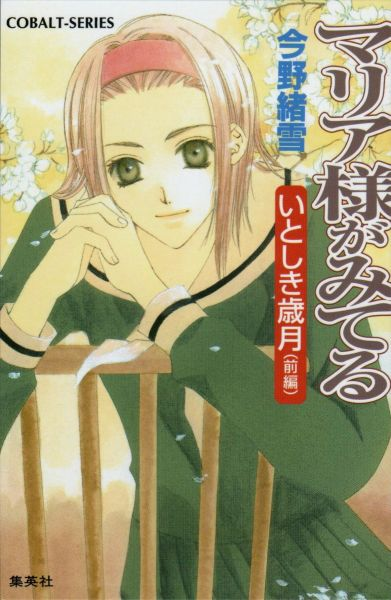
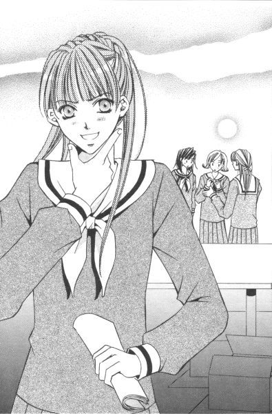
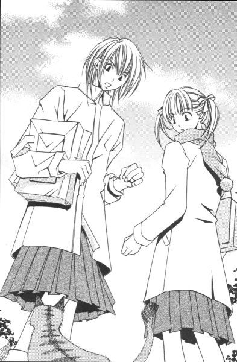
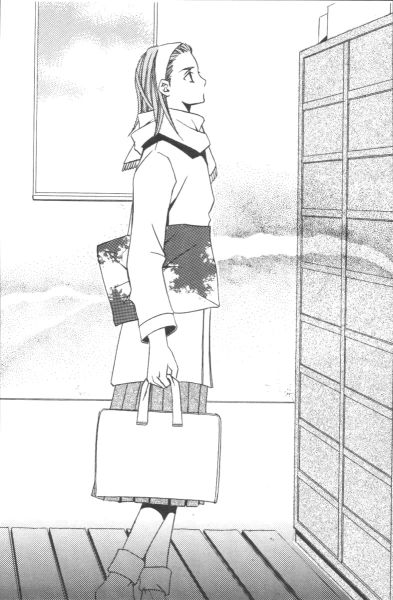
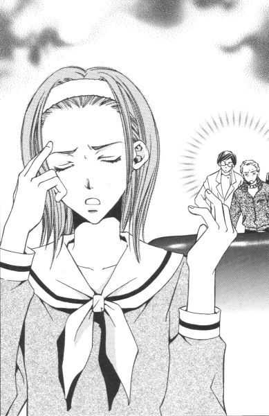
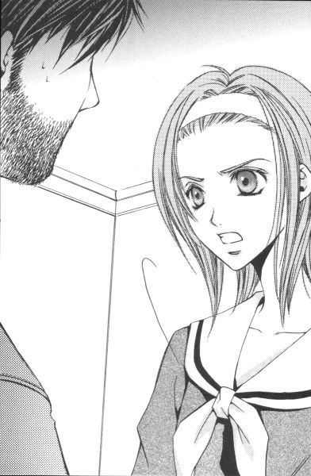
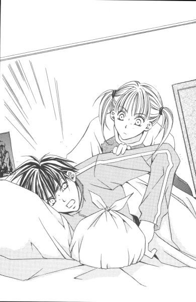
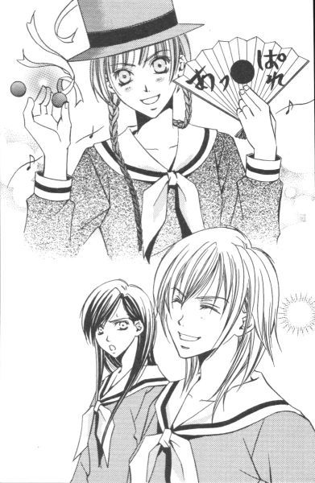
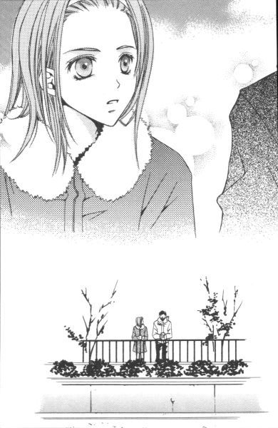

| [今野緒雪] マリア様がみてる07 | |
| 今野緒雪 | |
| (2015) | |
|
マリア様がみてる
いとしき歳月（前編）
今野緒雪
|

もくじ
黄薔薇まっしぐら
ことの発端
ウサギとネコとオオカミと
傘はり浪人の妻
イエローローズ騒動
いと忙し日日
月曜日
火曜日
水曜日
木曜日
金曜日
土曜日
おまけ
一寸一服
あとがき


マリア様がみてる いとしき歳月（前編）
「ごきげんよう」
「ごきげんよう」
さわやかな朝の挨拶が、澄みきった青空にこだまする。
マリア様のお庭に集う乙女たちが、今日も天使のような無垢な笑顔で、背の高い門をくぐり抜けていく。
汚れを知らない心身を包むのは、深い色の制服。
スカートのプリーツは乱さないように、白いセーラーカラーは翻らせないように、ゆっくりと歩くのがここでのたしなみ。もちろん、遅刻ギリギリで走り去るなどといった、はしたない生徒など存在していようはずもない。
私立リリアン女学園。
明治三十四年創立のこの学園は、もとは華族の令嬢のためにつくられたという、伝統あるカトリック系お嬢さま学校である。
東京都下。武蔵野の面影を未だに残している緑の多いこの地区で、神に見守られ、幼稚舎から大学までの一貫教育が受けられる乙女の園。
時代は移り変わり、元号が明治から三回も改まった平成の今日でさえ、十八年通い続ければ温室育ちの純粋培養お嬢さまが箱入りで出荷される、という仕組みが未だ残っている貴重な学園である。
卒業式が近づいた三月の始め、廊下で会った白薔薇さまが突然言った。
「おもえばいととし」の「いととし」とは何ぞや？と。
それは『仰げば尊し』の歌詞の一節についてだった。
何の前置きもなく聞かれても、答えに窮する。いや、前置きがあったところで、答えようもなかったけれど。事あるたびに歌いながら、歌詞の意味までは考えたことがなかったから。
すると白薔薇さまは、「いと疾し」なのだと教えてくれた。今日歌詞カードを見て、そのことを知って、彼女自身が驚いたのだそうだ。
じゃあ、今まで何だと思っていたんですか、って聞いたら、漠然と「愛し」だと思っていた、そう答えた。
ただそれだけの話なんだけど。
なぜか心に残ったんだ。
思えば早かった、より、
思えば愛しかった、の方が何かいいな、って。
振り返ってみて、愛しかった、そう思えるような学園生活だったら、それはとっても幸せなことだろうな、なんて。
黄薔薇まっしぐら
ことの発端
１
放課後のクラブハウスの一室に、少女たちが集まっている。
「──で、黄薔薇さまも紅薔薇さまも、めでたく合格なさった、と」
新聞部の部長、築山三奈子は書きかけの取材メモにチェックマークを打ってから顔を上げた。声をひそめるのは、別によからぬことをしているからではない。
彼女のそれは、単なる日頃の癖なのである。職業病と言い換えてもいい。
新聞部は、言わずと知れた新聞を作る部活動。
記事として発表する前に余所に漏れては死活問題である。『新たに聞く』で新聞。古ぼけた情報を提供するようでは、それは新聞とは呼べない。真新しい、古新聞紙を発行するようなものだ。名付けて新古聞紙か。──何じゃ、それ。
とにかく、スクープという言葉に命をかけた築山三奈子（十七歳）がこの部室内で気兼ねなく大きな声を出せるのは、プリンターがフル稼働している時だけと言っても過言ではない。その割りに、スクープ記事が紙面を飾ることはあまりないのだが。それは言わないお約束。
「よもや不合格なんてこと、万に一つも想像していませんでしたけれど。受けた大学、すべて合格とは恐れ入りますね」
三奈子の妹、山口真美がそっけなくつぶやく。何か、もっと抑揚を出せないものか。せっかく盛り上がる話題なのに、そこで一気にテンションが下がってしまう。
「優先入学っていう、ありがたい制度を蹴ってまで受験なさったお三方ですもの。チャレンジ精神旺盛というか。......勝算あってのことでしたでしょうけど」
結果を予想していただけに、あまり興味をそそられないらしい。『リリアンかわら版』のファイル整理しながら、片手間に会話に参加しているといった姿勢である。好評だったバレンタイン特集号が、最後のページに加わった。
「それで、皆さまどちらの大学にお進みになるかというのは」
別の一年生部員が、興味津々で尋ねた。そう、そういう反応だ。求めていたのは。
「それがまだ」
三奈子は首をすくめて答えた。
「関係各所を突っついてみてはいるんだけれど、どうもうまくいかないのよね。口が固いのか、本当に知らないのか」
「はぁ、関係各所......」
真美を除く一年生（三人いるので便宜上、部員Ａ、部員Ｂ、部員Ｃと呼ぼう。もちろん三奈子だって部員の名前くらい覚えているが、本筋とは関係ないので）は全員わかったようなわからないような表情をして三奈子の言葉を繰り返した。
関係各所。
簡単に言えば、薔薇の館の面々である。本人たちに突撃取材したくても、このところ三年生はどのクラスもほとんどの授業が自習になっていて、休み時間に訪ねていっても教室は学級閉鎖直前の風景のように閑散としており、会いたい人に会える確率が低くなっていた。
まあ、それで薔薇さまの妹やそのまた妹に探りを入れてみたのだが、これがなかなかに手強い。
しかし、つぼみたちは口が固いにしても、その妹たちは本当に知らないと見える。
黄薔薇のつぼみの妹、島津由乃はああ見えて意外に曲者だが、長姉のことは「令ちゃん」ほど興味がないようで「知らない」で済まされてしまった。
紅薔薇のつぼみの妹、福沢祐巳になると、もう嘘をつけば顔にもろ出るタイプ。あの反応から想像するに、彼女は絶対に知らない。
「それにしても」
部員Ａがため息をもらした。
「なぜ薔薇さま方は受験をなさったのでしょう」
すると、部員Ｂも部員Ｃも「そうね、そうね」とうなずいた。
一度リリアンのエスカレーターに乗った生徒は、あまり降りようとはしないものだ。
環境もいいし、校庭も広い。伝統があるから蔵書や資料も充実していて、かと思えば最新の設備も整っている。受験のための勉強ではなく、純粋に学問をするための学舎。のんびりした校風にどっぷり浸かれば、なかなか外の世界に飛び出す気持ちにはならないものだ。
そういうこともあって、受験態勢が整っていない。態勢不十分だから他校を受験する生徒が少ない。卵が先か、ニワトリが先か。
「単に、リリアン女学園大学に行きたい学部がなかっただけじゃないの？」
三奈子は自分の推理を口にした。
そう。
高い目標がある者は、受験態勢などなくても努力で達成するものなのだ。
「ここら辺で、殿方とご一緒に勉学を、とお考えになったとか」
キャッ。部員Ａ、部員Ｂ、部員Ｃが興奮して揃って肩を上げ下げした。
一年生は無邪気でいい。──一人を除いて。
「その理由、白薔薇さまは当てはまらないでしょう」
可愛くないその一人、真美がつぶやく。
「どうして」
「何でも、暮れになって急に大学進学を考えられたとか」
「ふうん」
何か、どこかでそんな話聞いたことがあったかもしれない。が、三奈子は黙って相づちを打った。真美のやつ、いつの間に取材していたのか。
「その時には、すでに優先入学の願書も締め切られていたらしくて。──で、急遽、受験組に」
何の心境の変化か。それでも一、二ヶ月受験勉強しただけで受かってしまうんだから、白薔薇さまはさすがである。見た目優等生タイプではないのだが、やるときはやるものだ。
「紅薔薇さまも、そういう基準で外に出ようとなさる方には見えませんけれど」
そういう基準。
男性とお近づきになりたくて、共学志願。あの、麗しの紅薔薇さまが。──確かに、それはないな。そう、三奈子も納得した。
「でも黄薔薇さま辺りは、あるいは。面白い経験ができそうな方向に食指が動く方ですから」
何でそんなことまで知っている。興味がそそられる内容をあくまで淡々と話す真美に、三奈子は軽い嫉妬すら感じた。可愛い後輩が成長したのだと喜んでやるべきところなのだろうが、人間だからそんな風に聖人君子のごとく納得することはできない。
（私が一年生の頃は、もっと素直で可愛げがあった）
こらこら。論点がずれている。
今はスランプかもしれないけれど、新聞部の部長築山三奈子がその気になったら真美なんか足もとにも及ばないほどの一大スクープをゲットできるはずなのだ。
そう。姉妹とは、師匠と弟子のような存在。永遠のライバルなのである。
「黄薔薇さま......」
三奈子がメラメラと闘志を燃やしはじめたその時、部員Ａがつぶやいた。
「何？」
後を引く余韻に、この際妹の件は棚上げして食いつく。黄薔薇さまは自分自身が興味惹かれる物事に目がないが、三奈子は誰かが起こしてくれる面白い行動が大好物だった。
「いえ。そういえば、私黄薔薇さまをお見かけしたんだったなぁ......って。それだけなんですけれど」
「どこで」
「遊園地です。この間の土曜日の夕方」
「遊園地？」
実は部員Ａ、知る人ぞ知る某遊園地マニアなのである。そういえば、頭の上で左右に作ったお団子ヘアは、彼の遊園地のネズミのキャラクターに似ていなくもない。
「どなたといらしていたのかしら？」
もしや黄薔薇ファミリーで、と想像して「しまった」と思った。思い出づくりのために、卒業前に姉妹で遊びにいくということはよくあることだ。知っていたら、何を押しても密着取材していたものを。
「お姉さま。もっとよくお考えになってください」
真美が、呆れたように口を挟む。
「まだ、何も言っていないでしょ」
「言わなくとも、何をお考えだったかくらいわかります」
たぶん、当たっているので、三奈子は黙った。時々、心の中を全部読まれているようでぞっとするのだ。本当のところは真美がエスパーなのではなく、自身が極めて単純でわかりやすい性格なのだということを三奈子本人は気づいていなかった。
「土曜日の午後からあの遊園地に行くということは、泊まりと考えるのが自然です」
「まあ、そうね」
日帰りができないこともないけれど、都外の遊園地である。その日のうちに帰ってきたかったら、朝から出かけられる日を選ぶのが一般的だ。
「でも、翌日の日曜は何の日でしたっけ？」
「翌日の日曜？ 日曜、日曜......あ、バレンタインデーの景品の日！」
知らない人が聞いたら、明らかに意味不明であろう言葉をつぶやいて三奈子は立ち上がった。
「正解です。着席してください」
真美が冷ややかに命じる。お前はクイズ番組の司会者か。
「正確には、バレンタイン企画宝探し大会の副賞であるところの半日デート券の使用日、が正しい」
「......細かい性格」
「ありがとうございます」
横分けにした前髪をピンできっちり固定しているから、ちょっとやそっと頭を動かしても髪型は乱れない。真美のヘアスタイルのコンセプトは、「隙がない」ではないだろうか。
「翌日半日デートが控えている令さまが、泊まりがけで遊びに行かれるとは考えられません」
というわけで、黄薔薇ファミリーの思い出づくりの線は消えた、と。慣れている部員Ａは翌朝帰ってきて新聞部の仕事（デートの取材）をやってのけたが、デートの主役でもある支倉令さまが危ない橋を渡るとは思えない。妹の島津由乃だって、日曜日の昼間に「ちょっとお買い物に」というスタイルでＫ駅の本屋にいたことだし。
「あの......」
姉妹漫才が一区切りついたところで、部員Ａが中断していた話を元に戻した。
「黄薔薇さま、男の方とご一緒でしたけれど」
「男!?」
この部屋にいる部員Ａ以外の人間、三奈子ももちろん冷めた真美でさえ、「男」という単語に食いついた。男性の影が微塵にも感じられない現三薔薇たち。卒業を前に恋人発覚ともなれば、この上もないスキャンダル。間違いなくスクープとなるだろう。
「二十歳......いえ二十五、六の男性と腕を組んで歩いていらしたから、一瞬人違いかとも思ったんですけれど」
「腕を！」
卒業後の進路を載せるより、がぜん面白くなってきた。お嬢さま学校とはいえ、生徒は十代の生身の少女たち。恋愛がらみの話を嫌いなはずがない。いや、むしろ大歓迎だろう。
「これは取材するしかないわね」
この時点で三奈子は、再来週に予定していた卒業記念号を差し替えてもいいとさえ思っていた。必要ならば、号外という可能性も考えていい。
しかし。
「その方、銀縁眼鏡でひょろりとしていらした？」
部員Ｂが部員Ａに、不思議な質問をした。
「いいえ？ ガッチリした、スポーツマンタイプ」
「あら。背の高い、神経質そうな方でしょう？」
部員Ｃまで。心当たりでもあるように、具体的な身体的特徴をあげる。
「何、それ」
三奈子と真美がほぼ同時に尋ねた。会話に仲よく取り残されるなんて、さすがは姉妹。お互いに嫌な顔をしているが。
「私もお見かけしたんです。たしか先週の金曜日。美術館で手をつないでいらした」
とは、部員Ｂの談。同じく部員Ａも。
「レストランで。日曜の夜に。肩を抱かれて店を出ていかれて──」
............。
新聞部の部室に、静寂が訪れた。

金曜日から日曜日まで、連日お出かけの黄薔薇さま。
まあ、そういうこともあるわな。──一同、それぞれが心の中で善意の解釈を試みていた。
でも、お連れがいつも違う男性で、それぞれ親しげで、ってどういうことだろう。この部屋にいる五人のうち三人が別々に目撃しているのだから、クラブハウスを飛び出して聞き込みをすればもっとわんさか出てくるかもしれない。
「これまで男のおの字も出てこなかった黄薔薇さまが......」
しかし、どんなに気持ちが逸ってもできないことはある。
この材料のみを使って、読者を納得させられるだけの事実を探り当てることは、いかな新聞部の部員たちでも無理であった。
２
【部員Ａ（仮）の証言】
先週の土曜日のことでした。私、遊園地に行ったんです。
ええ、もちろんその日は学校が休みではなかったので、午後から。一旦自宅に戻りまして、着替えてから出かけました。遊園地とリリアン女学園のちょうど中間あたりが私の家なので、そう大変でもありません。
あ、電車で行きました。いつもそうしているんです。一泊分の荷物を親戚の家に置いたら、すぐに遊園地に出かけます。一つ上の従姉がいるんですけれど、遊園地仲間で。年間パスポート持っているので、暇さえあれば行っています。お年玉のほとんどは、それに消えちゃうんです。ま、好きですから仕方ないんですけれど。
そうそう、黄薔薇さまの話でした。
遊園地に入ろうとしていた時、駐車場の方からカップルが歩いてきたんです。結構アツアツで。腕絡ませて。身体をぴったりくっつけて。
あまりジロジロ見るのも失礼だし、目の毒ですからすぐにそらして入場したんですけれど、背後から漏れてくる女の方の声に聞き覚えがあって反射的に振り返ったんです。そうしたら、それが黄薔薇さまだった、というわけです。
もう、びっくりですよ。
これがいつものクールな黄薔薇さまか、と思うほどもう別人なんです。
本当に別人じゃなかったのか、て？ そうですね。辺りも暗かったし。
でも、間違いないと思いますよ。だって、それから私、どうにも気になって、アトラクションの列に並んでいる時やパレードの最中なんか、人混みの中からそのカップル見つけちゃうんですよ。
その度に、「あ、黄薔薇さまだ」と思いましたもの。カップルは「二人の世界」って感じで、私のことなんか全然気がつきませんでしたけど。
男性の特徴は......。そう、身長百七十くらいのたくましい感じでしょうか。年は二十代後半......三十は越えていないと思いますけれど。自信がありません。暗がりとか、イルミネーションの側とか、アーケードにあるお店の中とか......場所によって印象って違いますから。
え、従姉の家ですか？ 遊園地の傍の駅から徒歩十分......、いえ、十五分といった所でしょうか。
ありがたいですよ。門限気にしながら遊ぶなんて、心底楽しめないし。ホテルなんか泊まれませんからね。
そういえば、黄薔薇さまはどうなさったのかしら。
結構遅くまでいらしたみたいだけれど。お連れの方に送ってもらえたかしら。あー、私も車を持っている大人の男性とおつき合いしたいわ。
（ため息）
【部員Ｂ もちろん（仮）の証言】
先週の金曜日です。
都内のデパートにある美術館で、黄薔薇さまを見ました。リトグラフ、っていうんですか。版画の展覧会があって。私、あまり興味がなかったんですけれど、父の会社の取り引き先がその美術館と何か関係あるらしくて、ただ券もらったんで母と行ったんです。
父ったら、私以上に芸術音痴なくせに見栄張っちゃって。家族に行かせて、大ざっぱに印象聞いて、あたかも観てきましたって態度とるんです。ずるいでしょう？お陰で、我が家には一回きりしかページがめくられなかった図録だらけですよ。困ったものです。
あ、ばれちゃいました。金曜日、部活を休んだのはそのためなんです。
閉館が七時なので、部活やってからだとちょっと無理ですよね。学校から直行できるように、立ち寄り届けまで出して制服のまま行きましたよ。親の見栄のために、娘も大変です。
黄薔薇さまは私服でした。
三年生ってこの時期、登校したりしなかったりしていますよね。受験とかあるし。黄薔薇さまも、その日は学校に来ていなかったのかもしれませんね。もしくは、午前中だけ出て午後帰ってしまわれたとか。
相手の方は、やせて銀縁眼鏡をかけて......。何ていうのかしら、あまり日に当たらない感じの男の人でした。あ、頭は七三分けだったかも。
どちらかというと、古くて固い感じの方ですね。でも、年寄りというわけじゃなくて。三十くらいでしょうか。公務員とか、銀行員とか、研究員とか......。そんなタイプ。
ああ、地味。そういう言葉が当てはまりそう。
それがね、手をつないでいるんですよ。黄薔薇さまと。
女子高生と手をつないで歩くなんて、どちらかといえば派手ですよね。でも美術館のデートは地味かしら。とにかく、何か浮きまくりなんですよ。その二人。
私？
苦労しましたよ。
黄薔薇さまたちが少し前に歩いていらしたから、こちらの姿を見られないようにできるだけゆっくり興味ない展示物を眺めて母を引き留めて。
だって、面倒じゃないですか。黄薔薇さまがリリアンの制服を着ている私を見つけて気まずくなったり、母がそのカップルの女性の方が黄薔薇さまだと知って騒いだりしたら──。
ねえ？
【部員Ｃ しつこいようだが（仮）の証言】
確かに、背が高かったから全体的に長っ細い印象ではありました。けれど、やせているという印象はなかったですね。
髪型ですか？ そうですね、ちょっと色を明るくした短めの髪をバサバサ、って感じに流して。
おしゃれでしたよ。銀縁眼鏡もかけていませんでしたし。ブランド物の黒いロングコート着た姿なんて、モデルさんみたいでしたもの。
はい。お見かけしたのはレストランです。駅から少し歩きますし、テレビや雑誌の取材はお断りという知る人ぞ知るフランス料理のお店で。以前、その店の裏にある教会で親戚の結婚式があって、両家の親族が揃って食事をしたんですけれど、雰囲気も味もとてもよくて、また来たいと思っていたんです。
それで日曜日は両親の結婚記念日だったので、七時から予約入れて家族四人で出かけたんです。あ、いえ。あの日は 黄薔薇のつぼみと 白薔薇のつぼみの半日デートの張り込みがあって夕方までＫ駅にいたので、私だけ現地集合ということになりましたが。
嫌だ、レストランでキョロキョロなんてしませんよ。黄薔薇さまの姿を見かけたのは、本当に偶然なんです。黄薔薇さまが食事の途中で一度席を立たれたようで、その時は気がつかなかったんですが戻ってこられた時にお姿をはっきりと確認しました。五メートルほど離れたテーブルに、いらしたんです。
そうです、男性と二人だけです。
途中から観察したわけですけれど、一番高いコース料理をご注文なさったようでした。私たち家族なんか、最初からメニューから除外して考えてしまうような、お高い料理の数々が運ばれていきましたから。
はい？ 店の中で会ったのにどうしてコートを着ていたのか、って？ああ、もちろん店内では脱いでクロークに預けていらっしゃいましたよ。
黄薔薇さまたちは先にお食事を終えられて、店を出ていかれる時にコートをお召しになったのを見ていたんです。相手の方は、やさしく黄薔薇さまの肩を抱かれて。
そういえば、黄薔薇さまも同じ形の女性物コートを羽織っていたような......。ペアだとしたら、あの男性からのプレゼントかしら。
若いのに、お金持っていらっしゃるんですね。
３
「壁に耳あり、って知っているはずなのに迂闊よね」
自他共に認めるリリアン女学園高等部写真部のエース、武嶋蔦子さんはハハハと笑った。
放課後である。
部活動の生徒はすでに部室やグラウンドや体育館に散った後で、帰宅部の生徒たちもほとんど下校した教室に福沢祐巳は残っていた。高等部の生徒会室「薔薇の館」に向かおうとしているところを、蔦子さんに無理矢理引き留められたといった状態だ。
「蔦子さんさ、弁論部だけじゃなくて演劇部からもお誘いあるでしょ」
祐巳が呆れ顔で尋ねると、蔦子さんは「うふふん」と意味ありげに含み笑いをした。その様子からして、あるとみた。この分では、まだまだあるかもしれない。
蔦子さんは新聞部の一年生三人の証言を、今まさに声真似しながら祐巳の前で再現したところであった。
新聞部の面々は蔦子さんが隣の部室にいたことを知らず、ついつい興奮してプリンターが稼働していないことも忘れ声を大にしておしゃべりに盛り上がってしまったらしい。
「女子校育ちの免疫ない少女に、男の話題は刺激的だものね。お気の毒に、我を忘れて興奮しちゃって」
自分の女子校育ちを棚に上げて、蔦子さんは同情の眼差しをクラブハウスのある方角に向けた。しかし祐巳の知っている限りでは、蔦子さんだっておつき合いしている相手はいないはず。
「──で、これが証拠写真」
「......」
証拠写真、って。祐巳は、心の中でつぶやいた。
「これ──」
「見ればわかるでしょ。これが誰だか」
「そりゃ、わかるけれど」
机に載せられた数枚の写真には、間違いなく黄薔薇さまが写っていた。しかし祐巳がわからないのは、何のために蔦子さんがこの写真を撮ったか、なのである。
「新聞部の情報の裏付けをね。ちょっと、とってみようかなぁ──と」
「これ......探偵事務所とか興信所とかの仕事だよ」
いかにも隠し撮りしましたという写真ばかりである。犯罪ギリギリじゃないの、って祐巳は思った。
「平日だろうが休日だろうがお構いなし。二十代から五十代まで幅広いし、タイプもいろいろだけど。唯一といっていい共通点は、みんな大人の男性で自由になるお金をたくさん持っている、ってこと」
「どうしてわかるの」
「第一に、着ている物が高い。それとデートコースね。前のことは知らないけれど、私が見かけたのはすべてお金かかっているコースだった」
高級料亭。高級ホテルのプール。プレゼントは高級ブランドのスーツ、それから高級ブランドの靴やバッグ。
「す、すごい」
高級、高級、高級。
高級のオンパレード。
祐巳の人生の中で、それはかなり馴染みの薄い言葉である。唯一もっているのは、高級なお姉さまくらいであった。
「そう、うらやましがるな、って。あのさ、祐巳さん。この世の中、ただでいい思いができると思う？」
「......」
「うまい話には裏があるものよ。楽して手に入れた物には、それなりの代償が着いて回るわけよ」
「それ......何？」
「さあ」
「さあ、って」
本当にわからないのか、「自分で考えなさい」の意味なのか、それとも単に言いたくないだけなのか。蔦子さんは、それ以上教えてくれなかった。
「これ、どうするの」
様々なアングル、いろいろなロケーション、その度違う男性とともに写っている黄薔薇さまの写真を、祐巳は指さした。
「祐巳さんに預ける」
「預けられても」
「重荷ならビリビリに破いて、お宅の生ゴミと一緒に捨ててちょうだい。お手数だけど」
ネガはあるから、って蔦子さん。何だってそう、ややこしいことに首を突っ込んでおいて他人に押しつけるかな。
「何となくね。黄薔薇革命の時みたいにね、新聞部にかき回されたくないわけよ。で、なんちゃって探偵になって尾行したりしてみたんだけど。取材が進むにつれて、嫌な感じになってきてね」
「嫌な......」
「私の眼鏡は、度がきついけれど色は付いていないつもりなんだけど」
「うん」
「どんどんサングラス化していくんだな、これが」
「はぁっ？」
「そこで、裸眼で１・２の祐巳さんにバトンタッチというわけです。よろしく」
「よろしく、って言われても」
困る。しかし蔦子さん、机に広げた写真を手早くまとめて祐巳の手に握らせた。
「令さまたちに相談する時、証拠品として使うことくらいできるわよ」
「令さまに相談しろ、っていうの？」
二年菊組出席番号三十番の支倉令さまは、黄薔薇さまの妹である。
「いや。そうは言わない」
蔦子さんは椅子を立ちながら答えた。ただ、そういう選択もある、っていうことだと。
「蔦子さん」
「お引き留めして悪かったわね。そろそろ、薔薇の館に行かなきゃいけないんじゃない？」
祐巳の鞄を持ち上げて、差し出す蔦子さん。時計を見れば、もうここで十五分も話し込んでしまっていた。
「ごきげんよう」
鞄を受け取り、祐巳はあわてて廊下に向かった。
「あ、祐巳さん」
「え？」
振り返ると、蔦子さんは「ううん。ごめん」とつぶやいた。大した用事じゃなかったらしい。
「ただ祐巳さんだったら、黄薔薇さまに直接回答を迫ることもできるかもしれない、って思っただけ」
そう言って、バイバイと手を振る蔦子さん。どういう意味だか、さっぱりわからなかった。
４
写真は制服のポケットに入っている。スカートの襞と襞の間にある内ポケット。表面からは見えない場所。
黄薔薇さまがどこで何をしようと、構わない気がした。
わざわざ私生活を暴いてどうしようというのか。
そう思ったからこそ、蔦子さんも手を引いたのかもしれない。しかし、だからといって写真を他人に押しつけるのは問題だ。この写真、いったいどうしろというのだ。
人が写っている写真を、生ゴミと一緒に捨てるなんてできない。ましてや、ビリビリにやぶくなんて。そんな罰当たりな、って。
ギシ、ギシ、ギシ、ギシ。
薔薇の館のおんぼろ階段をきしませながら、祐巳は二階へと上った。
今、この階段が壊れて真っ逆さまに落ちたら──。何か心に気がかりを抱えている時は、特にそんなことが頭を過る。
例えば、今日の放課後までに提出しなくちゃいけないレポートがまだできていなくて、休み時間に仕上げようと決めて出てきた朝。今、自分に何かあったら、レポート未完成なことが先生に知れてしまうから死ねない、とか。
出がけにペチコートのほころびを見つけたけど、体育もないし、遅刻しそうだったからそのまま登校した日は。ほつれたペチコートを見られてしまうわけにいかないから、大けがして救急病院に運び込まれるわけにはいかない、とか。
死んだり重傷を負ったり、そんな場合にはレポートとか下着とかの心配している暇はないのだけれど、やっぱりリリアンの生徒として、そして年頃の女の子としては気にしてしまうところなのである。
ギシ、ギシ、ギシ、ギシ。
今、この階段が崩壊したら。打ち所が悪ければ死ぬかもしれない。遺体のポケットから黄薔薇さまの盗撮写真がわらわら出てきたら、皆どう思うだろう。──だから死ねない。
儀式のように言い聞かせて、祐巳は階段を上り終えた。
数年前からきしみ続けていたという木製階段は、ちょっとやそっとでは壊れそうもない。こんなに大きな物が壊れるとしたら前触れがあるはず、ってみんな言っている。『祐巳ちゃんの妹が卒業するあたりまで大丈夫じゃない』って白薔薇さまも笑っていた。
（......）
階段のことはともかく、結局、写真は黄薔薇さまに渡すのが一番いい気がした。
とはいえ。
三年生がいつ学校に来るのかわからないから、始終持ち歩いてないといけないのは結構大変そうだった。交通事故とかにも、いつも以上に気をつけないと。
「遅くなりました......っと」
ビスケット扉を開けて勢いよく飛び込んだ祐巳は、
「はあい」
部屋の中を見てどっと気が抜けた。
大きなテーブルに座っていた一年菊組の島津由乃さんが、一人、右手を中途半端に挙げて迎えてくれた。
「みんなは？」
祐巳は、鞄とコートをいつも座っている椅子に置いて尋ねた。三年生は居なくて当たり前みたいな状況にはなっていたが、由乃さんのお姉さまである令さま、祐巳のお姉さまである祥子さま、の二年生二人、そして同級生の藤堂志摩子さんの姿もない。
「まだ」
退屈そうに、いや本当に退屈だったのだろう、由乃さんは答えながら祐巳のために紅茶を入れてくれた。
「あれ、三人とも？」
「何かさ、いろいろあるみたいよ。薔薇さまにもなると」
「......そっか」
生徒会役員選挙も終わったし、事実上つぼみたちが薔薇さまとして仕事を引き継いだようなものらしい。
「私たちも、これからはがんばらないといけないんだよね」
「そうだね」
差し向かいで紅茶をすすりながら、二人はカップから立ち上る湯気にも負けないため息を吐いた。四月になって新入生を迎えたら、つぼみと呼ばれる立場になる。正式に「薔薇さま」と呼ばれるお姉さまをナイスフォローするのが、つぼみに与えられた任務なのである。
しかし現状は、お姉さまがいないと何もできない愚妹たち。コチコチ、時間だけが過ぎていく。うーん。さっきまでの由乃さんじゃないけれど、かなり退屈。鞄の中には宿題のプリントが入っているけれど、今はそんな気分じゃない。来るはずの人を待っている時って、別のことして気を紛らわせるなんてなかなかできるもんじゃない。
こういう場合、やっぱり雑談して時間をつぶすのが妥当な線か。
（しかしなぁ......）
毎日会っているから、新鮮な話題がない。
話題がなくても気兼ねなく過ごせる間柄であるから、無理に話題を見つける必要はないんだけど。退屈すぎて三つ編みいじりながらあくびしている友に、何か面白い話でも提供してやりたいとは思うもの。
（今更、小森先生の教壇ズッコケ事件は古いし）
見物人なし、一人百面相をしながら考えること一分。別に面白い話ではないが、由乃さんにお知恵拝借したい事柄はあった。
「由乃さん」
「何」
かったるそうに、由乃さんは顔を起こした。
「三年生をうまく捕まえる方法ないかな」
「どういうこと」
ぴくり。眉毛が上がる。
関心がある内容か。
「黄薔薇さまに会いたいんだけど。いつ登校するかわからないから」
「電話して本人に聞いてみたら？」
そっけなくつぶやいた答えは、単純明快だった。
「......あ、そうか」
三年生に電話するなんて、祐巳は今まで考えたことがなかった。さすが由乃さん。
「黄薔薇さまに、何の用」
「ちょっとクラスメイトから頼まれ物されて」
「ふうん」
由乃さんはそこであっさりと引き下がった。これが令さまがらみの話だったら、頼んだ人間が誰で、何を手渡されたかを白状するまで食いついて離れないだろう。
しかし。
「電話かけにいこうか」
由乃さんは「うん」と一人うなずいて立ち上がった。
「え、今から？」
「善は急げ、って。さ、祐巳さんも立って」
「え、善なの？」
「祐巳さんの屁理屈言い」
ぐいぐいと祐巳の腕を引っ張る由乃さん。黄薔薇ファミリーの隔世遺伝か。ちょっと面白そうなことがあると、磁石のように引き寄せられたりするところ。
「でも、お姉さまたちが」
「すぐ戻るんだから、ちょっとくらいいいわよ。別に会議があるわけじゃなし。自主的に集まっているだけなんだから」
それは確かにそうなんだけど。「お姉さまを待つ」という目的のために、ここで待っていたようなものなのに。待ちきれなくて、出かけちゃっていいものだろうか。由乃さんの場合は、お姉さまが「お隣の令ちゃん」だから気楽なんだろうけれど。
結局、由乃さんに引っ張られるようにして祐巳は事務所の前まで来てしまった。生徒が使っていい電話は、ここにある公衆電話だけである。
由乃さんは受話器を持ち上げると、祐巳が取り出したテレホンカードを滑るように黄緑色のボディに挿入し、手早く電話番号をプッシュした。暗記しているらしい。
トゥルルルルル。呼び出し音が鳴ると同時に、受話器を祐巳にチェンジ。
「え、かけてくれるんじゃないの」
「甘い」
こうでもしないと祐巳が電話の前でオロオロするだろうから、って。さすが、よくわかっている。
そうこうしているうちに、電話がつながった気配。
『はい、鳥居でございます』
受話器の向こう側から、女性の声がした。もう逃げられない。
「あ、私、リリアン女学園高等部一年の福沢と申します。黄薔薇......いえ、江利子さまはご在宅でいらっしゃいますでしょうか」
由乃さんが、音を出さずに拍手した。
『まあ、いつも江利子がお世話になっております』
たぶん、黄薔薇さまのお母さんだろう。落ち着いた、やさしげな声だ。
「いえこちらこそ、親切にご指導いただいて......」
もごもご。語尾がうやむやに消える。大人相手にお話しするのって大変。特に電話は、相手の顔が見えないし。
『江利子は......』
お母さんの声が、突然くもった。そして、少し間をおいてから答える。
『まだ帰っておりませんのよ』
「何時頃お戻りになるでしょうか」
『......』
「あの」
『わかりません』
わかりません、って。ちょっと不思議な気がした。高校生の女の子だったら、何時頃帰るか言って外出するのが普通じゃないか、って。
でも、各ご家庭によって門限とかも違うだろうし、気を取り直して祐巳は尋ねた。
「今、学校からなんですが、ご迷惑でなければ夜にでももう一度自宅からかけ直してよろしいですか」
いないと知って「そうですか」と電話を切ってしまっては、電話代使ってかけた意味がない。
『夜、ですか』
電話の向こうからは、困惑したような声が聞こえてきた。
「ええ。何時頃でしたら」
祐巳の質問に被さるように、お母さんは言った。
『それが』
「はい？」
『今日は戻らないかも......』
「はぁ!?」
その答えは、予想していなかった。外泊。それじゃ、今晩何時にかけても黄薔薇さまは不在であろう。
『あ、いえ、親戚の家に行っておりまして』
何が「あ、いえ」なのかわからないが、黄薔薇さまのお母さんはこちらが何かを言う前に否定した。
「ご親戚の家に」
『いつ帰るかわからないんですの』
「わかりました。ではご連絡がありましたら、福沢から電話があったことだけお伝えください」
『福沢さんね。承知しました』
「失礼します」
『さようなら』
祐巳は頭を下げながら「一、二、三」と心の中でカウントしてから受話器を元の位置に戻した。
ピー、ピー、ピー、ピー。テレホンカードが、べろんと吐き出される。
「親戚の家に、お泊まりだって？」
由乃さんは胡散臭い表情をして腕組みした。
「怪しい」
「どこが？」
お財布にテレカをしまいながら、祐巳は首を傾げた。
「何がどうして、って。そういうのはちょっとわかんないけど。何だか怪しい」
第六感、ってことですか。でも由乃さんのそれは、ばかにならないんだと祐巳は知っている。何せ、エスパーなんだから。
「いつから親戚の家に？」
廊下を歩きながら、由乃さんが質問する。
「そこまで聞いていないよ。ここ二、三日ってところじゃない？」
祐巳は宙を見る。そんな所には答えは書いていないんだけど。
「ここ二、三日？ だとしたら、ますます怪しい」
由乃さんのこの目つき。新聞部の部長を彷彿とさせる。
「だから、どうして」
「昨日も今日も見かけたからよ」
「どこで、誰を」
「学校で、黄薔薇さまをよ」
説明しなくてもわかるでしょ、って。そんなの、言ってくれなきゃわかんないよ。
「親戚の家に泊まっていて、学校来る？」
窓から外を眺めて、二人は「うーん」と唸った。
まだまだ寒いけれど、木々の芽がちょっとずつ膨らんできている。人間なんかより、ずっと季節の移り変わりに敏感なんだろう。校舎から校舎へ、学園に住み着いているノラ猫のランチが中庭を駆け抜けていくのが見えた。
「都内の親戚とか」
祐巳は一生懸命考えて、それで結論らしきものを導いた。
「ああ、それはあるか」
由乃さんは一度大きくうなずいてから、やはり腑に落ちないのか「でも」と続けた。
「でも、わざわざ泊まる？ 学校があるっていうのに。普通帰るでしょ。帰れる距離なら」
「そうよね」
黄薔薇さまの家は、由乃さんの家ほどじゃないけれどそんなに学校からは遠くない。翌日学校に登校する気があるのなら、夜遅くなっても帰宅した方が都合がいいはず。
「お祖母ちゃんが危篤だとか」
最後に一目、可愛い孫娘の顔を見たいとうわごとを言ったので、死に水をとる覚悟で泊まり込んでいるという理由はどうだろう。
「......だったら、高校生の娘以前にその母親が駆けつけているんじゃないの」
由乃さんは、祐巳の考えを即却下した。黄薔薇さまのお祖母ちゃんだったら、お母さんにとっては母親もしくはお姑さんなのである。
「ふむ」
他人のお祖母ちゃんを軽々しく殺しちゃいけない、とちょっと反省。
「のっぴきならない用事があって、今日だけ一泊」
「──ならわかる。だとしたら、明日はお休みか」
のっぴきならない用事ならば。
「うーむ」
もう、よくわからなくなってしまった。わからなくなったから、一応そういうことにしておいて、推理はここまでと一旦締めることにした。その先は、明日。もしくはその次の日に。あわてなくても、待っていれば黄薔薇さまはそのうち学校に来るだろうし、チャンスがあれば親戚の家に泊まりにいった子細を教えてもらえるかもしれないから。
廊下の前の方を、つぼみたちが歩いているのが見えた。
小走りで追いついて、一緒に薔薇の館に入る。
「あら。あなたたち、何していたの？」
祥子さまが、尋ねる。
「電話です」
一々説明するのが大変だから、祐巳は簡潔に答えた。
「電話？」
令さまが聞き返す。
「調べたいことがあって、ね」
由乃さんが、令さまの手を取りながら祐巳にウインクした。ギシギシとみんなで合奏しながら、階段を上っていく。五人のっても大丈夫なくらい、まだまだ丈夫だ。
「明日の天気予報か何かかしら？」
志摩子さんが歌うように言う。
「まあ、そんなところ」
ビスケット扉を最初に開けながら、祐巳は笑った。
黄薔薇さま登校予報。
──果たして、祐巳と由乃さん、二人の予報士の予想は的中するでありましょうか。
ウサギとネコとオオカミと
１
こんな生活していたら、人間だめになる。
ホテルのロビーに面した喫茶店で、江利子はため息をついていた。フレッシュジュースに浮かんだ氷が、溶けて動く。汗をかいたグラスが微かに音をたてた。
待ち合わせの相手は、まだ来ていない。
スケジュール帳を開いて、昨日の日付にバツをつけた。とにかく、こうして一日一日こなしていくしかない。
ホテルに届いていたピンクのセーターとおそろいのスカートは、今日のデートの相手の指定である。襟にフワフワのウサギのリアルファー。彼はこんなのが好みなわけだ。
届けられた時間から判断すると、昼休みに職場を抜け出して買いにいったようだ。プレゼント用に包装してもらったまではよかったが、レシートを紙袋に入れたままホテルのフロントに預けるあたりが抜けている。カード払いとはいえ、ギョッとするほど高い服をポンと買ってくれたようだ。
しかし、いったいあの人たちは一月にいくらの給料をもらっているのだろうか。今夜のホテル代と、クラシックバレエのチケット代と、食事代と。全部向こう持ちで、その上洋服までプレゼント。
一人がふんぱつすると張り合って、後続がそれ以上お金を使うからきりがない。
もう、何日家に帰っていないだろう。
唯一の救いは、相手が社会人だから、日中は江利子も学校に逃げ込んで昼寝でもなんでもできることだった。
「江利ちゃん」
手を挙げて、うれしそうに近づいてくる男を見上げ、「よっしゃ」と気合を入れて満面の笑顔を作ってみせる。
「お洋服、ありがとう。似合う？」
椅子から立ち上がって、小首を傾げた。
「可愛い。ウサギちゃんみたいだ」
彼は満足そうにうなずく。
「行こうか」
「ええ」
伝票を摘み上げた方とは逆の、彼の左手に江利子は腕を絡ませた。
お互い気持ちよく過ごすために必要なこと。それは、嘘でも「楽しい」と思い込むことであった。
２
翌朝、黄薔薇さまこと鳥居江利子さまの姿は学校にあった。
（ってことは、親戚の家からご登校......）
祐巳は由乃さんみたいな「怪しいぞ」という表情を作って、心の中でつぶやいた。
のっぴきならない用事はなかったのだろうか。廊下をあちらから歩いてくる黄薔薇さまは、そうと知らなければ自宅以外から出てきたなんて信じられないほど、いつもと何も変わることなく普通だった。
教科書なんてもはや入っていない軽そうな鞄には、歯ブラシ・タオル・洗顔クリームといったお泊まりセットもまた詰め込まれてはいないようである。
「祐巳ちゃん」
無邪気に手を振って、黄薔薇さまが近づいてくる。
「黄薔薇さま、ごきげんよう」
「ごきげんよう。久しぶりね。由乃ちゃんには時々、ちらちら会ったりしてたけれど──」
（えっ!?）
髪をかき上げながら、遠くを眺める黄薔薇さまの胸もとを祐巳は見逃さなかった。
（タイが......っ！）
黄薔薇さまの、学園一美しいと評判のセーラーカラーのタイの形が、今朝に限って乱れている。
「ん？ 何？」
思わず指さして絶句している祐巳を見て、黄薔薇さまは「あ、これ？」って笑った。
「変なところにアイロンの線入れられちゃって。それを隠すために、結び目をずらしたのよ」
「ああ、アイロンの線を──」
大きくうなずいてはみたものの、そうなると今度は「誰がアイロンかけたの」って気になって仕方ない。
「黄薔薇さまは、今日はどちらからいらしたんですか」
「どちら、って」
そう言いながら黄薔薇さまは、とっさに空手家が攻撃を受け止めるようなポーズをとった。驚いたのだろう。わかりやすいリアクションだ。
「実は昨日、お宅に電話したんです。そうしたらお留守だったから......」
「ああ──」
黄薔薇さまは「納得」って、小刻みにうなずいた。外泊したことは、知られなければそのまま黙っているつもりだったらしい。
「ご親戚の家にお泊まりだったのでしょう？」
「親戚？ ああ、親戚ね。......そうか。うん、そうなの」
何だ、この歯切れの悪さは。まるで今初めて、自分が泊まった場所が「親戚の家」だったと判明したかのような反応ではないか。
「そ、そう。ちょっと所用があってね。お手伝いで親戚の家に」
言葉を補えば補うほど、黄薔薇さまのそれは言い訳に聞こえてくる。
「寝不足ですか。目が赤いですけれど」
「そうなの。まったく、人使いあらくって困ってしまうわ。とにかく、昼間は学校に避難よ。図書館にでも行って居眠りしようかと」
「昼間は、って。今夜もまた？」
「まあね。......そうだ。祐巳ちゃんが家に電話なんて、何か用事でもあったの？」
「──いえ」
祐巳は首を横に振った。
「いつ登校なさるかお聞きしたかっただけです」
「そう？ だったら、受験も済んだし、大抵毎日来るわよ。遅刻とか早退とかするとは思うけれど」
「そうですか」
スカートのポケットに手を入れてはみたものの、結局祐巳は数枚の写真を手渡すことはできなかった。
黄薔薇さまは明らかに嘘をついている。
少なくとも昨夜は、親戚の家になんて泊まっていないはずだった。
去り際にチラリと見えた。襟のタグに着いた付箋のような紙切れは、紛れもなくクリーニング済みの印。悲しいかな裸眼で視力１・２の自慢の両目は、そこに書かれた文字をしっかり捕らえて離さなかった。
○○ホテル。
そこには都内にある有名ホテルのロゴマークが、堂々と入っていたのだ。
黄薔薇さまは、間違いなく写真の中の謎めいた黄薔薇さまのようであった。
３
黄薔薇さまは、ホテルに泊まって何をしているのだろう。
うさぎさんみたいに目が真っ赤なのは、寝不足のためということだから睡眠をとることを目的として利用したわけではないのだろう。
黄薔薇さまのお母さんは、親戚の家にいっているなんて、どうして嘘をついたのだろう。外泊していることを学校側の人間に知られると、何かまずいことでもあるのだろうか。
そして黄薔薇さまは、ホテルに一人で泊まっていたのだろうか。
──考えれば考えるほど、わからなくなる。写真を渡しておしまいにするはずだったのに、いつしか祐巳は「私は何も知りません」って知らんぷりできなくなってしまった。
「例えば、ってね」
由乃さんが、手つかずのお弁当箱の上に顎をのせて、うんざりしたように言った。
「例え話もいいけど、祐巳さんの場合はモザイクが多すぎるから、何言っているのかわかんないわよ」
「え、そう？」
モザイク、と祐巳は首を傾げた。
「そうよ」
由乃さん、鼻息をあらげる。
「例えばある高校生がいて、その人がある場所で学校の先輩を目撃して、それが何と男連れで。それから別の生徒もその先輩を別のある場所で目撃したんだけど、その時もやっぱり男連れで、でもそれは前の男性とは別人で......、って。ずーっとその調子なんだもの、いい加減イライラしてきちゃう」
由乃さんは、首の辺りをかきむしるようなポーズをした。
「すごい。よく覚えていたわね」
「我ながら嫌になっちゃうわ」
ポリポリ。今度はこめかみをかく。で、結局言っていることがわからなかったか、って祐巳が質問すると「大まかにはね」と由乃さんは言った。
「最大限努力して、祐巳さんが言いたいのはこういうことかなぁ、って解釈はしましたけどね」
「どんな風に？」
「要は、少女Ａが自宅に帰りもせずに、夜な夜な違う男と遊び回っている。って、そういうことでしょ。相手は決まってお金持ちの中年」
「簡潔だわ」
中には二十代もいるようだからすべてを中年呼ばわりするのは厳しいが、言っていることはほぼ正しいし、上手にまとめられていた。由乃さんは絶対、読書感想文とか得意だと思う。
「ずばり、援助交際でしょう。あと家出もしているかもね」
素っ気なく、だが由乃さんははっきりと言い切った。
「えん──」
叫びそうになった祐巳の口を、由乃さんの手の平が塞ぐ。
ここは薔薇の館であった。今のところまだ二人きりだが、いつ誰がビスケット扉を開けて部屋に入ってくるかわかったものではない。誤解を招きかねない危ない言葉は、極力慎むに限る。
「援助、交際」
祐巳はミスプリをまとめたメモ用紙に、大きくその四文字を書いてみた。もちろん聞いたことはあるけれど、全然身近な言葉ではなかった。
蔦子さんの色つき眼鏡は、そういうことを指していたのかもしれない。最初からそういう風に見えてしまっていたら、この一件から手を引きたくなる気持ちもわからないではない。
「客観的な情報からの総合的な判断でしかないけどね」
由乃さんはまだ、それが黄薔薇さまのことだとは気づかない。それほどまでに、この仲間内では縁遠いお話だということなのだ。
┌───────────────┐
│問題。次の言葉の意味を述べよ。│
│ ① 援助 │
│ ② 交際 │
│ │
│解答。 │
│ ① 助けること。助勢。救援。│
│ ② つきあい。まじわり。 │
└───────────────┘
しかし、どうしてこの二つの単語がくっつきあうと、変なニュアンスになってしまうのだろう。祐巳は、お茶をすすった。あんまり気持ちいい言葉じゃない。
「放っておきなさいよ。好きでやっているんでしょうから。傷つくのも後で後悔するのも本人だわ」
由乃さんが突き放すように言った。
「だけど」
その「本人」って、黄薔薇さまだから。放っておいていいとは思えない。
相談するべきか否か。相談するなら今しかない。
しかし、そうやって祐巳が迷っているうちにつぼみの三人がわらわらと部屋に入ってきてしまった。
「ふー、外はまだ寒いね」
と、手を擦りながら令さま。
「委員会のことで先生に呼び止められて、遅くなってしまったの」
と、祐巳に向かって説明するのは、午前中の授業を一緒に受けていてほぼ同じ時間に教室を出たはずの志摩子さん。
「一年に何度もパンを注文しない人間が、どうしてパン当番をやらないといけないのかしら」
ぼやきながら、祥子さま。
薔薇さまたちの貫禄には及ばないが、フレッシュが売り物の紅・白・黄の三薔薇、麗しの揃い踏みである。
「お姉さま、お茶でいいですか」
あわてて立ち上がったので、メモ用紙がむき出しのまま放置されていたことを祐巳はすっかり忘れていた。
「援助交際？」
小さなお重の形のお弁当箱をテーブルに置きながら、祥子さまはつぶやいた。
「何なの、この不快な四文字熟語は」
「あ、それは」
まずい。潔癖性の祥子さまに見つかってしまっては、しつこく糾弾されるか、ヒステリーに火がつくか......とにかく、ただじゃ済みそうもない。
「私、この言葉嫌いよ」
祥子さまは、冷たく言った。
「二つの言葉をくっつけて、その行為の意味をやわらげようとするかのような根性が、まず気にくわないわ。誰が使いだしたか知らない言葉だけれど」
「は？」
まず、言葉の乱れをチェックですか。抗議はその言葉の示している行為について、じゃないらしい。
しかし、それは単なるジャブだった。
「援助交際、って。言葉を飾ったところで、結局は売春なんだから」
ば、ば、ばいしゅん。麗しの祥子さまのお口から、そんな言葉がでてくるなんてっ。パクパクパク、祐巳はショックが激しすぎて、口は動けども言葉が着いてこなかった。
「不倫とか浮気とかも、つい使ってしまうけれど」
「姦通？」
令さまが聞いた。
「そうね。もともとの意味を尊重するならね。軽々しい言葉に置き換えて、その行為自体をお手軽な物だと勘違いしないでもらいたいわ」
免疫のない一年生は、二年生の大人の会話を目をパチクリして聞くしかなかった。
（でも）
そうか。祥子さまのお父さんは、外に何人かおつき合いしている女の人がいるのだった。
確かに言葉のもつ印象って違う。
姦通は重い。不倫や浮気に比べると。傷ついている人間は、その行為を軽く語って欲しくはないのだ。
しかし、これまた重い「売春」という言葉が出た後では、黄薔薇さまの話は切り出せなくなってしまった。
「ところで、これは何なの」
メモを祐巳の目の前に掲げて、祥子さまは尋ねた。
「いえ。ちょっと雑談していた時のいたずら書きです」
苦しい言い訳かな、とは思ったけれど、仕方ない。「雑談の内容は」なんて聞かれたら一発アウトだ。
でも、祥子さまはそうは尋ねなかった。
「そう？」
「はい。決して私がそのような行為をしているわけでは」
混乱して、変な言葉を口走ってしまった。
「当たり前でしょ」
苦笑しながら、祥子さまは人差し指で祐巳の頭をちょこんと押した。
あなたがそんなことするなんて、誰が思いますか。──そんな風に。
かなり信用されているということで、嬉しい反面心苦しい気持ちが祐巳には生まれた。
これも、お姉さまに隠し事をしていることになるのだろうか。
でも、こういう話はやはり祥子さまには不適当なのかもしれない。特に恋愛に関する話は。祥子さまは、筋金入りの潔癖性でその上男嫌いときているから。
（それにしても、どうしたものか）
放っておけ、って由乃さんは言うけれど。放って置いて、新聞部が「リリアンかわら版」でこのことを掲載してしまったら大変だ。卒業間際に、黄薔薇さまの周辺は大変なことになってしまうだろう。
かといって、新聞部に直談判できるほど祐巳は強くない。そんなことをしたら、新聞部は祐巳をも巻き込んで、面白おかしく記事にしてしまうに決まっているのだ。
（相談できるとしたら──）
祐巳はテーブルを挟んだ斜め前の席を、チラリ盗み見た。
（令さま）
いや、と首を横に振る。
真っ直ぐな性格が災いして、黄薔薇さまを真っ正面から斬りつけるような気がしてならない。デリケートな問題だから、ストレートな攻撃はちょっとまずいんじゃないか。
（ということは、由乃さんもだめだ）
由乃さんにしゃべったことは、ほぼ確実に令さまに伝わる。それに、思い込んだら猪突猛進だから、ある意味令さまよりも危険かもしれない。事が、ますます大きくなる。
（志摩子さん）
と、考えてすぐに却下。頼りになるとは思うけど、今ひとつ謎な部分があるから。こういう相談事に向いているかどうかの判断がつかない。
（そうなると、やっぱり紅薔薇さまか）
高等部の中では、一番大人の感覚をもった人だと思う。でも、黄薔薇さまとは友達だから、慎重に話をもっていかないとショックが大きいかも。
「祐巳、聞いている？」
「は、はいっ」
授業中居眠りしていて指された時みたいに、夢中で立ち上がる。
「何やってるの」
祥子さまが、呆れたようにつぶやく。
「......すいません」
いつまで経っても、成長しない愚妹である。
「三年生のお別れ会の話をしているのよ。ちゃんと聞いて」
座りなさい、と目で合図されて、祐巳はしゅんとなって着席した。それにしても、と祥子さまはため息を吐く。
「白薔薇さまの言うとおり。コロコロ顔の表情が変わる子ね」
その時祐巳の脳裏を、セクハラおやじ女子高生の顔がよぎっていった。
４
「ヤホー」
白薔薇さまこと佐藤聖さまという人は、暗い過去など吹き飛ばすほどの明るさで、いつも祐巳の目の前に現れる。
「......ごきげんよう」
「あら、ま、そう言う祐巳ちゃんのご機嫌はよろしくなさそうね」
「そんなこともない、ですけど」
元気はつらつではないが、不機嫌でもない。柄に似合わず、考え事を抱えているから、白薔薇さまのペースにのれないだけだ。
一階の廊下を歩いていたら、いきなり中庭から飛び出してきて「ヤホー」はないだろう。ヤホーは。登山家じゃないんだから。
「祐巳ちゃんは、薔薇の館に行くところ？」
「いえ。今日は皆さん放課後は用があるので」
このまま昇降口に直行して、帰ろうと思っていたところです。
「用？」
「令さまは部活で、志摩子さんは委員会で、由乃さんは定期検診で」
「ほほう。で、祥子は？」
「丁度いいから今日は帰りましょう、って。ここのところ、ちょっと忙しかったから」
すると白薔薇さまは「ふーむ」と考え込むようなポーズをしてから、おもむろに祐巳にギュウッと抱きついた。
「な、何なさるんですかっ」
「よしよし、祐巳ちゃんは寂しかったのね。だから、元気がないんでしょ。いいわ、私を祥子だと思って思い切り甘えなさい。私は身代わりだって構わないわ。祐巳ちゃんのやわらかい身体を抱きしめられるのならば」
「......違いますよ」
勘違いも甚だしい。確かに、他の三人に用があるというだけで放課後恒例のお茶会を中止したのは寂しかったけれど。そんなことで、一々気落ちなんかしていられない。
もし祐巳がしおれて見えたとしたら、それは黄薔薇さまの問題をどういればいいのか思案していたからに相違ないのだ。
しかし、白薔薇さまの勘違いは続く。
「祐巳ちゃん、私に会いたかったでしょ」
「え!?」
「白状しろ」
「ですから、その推理ははずれです、ってば」
ジタバタ抗って、やっとのことで息をつく。
白薔薇さまの身体は温かくて、祐巳の身長とか体重とかに丁度よくフィットして心地いいから、うっかりしてると術中にはまってしまいそうになる。危ない危ない。
「おっかしいなー。祐巳ちゃんが呼んでいるような気がしたんだけど......」
祐巳を解放したその手で、段カット・セミロングバージョンの頭をポリポリとかき首をひねる。
「......」
白薔薇さま、あなたもまたエスパーでしたか。
「呼ばなかった？ 変だな。さっき、ものすごく祐巳ちゃん波が届いたのよね」
「さっき、って。いつ」
「そうさな、三十分前ってところかな」
「やっぱり気のせいでしょう」
白薔薇さまに相談したら、どんなアドバイスをくれるかなぁ、と祐巳がチラリと思ったのは、昼休み。それも一回だけだ。
「じゃあ、呼んだのはお前か？」
と、視線を下に向ける白薔薇さま。そこには、いつからいたのか一匹の黒っぽいトラ猫の姿が。白薔薇さまの足に身体をこすりつけて、「ニャー」と鳴いた。
「ランチ！」
「らんち？ これはゴロンタだよ」
白薔薇さまは、ランチを抱き上げて頬ずりした。
「一年生の間ではランチって呼んでますよ、この猫。お昼時になると、現れるから」
「なるほどね。そういえば、令なんかメリーさんって呼んでいたかも」
一年生は「ランチ」。
二年生は「メリーさん」。
三年生は「ゴロンタ」。
──皆、好き勝手に呼ぶものだ。
「メスなのにゴロンタは失礼だったわね」
ハハハって笑っているけど、今日まで呼んでいたんだから白薔薇さまも同罪だ。
自分の名前がいくつもあることを、知っているのか知らないのか。ランチは白薔薇さまに抱かれて嬉しそうにゴロゴロと喉を鳴らしている。こんなに人になつく猫だなんて、祐巳は今初めて知った。お弁当のウインナーを一口分千切って投げてやっても、一メートル以内に人がいると食べに来ない猫なのである。
「こいつはね。私のことを信じているんだな。だから甘えるのよ」
白薔薇さまはランチの額を指でくすぐった。
「去年の春だったか、いや、初夏かな。まだ子猫だったゴロンタがね、校舎の裏手でカラスに襲われてたんだわ」
「カラスに」
「子猫なんて、軟らかくておいしそうだもん。わりとかさもあるし、食べ甲斐あるよね」
「......」
身こそ締まったもののかさはかなり増えたであろう成猫を、白薔薇さまは腕の中でゆっさゆっさと揺すった。
「私、テレビの動物モノとか観ちゃうから、野生の掟みたいな事は守らないといけないと思うのよね」
「はぁ、野生の掟？」
「弱肉強食っていうのかな。強い肉食動物が弱い草食動物を食べるとか、それはずーっと昔から成立していた関係でさ。どっちが悪い、ってわけじゃないじゃない。その輪の中に人間が入り込んで、その世界を乱すのはルール違反だ。下手すりゃ、生態系が変わるからね」

「わかるような、わからないような」
「タイムマシーンで未来からやって来た人は、過去の人と接点をもっちゃいけない、ってのと一緒」
「未来が変わるから」
「ピンポーン、正解です」
「でも、助けちゃったんでしょ」
祐巳は尋ねた。だからこそ、今ここにランチがいるのだ。
「まあね」
白薔薇さまは首をすくめる。
「何でだろうね。浦島太郎も、そんなに好きな話ではなかったはずなのに」
また、よくわからないことを言う。
「テレビと違って、現物がそこにいるわけだから手を出せちゃうわけだな」
考える前にカラスを追い払っていた、と。
母猫の姿を探したけれど、近くにはいなかった。離乳も済んでいるようだから、リリアン女学園を「いい場所」と決めて子猫を置いていったのかもしれない。よくある話だ。
白薔薇さまは高等部校舎の中庭に連れてきて、子猫に牛乳を与えたそうだ。校舎の裏手でカラスに襲われるより、女子高生に騒がれる方が安全であろうとの判断からだった。少なくとも、高等部には三味線部はないし、子猫を食べる習慣がある生徒の噂も耳にしたことはなかったから。
それからランチはゴロンタあるいはメリーさんと呼ばれ、高等部の生徒から親しまれて育っていった、と。もちろん、その中でも白薔薇さまが一番気にしていたはずだ。夏休みの登校日とか、冬休みを挟んだ終業式始業式には猫缶を鞄に忍ばせて登校したりもした、らしい。
「でもねー。志摩子はね、助けるのはかえって残酷だって言うのよね」
「志摩子さんが」
「自分に重ねていたんでしょ。助けて、餌をやって、やさしくしてやったところで、私はいつかこの場所からいなくなってしまうでしょ。自分が卒業した後のことを考えたことがあるのか、って言うわけよ。ま、一理あるけど」
でも、自分以外にもこの猫を可愛がってくれる生徒はたくさんいるから。そう、白薔薇さまはつぶやいた。名前が何通りもあるのは、その証明でもある。
「家に連れて帰ってもよかったんだけど、ゴロンタ──あ、その頃は単に『ねこ』って呼んでいたんだけど、この子に聞いたら。学校にいる、って言ったから」
ここは緑が多いし、自由もある。小動物もたくさんいるから、女子高生のおこぼれがなくても狩りをすれば生きてはいける。
「猫が話しましたか」
「この子は特別。だから犬並みに、私のことを忘れない」
ねー、と言って白薔薇さまはまた頬ずりをしてからランチを地面に下ろした。それからポケットに手を突っ込んで、小さなビスケットみたいな物を鷲掴みにしてランチの前に置いた。
「猫のドライフード。食べたきゃ、祐巳ちゃんにもあげるよ」
「いえ、遠慮しておきます」
祐巳は白薔薇さまの申し出を、丁重に断った。そんなに物欲しげに見えたのだろうか。
「志摩子だって、傷ついた子猫見つけたら助けるとは思うのよね」
カリカリカリカリ。ランチのドライフードをかみ砕く音が、中庭に小気味よく響く。
「はい」
二人の人間はその場にしゃがんで、食事する一匹の猫を眺めていた。
「だけど、こいつと違って、あの子は所詮は狼だから。新しい群れにはいるのが怖いの」
「狼？」
「うん。一人で突っ張っているけれど、本当は仲間の側にいたいはずなんだな」
「どうして」
「狼はね、群れをなして暮らす動物だから」
カリカリカリカリ。
「......よくわからないけれど、私たちじゃだめなんでしょうか」
「全然だめじゃない。むしろ最適かもね」
祐巳の質問に、白薔薇さまは右手の親指と人差し指をくっつけて、ＯＫと合図した。
「祐巳ちゃんはさ、割りとすんなり群れに入ってきたから志摩子の気持ちはわからないかもしれないけど」
「すんなり、でしょうか」
「うん。すんなり」
これでも悩んだつもりなんだけど、と祐巳は心の中でつぶやいた。美しくて、頭も良くて、おまけにお姫さまみたいな暮らしをしているお姉さまに相応しい妹かどうか。今でも、時々心配になる。
「能力とか容姿とかそういうことで引け目を感じたことはあっても、もっと根本的な問題で悩んだりしなかったと思うのよ」
「根本的な問題？」
「例えば、祐巳ちゃんは日々の暮らしの中で、自分は人間だとか女だとか常に意識して生きている？」
「えっ、いいえ」
何を突然、って祐巳は身構えた。一々確認しなくても、一度認識した自分のデータはそう簡単に変わるわけないんだから。普段は忘れていてもいいと思う。
「日本国籍をもっていて日本で暮らしていて、女子校に通っている女の子なんだもの。意識するほうが難しいよね」
「はあ」
初めて会う人に自己紹介するのにだって、一般的に国籍や性別を盛り込むことはない。
「でも、もし祐巳ちゃんがイギリスの男子校に放り込まれたらどう？」
「えっ。イギリス!?」
「喩えなんだから、カナダでもフランスでもいいわよ」
白薔薇さまは笑った。
「すごく居心地悪いかも......自分が他の生徒とは違うんだ、って知られたら大変で......ドキドキします」
「それ。それが今の志摩子」
「......」
もちろん、志摩子さんがイギリス人の男の子という意味じゃないんだろう。それくらいのことは祐巳にもわかった。しかし、それ以上はなかなか理解できない。
「話は戻るけど。つまり志摩子は自分が犬かもしれないって悩んでいて、それで狼の群れに入っていけないだけなのよ」
「ああ──」
思わずうなずく。細かいことは知らないけれど、おぼろげながら白薔薇さまの言いたいことがわかってきた。
「あれ？ 何か知っている？」
「以前。いつでもどこかに行けるように身軽でいたい、みたいな話を」
「......そっか」
「白薔薇さまは」
「ん？」
「ご自分では志摩子さんを救えない、っておっしゃっていましたよね」
「そうね」
「私たちなら救えるんですか」
「さあ。わからない。だけど」
白薔薇さまはランチを撫でながら言った。
「私はリリアンで傷ついたけれど、救われたのもリリアンだった。やさしくて傷つきやすい子供たちが集まるこの場所が、卒業を前になぜだか愛しく感じられるのよ。だから信じているの。本人が思うよりずっと、治癒力ってあるもので、友達ってやつもね、かなり有効な薬なんだって」
ランチの背中には、所々毛が生えない場所がある。それはカラスにつつかれた跡だった。傷は癒えるものなのだ。ランチも、今は傷のことなどすっかり忘れてしまっている。
それはともかく。
ランチや志摩子さんの話を聞いているうちに、肝心の黄薔薇さまについての相談を、祐巳はすっかり忘れてしまったのだった。
傘はり浪人の妻
１
栗毛の群れの中に一頭白馬が混じっていれば、嫌でも引き寄せられる。
何種類もの砂糖菓子が盛られた菓子皿の中に煎餅が一枚紛れ込んでいたら、誰かに取られる前に手を伸ばすのが人情。たとえ、煎餅がさほど好きでなくても。
だから、これは運命なのかもしれない。
「──」
高価な男たちの中に、質素な男が一人。
（......熊？）
都内の動物園で出会った熊男は、「食べますか」と言って食べていた焼き芋を半分に折って江利子に差し出した。
「これ」
「焼いたさつまいも、です」
答えたきり、また象に視線を向けた。
「あの」
象を見るのに夢中なのか考え事をしているのか、声をかけても熊男は振り返らない。江利子は仕方なく、もごもごとお礼らしきものをつぶやいてから焼き芋を口に運んだ。
（知らない男の人から物をもらってはいけません）
子供の頃から家族に言われ続けていた戒めを、十八歳にして初めて破った。
（江利ちゃんは可愛いから気をつけないと）
しかし、背中を向けた男からは危険な香り一つしない。女子高生に焼き芋を半分わけてやったことさえ、すでに忘れ去ってしまったかのようだ。
「あなたみたいな失礼な男、初めてだわ」
江利子は男の足もとに向け小石を蹴った。
希少価値に弱い人間ならば、できるわけない。
目の前にこんなに面白い男がいるのに、知らんぷりして通り過ぎていくことなんか。
２
黄薔薇さまが歩いている。
グラウンドの脇の小道を、一人ふらふらと。
登校してきたのか下校するところなのか、わからなかった。ただスクールコートを着ていて鞄を持っているから、そのどちらかなのだろう。
現在四時間目がもうすぐ終わるという時刻だから、判断が難しいところだった。
ピーという先生の笛を合図に、一年桃組の体育の授業は終了した。
「ありがとうございましたー」
桃色の鉢巻きをつけた頭が、一斉に下がってまた上がる。そして校舎の方角に向かって足早に戻っていく。
暦の上では春であっても、三月初めの体育は、まだまだ厳しい。特に今日は外でマラソンだったし。
「先に戻っていて」
祐巳はクラスメイトの集団から外れて、逆の方向へ走っていった。
「あ、祐巳さん。どちらに？」
「ちょっと用事」
桂さんの質問に、振り返りもせず答えた。目一杯マラソンした後でまだ走るか、って呆れられているだろう。でも、気になるのだから仕方ないのだ。
「黄薔薇さまっ」
声をかけると、その人は二秒ほど間をおいてから顔を上げた。
「......祐巳ちゃん」
「ごきげんよう」
何を見ていたのだろう。祐巳は、黄薔薇さまが見ていたあたりに視線を落とした。グラウンドを囲む緩やかな斜面を覆った芝は、寒さのせいで縮こまっているし、虫なんかもまだ活発に活動してはいない。
「何していらっしゃるんです？」
「何も」
「え......？」
「何もできなくて、困っているの」
何もできない、って。こんな所でエネルギー切れしちゃまずいでしょ。せめて教室行くか帰るか決めてもらわないと。
「あれ、でも黄薔薇さまの通学路は」
「あっち」
無表情で北の方角を指し示す黄薔薇さま。ちなみにここはやや西側。
「迷っているのよね」
「そのようですね」
どうやってここまでたどり着いたかは知らないが、新入生でもないのに校内で迷うっていうのもすごい。
「取りあえず、校舎に向かいませんか」
放っておいたら、ずっとこの場所でウロウロされそうだ。
「そうねぇ」
言葉とか態度とかから発せられる雰囲気が、すべてアンニュイ。
「帰られるにしても、校内を通って裏門に回った方が早いですよ。さ、行きましょう」
祐巳は少々強引に、黄薔薇さまを引っ張っていった。身体が運動を休むと、綿一〇〇パーセントのトレーナーから入ってくる風が身に染みる。
「ふう」
歩きながら黄薔薇さまは、髪を耳にかけ大きなため息をついた。
「あの」
それにしても、黄薔薇さまの醸し出すこの気。確か──。祐巳は、いつだったか同じ様なことがあったのを思い出した。
「どこか具合が悪いようでしたら、保健室にでも」
「ううん。身体の調子が悪いわけじゃないの。──ああ」
黄薔薇さまは、フッと笑う。
「祐巳ちゃんは、親不知の時のことを思い出したのね」
「はあ」
そう、黄薔薇革命の時である。
「なつかしいわね。あの時は妊娠疑惑とか、結構面白かったけど」
その当時面白かったのは事実かも知れないけれど、少なくとも今の黄薔薇さまにとっては何とも感じない話題であるようだった。
「心配かけてごめんなさい。教室に行くわ」
昇降口を入って、上履きに履き替える。祐巳が三年生の靴箱があるエリアを覗くと、黄薔薇さまは上履きに足をつっかけたままの姿で、その場にぼんやりしていた。
「黄薔薇さま？」
「考えてみたら、何も進学だけが進路じゃないのよね」
外履きと上履きの靴を履き替えただけの間に、何か別の思考が脳をジャックでもしたのだろうか。傷ついたＣＤのように話が飛んでしまっていた。
「はあ」
祐巳は取りあえず、相づちを打った。こういう時は、聞き役に徹するしかないだろう。
親不知の妊娠騒動が面白くて、教室に行こうとしたら、進学だけが進路じゃない、と。......もう支離滅裂。
「進学しないとしたら......就職ですか」
「ああ、その手もあったわね」
今思いついたように、黄薔薇さまは軽くうなずいた。ってことは、違ったんだ。
「その心は」
祐巳が尋ねると、ボソリと独り言のような答えが返ってきた。
「結婚したいな」

「えーっ!?」
祐巳は、簀の子の上で思い切り飛び退いた。
「でも。そ、そんな相手はいない、って。黄薔薇さまは、以前おっしゃっていましたよね」
言った後で、「まずい」って思った。制服のポケットに忍ばせている写真に写った、数人の男性の姿がむくむくと脳裏に甦ってきたからだ。
「そう言ったかもしれないわね」
靴箱の蓋を閉めながら、黄薔薇さまは言った。
今はどうなんですか、って思わず聞きそうになった。毎日デートしている男性の中に、黄薔薇さまの本命が入っているんですか、って。
「それにしても、結婚って」
「ああ、傘はり浪人の妻になりたい」
「......」
だめだ、こりゃ。黄薔薇さま、目がすでにあっち行っちゃっている。
日本語同士で話しているはずなのに、どうしてこう会話がかみ合わないんだろう。
困り果てた挙げ句、祐巳は取りあえず黄薔薇さまを三年菊組の教室まで送り届けることにした。ここはクラスメイトにバトンタッチ。下手に帰すと、交通事故に巻き込まれないとも限らないから。
それから更衣室に戻って、着替えて、教室に戻ってお弁当を持って、薔薇の館にＧＯ。
何だか目の回るような昼休みであった。
３
傘はり浪人。
このキーワードは何だろう。
よく時代劇で目にする、浪人が生活のために傘に紙を貼る内職をしている、あの姿を言っているのだろうか。
「う......うん」
傘はり浪人。
三奈子はもう一度ワープロに打ち込んでみた。
一度で変換されないそれは、すでに死語なのではないだろうか。だいたい、武士自体が現在絶滅しているのだ。浪人と呼ばれる人間もいるにはいるが、それは大学浪人とか就職浪人とかいう使われ方をされているものであり、職を失った武士を指してはいないのだ。
結婚。いったい、誰と。
一人、部室で悶々とする。昇降口で福沢祐巳と黄薔薇さまの会話を偶然聞けたのはラッキーだったが、バラバラになったジグソーパズルのピースを二つ三つ拾ったところで、全体像なんて見えやしないものだ。
こんなことなら、こちらの姿が見られるのを覚悟で後をついていくのだった。しかし、最近はとろそうな福沢祐巳でさえ警戒しているし──。
「あーっ、もう」
黄薔薇さまのスキャンダルを耳にした時は、こんなに面白いネタには滅多なことでお目にかかれないだろうと、すぐに飛びついた。しかし、どうだ。部員Ａ、部員Ｂ、部員Ｃは最初こそ情報提供者にはなったものの、その後はさっぱり使えなかった。
問題は、黄薔薇さまの目撃情報が張り込みや尾行などという努力した末につかんだものでなく、三人とも偶然見かけたに過ぎないという現実にあった。
三度あることは四度ある、と誰かが言ったかどうかは知らないが、黙っていても次から次へと情報がホイホイ転がってくるような錯覚を三奈子に与えてしまった意味では、三部員の罪は重い。
黄薔薇さまをマークしていればいいとはいっても、自由登校と化した三年生を一年生や二年生が追いかけるのには限度がある。いくら学校新聞のためとはいえ、白昼堂々授業をサボるわけにはいかなかった。
放課後、部員たちは情報求めて外に飛び出しはしたが、たぶん今日も収穫なしであろう。口には出さないが、手足のように使っている一年生部員も三奈子自身も、半分諦めかけている。
今日で何日目だろう。......ちょうど一週間だ。
三奈子はワープロのディスプレイに浮かび上がった「傘はり浪人」を消して、「教えて！○○先生」と打ち込んだ。
すぐに記事にできるネタといえば、以前取材したままお蔵入りになっていた産休補助教師を取材したメモくらいしかない。次週発行の『リリアンかわら版』は、またしても面白味のない記事でお茶を濁すより他にないのか。
（武嶋蔦子を抱き込むのに失敗したのも痛かったわ）
三奈子は悔し紛れに、キーボードをバシバシと乱暴に叩いた。
三人の一年生部員たちの証言だけでも、十分『リリアンかわら版』に載せることはできる。けれど、それはいかにも疑わしい記事になるであろうことは、火を見るより明らかだった。
たまたま新聞部の部員三人が、それぞれ別の場所で偶然黄薔薇さまを見つけた、なんて。三奈子自身、作り話じゃないかと笑ってしまう。
だから、写真部の武嶋蔦子に協力を仰いだ。彼女は、カメラの腕もいいが、本能的にシャッターチャンスをものにする能力があるような気がする。取材に連れていったら、必ずや黄薔薇さまの匂いを嗅ぎ当ててくれたであろう。せめて一枚でも写真があったら、信憑性も増すに違いなかった。
（あの、カメラおたくめ）
放課後は連日忙しいので、だなんて。いったい何をしているのやら。
バシバシバシ。
（趣味は野球のナイター中継を観ることで、毎晩かかさないとっくり一本の晩酌が楽しみ？）
何が悲しくて、こんなにつまらない記事を書かなきゃいけないのだろう。三奈子はますますイライラしていた。せめてこれが薔薇の館に関する記事なら、もっと楽しく打ち込むことができるだろうに。
バンバシ......プツッ。
「あ！」
乱暴な扱いにストライキを起こしたのか、ディスプレイが音をたてて消えた。目の前の画面が、リリアンかわら版のお先と同じように真っ黒である。
「もう、ワープロまでばかにして」
よく見ると、電気コードのプラグが抜けていた。しかし自分が激しく動かしたから、なんて反省するような弱気な人間だったら、それは新聞部の部長築山三奈子ではない。
「見てらっしゃい。薔薇ファミリー！」
一人部室で握り拳をあげる。
後から考えてみると、ワープロの電気が消えたと同時に三奈子の中で何かが弾けたのかもしれなかった。
憶測で新聞記事を書いてはいけない。
だったら、その掟を逆手にとればいいではないか。──そういう考え方を、人は「開き直り」と呼ぶ。
「さて」
三奈子はワープロのコードを点検して、電源を入れた。
バックアップをとっていなかったのをこれ幸いと、ナイターと晩酌は思い切りよくボツにした。
「ふふふ」
不気味な笑い声とともに、新聞部の部室からキーボードを叩くカチャカチャという軽快な音が聞こえてきた。
４
翌日、写真が増えていた。
「......手、引いたんじゃなかったの」
朝拝が始まる前に「こっちこっち」と手招きされ連れてこられた階段の踊り場で、祐巳はうんざりとつぶやいた。
「引いたけどね。新たな男の影が」
蔦子さんの手には、またしてもプリント写真らしき物が握られている。祐巳からは見えないように裏向きなものだから、まるでババ抜きをしている人みたいだ。最後の一枚だから、さしずめそれはジョーカーか。でも。
「今更」
男性の数が一人二人増えたとて驚かないぞ、と祐巳は思った。
ポケットの中には写真が数枚。ポケットを叩けば写真が増える、って。もうやけくそ。
「今度はこれまでとちょっと違う。変わり種なんすよ、旦那」
刑事ドラマの情報屋のように耳もとでこそこそっと囁く蔦子さんから、写真を受け取ろうと祐巳が手を伸ばすと──。
「どれ」
横から手がでて、写真はあっという間にかすめ取られてしまった。その手の延長上についていた顔を見て、祐巳も蔦子さんも間違いなくギョッとした。
「ロ......！」
あまりに驚いて、その先の言葉が飛んでいってしまった。そこにいたのは、紅薔薇さまだったのである。
「ロ？ じゃ、ロバ」
紅薔薇さまはとぼけて言った。それじゃ、しりとりじゃないか。
「ば、バナナ」
しかし、それに反応してしまう口が情けない。思わず、祐巳は紅薔薇さまの始めたしりとりに参加してしまった。
「梨」
と、相変わらず紅薔薇さま。
「し......シルエット」
「と、鳥居江利子。──ここに写っているの、江利子よね」
紅薔薇さまったら、勝手に始めたしりとりをこれまた勝手に終わらせてしまった。普通は「ん」がつくまで続けるもののはず。
「一緒にいるの、誰」
写真を祐巳に突きつけて詰問する。そこには確かに今までとは違う、言葉を選ぶならば質素な装いをした中年男性が写っていた。バックに写っているのは、どこかの動物園のようだ。
「さ、さあ」
もちろん、知らない。こんなヒゲモジャの、クマみたいな男の人。
「さあ、じゃないでしょ。吐きなさい」
しかし、攻められようとも本当に知らないのだからどうしようもない。脅されても拷問されても、吐きたくとも吐けない。
「そう。どうやら嘘ではなさそうね」
くるりと方向転換したかと思うと紅薔薇さまは、
「撮ったの蔦子さん？」
抜き足差し足でその場から逃げ出そうとしていた蔦子さんのセーラーカラーをつかみ、ニッコリ笑った。
「ご、ごきげんよう。麗しのご尊顔を拝し......」
さすがの蔦子さんも、紅薔薇さまのお美しい迫力度アップには抗えないらしい。混乱してか、よくわからない時代劇がかった言葉を口走った。
「蔦子さん。隠してもいいことないわよ」
怖い。笑顔なだけに、尚更怖い。
「私は、ただたまたま黄薔薇さまをお見かけしたものですから。どこの誰とご質問されましても......」
蔦子さん、たじたじ。
「ま、いいわ。この写真が「今度は」と言われるからには、他にもまだあるんでしょ、残りの写真も出しなさい」
頂戴、と手を差し出す紅薔薇さま。逆らうことのできない押しの強さがある。
「いいえ、他には......」
蔦子さんは震えながら手と首を横に振った。嘘ではなかった。彼女は今、残りの写真は持っていない。持っているのは──。
（アーメン）
祐巳は、ポケットに手を突っ込んだまま天を仰いだ。背中には、知らずに冷や汗をかいている。
するとまるで後ろに目がついているかのように、紅薔薇さまは再び祐巳の方に向き直った。
「祐巳ちゃん。ポケットの中、所持品検査」
「えーっ」
「えー、じゃない。ほら出して出して」
出してと命令されて、どうして抵抗できようか。紅薔薇さまはただの「やさしいお祖母ちゃん」ではなかった。あの祥子さまを手の平の上で転がせるような人に、祐巳が太刀打ちできるはずがないのだ。
哀れ、武嶋蔦子嬢の努力の結晶である数枚の写真は、祐巳のポケットから取り出され紅薔薇さまの手中に収まった。二対一のハンデ戦にもかかわらず、一年生の完敗であった。
「なるほどね」
一枚ずつ吟味しながら、紅薔薇さまはつぶやいた。
「いいところ突いている」
「は？」
「変わり種、って。江利子が弱い部分だわ」
紅薔薇さまは、親友の弱点をズバリと言い当てた。
「変わり種に......弱い」
祐巳と蔦子さんは顔を見合わせた。
「そうよ、変わり種。二年前、選りどり見どり状態であった一年生の中から、江利子が選んだのは少年のような背のひょろりと高い女の子だった。容姿だけとって言えば、江利子の妹になりたがっていた可愛い子はそれこそ数え切れないほどいたのに。さて、どうしてかしら」
「変わり種に弱いから、ですか」
「その通り。面白味にかけては、令の右に出る一年生は見当たらなかったのよ」
これより先の学園生活を、いかに愉快にさせてくれるか。それが妹選びをする上で、黄薔薇さまの唯一の条件だったそうだ。
「だからね。今まであの子の周囲にいなかったタイプの人間、ってだけでチェック要なの」
いつだったか、白薔薇さまも言っていたかもしれない。黄薔薇さまは得手不得手がなくて人生つまらないから、いくつか選択肢がある場合意外性で選ぶ、みたいなこと。
「その他大勢のリッチマンだけだったら、放っておけば、って片づけるところなんだけどなぁ」
紅薔薇さまは写真を眺めながら、独り言のようにブツブツとつぶやいた。
「この、一人浮いている男だけは非常に気になる存在だわね」
何者なんだろう、って真剣に考えている。他の男の人たちなんか、紅薔薇さまにとってははっきり言って目じゃないらしい。
「江利子はね、興味の度合いが一定のレベル内であれば、かなり冷静な判断できる人間なのよ。だけど、それが一旦レベルを超えるととたんに周囲が見えなくなるから厄介なのよ。面倒なことにならないといいけれど」
リッチマンたちはまだ、黄薔薇さまのレベル測定器の針が振り切れるところまでには達していない、と。そういう意味なのだろうか。祐巳なんかむしろ、お金持ちっぽい男の人たちとの方が、危険な感じに思えるのに。
紅薔薇さまは、しかしさすが大物だ。親友が様々な男性とデートしている写真を目にしても、少しも狼狽えないんだから。
「信じていらっしゃるんですね」
祥子さまの嫌いな四文字の熟語なんて、紅薔薇さまは思いついたりもしないようだった。親友、ってそういうものかもしれない。そんな偉そうな関係にはまだまだ及ばないけれど、例えば由乃さんや志摩子さんが今の黄薔薇さまと同じ状況だったとしたら、やはり信じるのではないか、と祐巳は思う。理由なんて必要ない。ただ、相手を無条件で信じられるということは確かにあるのだ。
しかし、紅薔薇さまは祐巳の言葉を笑い返した。
「信じていないわよ」
「へ？」
そんな、身も蓋もない。
「だから、信じられるわけないじゃない。大いに心配。だって、昨日見かけたけど、またしてもふぬけ江利子になってたのよ」
黄薔薇さまの名が泣く、なんて紅薔薇さまは言いたい放題。だけど愛情が感じられちゃうのは、祐巳の頭が能天気だからではないはずだ。
「ふぬけ、ですか」
蔦子さんが興味深げに聞き返した。紅薔薇さまの圧力も緩んで、やっと笑う余裕が生まれたらしい。
「こんな風になったのは黄薔薇革命以来？ わずか半年の間に二回も使い物にならなくなるなんて、どうなっているのかしら」
どうなっているのかしら。それに関しては、三人の中の誰も答えを探せない。
予鈴が鳴った。
校舎の違う紅薔薇さまは「じゃあね」と言って階段を下りかけたが、途中思い出したように振り返ると写真の束を祐巳に返してよこした。
「中耳炎の次は親不知だったけど、今度の病はちょっと重症かもね。いつ治るか予想もつかない」
「でも、黄薔薇さまは身体の具合が悪いわけじゃない、って言ってましたよ」
グラウンドで拾ってきた時。確かにそう言った。
「祐巳ちゃん、病気ってね、何も身体だけの問題じゃないのよ」
「黄薔薇さまは、......心の病気なんですか？」
そう言えなくもないけれど、と紅薔薇さまはまずつぶやいてから、祐巳の耳に向かってコソコソと囁き今度こそ階段を滑るように下りていった。
祐巳は紅薔薇さまの残した言葉を繰り返してみた。
「私は恋とみた......？」
点と点が、ほんの少しだけつながって線になった。
イエローローズ騒動
１
新聞部が、また「やって」くれた。
何を、って。
お馴染み『リリアンかわら版』の最新号が、全面築山三奈子さまの小説で埋め尽くされていたのだ。主人公の名前は少し変えられていたが、明らかにモデルは黄薔薇さま。
タイトルが「イエローローズ」って黄薔薇そのものやないけ、こらーっ。
もう、東京生まれの東京育ちの人間でさえ、関西風の突っ込み入れてしまうほどめちゃくちゃなことをやってくれた。
だいたい「島居利江子」なんて。ぱっと読んだら、鳥居江利子に見えてしまう。たぶんクレーム対策であろう「小説」だの「フィクション」だのという断り書きは、あまりに目立たない。いったい誰が気づく、と、訴えられてもおかしくないほどの「すれすれ」の仕事である。
祐巳は、以前白薔薇さまが黄薔薇革命の時に言っていた言葉を思い出した。
──曰く。築山三奈子は記者より小説家になるべきだ。
確かに、そうかもしれない。どこまで取材したのかは知らないが、「小説」と断っている以上かなりの部分憶測で書いているはずなのである。蔦子さんの話によると、新聞部はあれ以降新たなる情報をつかんではいない。もちろん、写真さえ入手していないのだ。
「この、イメージ写真、って何なのよ」
祥子さまは久しぶりに、ストレートな怒りをあらわにした。
「たぶん、ワイドショーでよくあるイメージ映像ってやつの真似でしょ。いいから座りなさいよ、祥子」
お茶をすすりながら、紅薔薇さまが静かに注意した。
「青少年の犯罪なんかの報道をする時とか、よくバックで流れている映像のことでございましょうねぇ」
と、白薔薇さま。椅子に座ったまま、足も腕も組んで補足する。
「本人や本人の通っていた学校を撮影して放送するのは、不適切ということで。代わりに、資料映像とかイメージ映像とか断りを入れて、事件とは無関係の若者を映したものなんかを流すんですよね。差し障りがあるから、後ろ姿中心とか紗をかけたりして」
入院中にワイドショーウォッチャーだったという由乃さんも加わって、イメージ映像の解説をしてくれた。令さま、志摩子さん、そして祐巳は「なるほど」とうなずいた。だが、ただ一人祥子さまだけは。
「そういうことを言っているんじゃないの、私は」
言いながら、バシバシとテーブルを叩く。そこには、各自一枚ずつ持参した『リリアンかわら版』の最新号が計七枚広げられていた。
「これ、斜め後ろから映しているけれど、どう見たって三奈子さんじゃない。ご丁寧にヘアバンドで前髪まで上げて。何て姑息な手を使うのかしら。でも。黄薔薇さまに似せた写真を載せれば、読者たちが黄薔薇さまであるかのように錯覚すると思ったら大間違いよ」
「......」
思わず、祐巳は下を向いた。お恥ずかしいことに、三奈子さまだと気がつかなかったばかりか、黄薔薇さま本人だと思っていたのだ。だから、たぶん今号の『リリアンかわら版』を手にした生徒の半数は、錯覚を起こしているはずだった。祐巳でさえ見抜けなかったのだから。
ともあれ、久しぶりに三年生が加わった薔薇の館である。放課後、『リリアンかわら版』を手に手に、自主的に集合とあいなった。
肝心の黄薔薇さまは欠席。さっき祐巳が下足箱を覗いて確認してきたところによると、今現在少なくとも校舎内にいないことだけは確か。
「迂闊だったな」
天井を仰いで、紅薔薇さまがつぶやいた。
「新聞部が動いていたなんて、まるで考えていなかったわ」
すると、祥子さまがまた目をつり上げて言った。
「お姉さま、ご存じでいらしたの!?」
「まあね。夜毎違う男とデート、ってことだけは」
キリキリキリと、どこかで音がする。誰かの歯ぎしりかと思ったら、何と祥子さまが手の中でハンカチを絞る音だった。
（やば......）
祥子さま、ってば。怒りを、我慢している。
（さて、困ったぞ）
蓄積した挙げ句に爆発されると、かえって後が怖いのだ。
「ご存じだったのなら、なぜ」
キリキリキリキリ。
「様子見。大騒ぎにしたくなかったから。祥子みたいに、すぐに目くじら立てられると問題が複雑になるだけだもの」
キリキリに気づいているのかいないのか。紅薔薇さまは、祥子さまが挑発するような言葉をあえて選んでいるかのように発する。
「そりゃそうだ」
煽るように、白薔薇さまが無責任に同意する。
キリキリ。
「すみません、私も......っ」
居たたまれなくなって、祐巳は手を挙げた。自己申告である。もうどうやっても処理できない時限爆弾が目の前にあったなら、悶々と爆発を待っているなんて絶えられない。ならばいっそ、と自分で時計の針を動かしたわけである。
「あなたまで──」
怒りの矛先が変わった。般若のような祥子さまのお顔。
「ごめんなさい、お姉さま。相談しようかとも思ったんですが、お姉さまが」
「私が、何」
「何て言うか、男女の、その恋愛のようなお話はご不快そうだったので」
キリキリ......ビリッ。
「ご不快？ ご不快ですって？」
祥子さまはとうとう破けてしまった白いハンカチを、テーブルの上に思い切り投げ捨てた。
「後からこういう形で耳に入った方が、何百倍もご不快だってなぜわからないのっ！」
「ひゃあ」
とうとう爆発した。祐巳は頭を抱えたが、三年生の二人は「おー、ついに」なんて囃したてている。
「じゃあ、何？ 私が男嫌いだからって、隠していたというの？」
捨てたはずのハンカチを拾って、またもや締め上げる。何一つ言い逃れできない祐巳であるけれど、一つだけはっきり言えることがある。ハンカチに、罪はない。
「みんなして、私をばかにして──」
それは違う、と言いかけた時、志摩子さんが手を挙げて言った。
「私も知りませんでした、けど？」
すると「私も」、と続いたのは由乃さん。
「祐巳さんの言っていた援助交際云々の話、って黄薔薇さまのことだったわけ？」
「援助交際？ やめてよ」
令さまは身震いした。
「ま、『イエローローズ』を読む限りでは、疑われても仕方ないことだね」
白薔薇さまは、強がりのポーズか本心からかわからないけれど、この状況を面白がっている。
「ふうん」
結局、紅薔薇ファミリーを除く全員が手を挙げたので、祥子さまはほんの少しではあったが損ねていたご機嫌を直した。自分だけが知らなかったなんてこと、プライドが許さなかったのだろう。
「それより、この小説が本当にお姉さまをモデルにしていたとしたら──」
令さまが泣きそうな顔をしてうつむいた。空気が、そこだけどんよりと沈んでいた。ある意味一番ショックを受けているのは、黄薔薇さまの妹である令さまなのかもしれない。
「大丈夫。ほとんどが創作という名の憶測よ」
紅薔薇さまは、テーブル越しに令さまの肩をポンポンと叩いた。
「何か、根拠でも」
マリア像でも拝むように、令さまは紅薔薇さまにすがる。
「まあね。私は、『イエローローズ』における間違いをいくつも指摘できる」
胸を張る紅薔薇さまは、頼もしい限りだった。それで、皆一斉に『リリアンかわら版』の紙面に視線を落としたのだった。
【『イエローローズ』概要】
高校卒業目前で何か心に風穴が空いているように感じていた「イエローローズ」こと島居利江子は、社会勉強を兼ねてデート倶楽部でアルバイトを始める。相手は皆大人で、利江子の知らない世界へ連れていってくれる。
野球選手のＡとは、夜通しドライブした。外科医のＢは美術館に、グルメであるモデルのＣは穴場のレストランに連れていってくれた。
しかし洋服のように毎晩とっかえひっかえ男を変えていくうちに、利江子は虚しくなっていく。
そこに現れたのが、利江子の通う高校の新任教師Ｄ。彼は夜の街をあてもなくさまよう利江子を保護し、家に帰るようやさしく諭す。彼の言葉に、目が覚めた利江子は以前の生活に戻るが、いつしかＤの姿を探している自分に気がつくのだった。
卒業式の日、利江子はＤにプロポーズしようと決めている。
「──とまあ、要約するとそういう話よね。何てことない話だけど。知っている人がモデルかと想像しながら読むと、飽きずに読めるわ」
紅薔薇さまは、皮肉っぽく笑った。
「それで、どこが間違いですの。もったい付けずに、教えてくださらない？」
ふくれっ面の祥子さまが急かす。
「まあ、落ち着きなさい。祐巳ちゃん、例のものはまだポケットの中に入っている？」
「はあ」
ポケットの中に入っている例のものといったら、もちろんハンカチ......じゃないんだろうな、やっぱり。
「提出」
「......はい」
祐巳は、素直に「例のもの」である写真を出した。受け取った紅薔薇さまは、テーブルの上に並べる。
「これは、祐巳ちゃんのクラスの武嶋蔦子さんが撮った写真の数々なの」
「カメラちゃん、やるー」
白薔薇さまが口笛を吹いた。
「聖、茶化さないで」
「......失礼、続けて」
拝まれて、「しょうがないなぁ」という感じで紅薔薇さまは続けた。
「ここには五人の男性が写っているでしょう？それを特徴に合わせて、仮に名前をつけて挙げたらどうなるか──」
Ａ氏、Ｂ氏、Ｃ氏と、順に写真を並べる紅薔薇さま。すると三氏は、面白いように『イエローローズ』の登場人物としっくりはまるのであった。
「じゃ、教師Ｄは？」
残ったのは頭部の寂しい中年太りの男性と、熊男だった。
「少なくとも、どちらもうちの学校の教師ではないわ。そもそも、ここ数年男の新任教師なんてお目にかかっていないわよ」
全員が「その通り」とうなずいた。
「それが、つまりどういうことになると......」
「後半は、かなり作り話」
「じゃ、前半は事実なんですかっ」
令さまはまたしても泣きそうな顔になった。
「そうじゃなくて、憶測かな。ところで白薔薇さま」
紅薔薇さまは熊男氏の写真だけ離してから、名指しで尋ねた。
「この四枚の写真をご覧になって、何か感じることはございませんこと？」
「四枚？ ......あっ」
「でしょ」
「なーる」
白薔薇さまが、紅薔薇さまと目を見合わせてうなずいたその時。
『三年菊組、鳥居江利子さん至急生活指導室に来てください』
能天気な音楽がイントロの、校内放送が聞こえてきた。
『繰り返します。三年菊組──』
すわ、「いばらの森」の再来か。今度は黄薔薇さまが、生活指導室に呼び出しである。
「まさか。生活指導の先生がこの記事を本気にしたとか」
「まさか」
はっはっはっはっ。
薔薇の館に響く、一同の乾いた笑い。
でも。まったく無関係とは、誰一人として思っていなかった。
「どうしましょ？」
「そりゃ、出頭でしょう」
鳥居江利子という名前ではないはずの七人の少女たちは、ほぼ同時に立ち上がった。さながら七人の侍のように。
「祐巳。写真忘れないで」
部屋を出がけに祥子さまが言ったので、祐巳は大きくうなずいて親指を立てた。
がってん承知の助。
２
生活指導室の外の廊下で、築山三奈子は忍者になっていた。
「部長。首尾は」
背後から尋ねる声がする。
「上々。いえ、もうすごい状況」
聞こえもしない壁に耳をくっつけ、振り返らずに答えた。何事も形から入るのが、習得への近道である。こうしていれば、やがて忍法で聞こえるようになるのではないかと、半ば本気で思っているのだ。もちろん、壁も扉も防音処理されているということは重々承知しているのだが。
「すごい、とは」
「関係者らしき男性が四人、来ているわ。証人として呼び出されたのかしら」
三奈子は尚も忍者姿で告げた。
職員室から生活指導室へ話し合いの場が移動した折、噂の男性諸氏を初めて見た。廊下でチラリと見た瞬間、三奈子は思わず握り拳を天に突き上げた。自分の書いた小説から抜け出してきたかのような、男たちが勢揃いしていたのだ。──完璧だった。
「四人ということは、Ａ氏、Ｂ氏、Ｃ氏、Ｄ氏ですね」
「Ｄ氏なんて、いるはずないじゃない」
そうだ。唯一の汚点は、一人だけ話には出てこなかったタイプの男が混じっていたことだ。しかし彼には改めて、江利子もとい利江子の客として、『イエローローズ』の続編で登場してもらってもいい。
「どうしてＤ氏はいないの」
耳もとの声が尋ねる。
「だって」
そこまで答えて、三奈子はぞわっと身震いをした。いつの間にか、嫌な空気が自分を取り囲んでいる。
「それは......」
恐る恐る、振り返った。
「それは、Ｄ氏はあなたが創作した人物だから。そうね、三奈子さん？」
「わっ」
そりゃ、叫びもする。待ち構えていたのは、紅薔薇さまの度アップだったのだから。部員の声かそうでないか判断できないほどの、三奈子の集中力が仇になった。
「この騒ぎの責任を、どうやってとってくれるのかしら」
「責任、って何のことです？ 嫌だわ、紅薔薇さまったら怖い顔なさって。私はただ──」
言い訳しながら逃げ道を探したが、すでに前も後ろも薔薇ファミリーに取り囲まれてしまっていた。万事休すだ。
「小説を発表しただけ、とでもおっしゃるの？まさか、それで済むとでも？」
「と、申されますと」
「あなたの作品『イエローローズ』では、主人公はデートクラブでアルバイトしている設定よね」
「え、......ええ」
「学校新聞という最低限の配慮からかしら、十八禁に指定されそうな描写がなかったのは感心だったわ」
「あ、一応自粛を」
本当は書きたのだが、黄薔薇さまとは別口でクレームがつきそうなので諦めたのだ。制約の中で小説を書くなんて、まるでプロの作家になったみたいで。ちょっとだけ興奮した。
「でも」
と、紅薔薇さまは目を釣り上げて続けた。
「あなたはただ、読者に面白おかしい読み物を提供したに過ぎないと考えているかもしれないけれど、あの小説は紛らわしい表現が駆使されている結果、一個人の名誉を大きく傷つけてしまったということがわかる？」
「え」
ドキン。
「デートクラブは明らかに性風俗。以前、呼び出されて即日退学になった生徒がいたことをご存じないとは言わせないわよ」
ドキドキと動悸が速くなったのは、後ろから白薔薇さまが肩を掴んだためではない。今更ながら、とんでもないことをやってしまったのだと悟ったからである。
確かに『リリアンかわら版』を盛りあげるために、面白おかしく囃したてはした。しかし、黄薔薇さまに恨みがあるわけではないのだ。これがきっかけで、退学なんてことになったら。
「わ、私どうしたら」
全身の力が抜けた。床に膝をつきそうになったところで、白薔薇さまが「しっかりしてよ」と支えてくれた。
「全校生徒に向けて鳥居江利子は『イエローローズ』とは無関係だと発表してもらうし、必要があれば関係者に謝罪もしてもらうことになるわ」
三奈子は、紅薔薇さまに厳しく言い渡された。
「でも、あれは全部が全部フィクションでは」
たとえ三奈子がフィクションであると証言しようとも、学校側でよくよく調べた結果、事実小説のようなことが行われていたとしたら──。
「フィクションなのよ。でなければ、あなたの思い違いか取材ミス」
「取材ミスですって」
その言葉は、聞き捨てならない。抗議しようとすると、紅薔薇さまが指を鳴らした。
「ちょうどいいわ。一緒にいらっしゃい」
そして一同は、生活指導室に入っていったのであった。
もちろん、ちゃんとノックをしてからである。
３
トントン。
紅薔薇さまが生活指導室の扉をノックした。
十秒ほど経ってから、向こう側から扉が開いた。
「まあ。あなた方、何の騒ぎですか」
生活指導を担当しているシスターが、目を丸くして尋ねる。
「鳥居江利子さんの件で、お話があって参りました」
普通、あまり接点がない先生と話をするだけでもドキドキするものなのに、生活指導室に乗り込んで胸を張って用件を言ってしまえる紅薔薇さまはさすがである、と祐巳は尊敬の眼差しで最後尾に控えていた。
「話？」
「要するに、弁護です。証人も連れてきました」
「証人？」
シスターが首を傾げた瞬間、白薔薇さまが背中をポンと叩いて、「証人」を前面に押し出した。
「つ、築山三奈子でございますっ」
心の準備ができていなかったとみえて、三奈子さまはまごつきながら自己紹介した。
「築山三奈子さん......。ああ、新聞部の部長ね。今、あなたを呼び出ししようと思っていたところよ」
お入りなさい、と促す。すると紅薔薇さまは、「私たちもご一緒してよろしいでしょうか」と伺いをたてた。
「私たち、とは？」
生活指導室の外に固まった一団をぐるりと見渡してから、シスターは質問した。
「まさかと思うけれど、ここにいる全員？」
「はい」
紅薔薇さまは真顔で答える。
「大人数ね」
一、二、三、四......。紅薔薇さまの背後には、都合六人の生徒たちがいる。
「お願いします。みんな仲間なんです」
薔薇さま二人くらいだったら、あるいは簡単に入れてもらえたのかもしれない。しかし、紅薔薇さまは譲歩しなかった。あまりに頼もしくて、祐巳など思わずうっとりと見とれてしまった。
「少しそこで待っていなさい」
シスターが中にいる教師たちに伺いをたてるべく一旦奥に引き下がろうとしたので、紅薔薇さまはすかさず三奈子さまに近寄ってその手を引き寄せた。ついでに三奈子さまを連れていくつもりらしかったシスターは、その様子を見て思わず苦笑していた。
「おぬしも悪じゃのう」
白薔薇さまが、紅薔薇さまの耳もとに囁いた。
「切り札を取られた上に門前払いさせられるばかがいますか、って」
「そら、言えてまんな」
ふっふっふっ。二人の薔薇さまは、時代劇でいうところのお代官さまと越後屋の悪巧みさながらにずるがしこく笑い合った。しかし、どうでもいいけれど、言葉遣いはめちゃくちゃである。
「いいわ。みんなお入りなさい」
相談を終えて戻ってきたシスターは、扉を大きく開けた。
「ただし、指名された人以外の発言は控えること。わかりましたね？」
悪代官や悪徳商人、そしてその手下たちも、全員がよい子の模範のように「はい」と返事をした。
「失礼いたします」
順々に中に入ってまず確認するのは、やはりそこにいる人間の姿である。祐巳は由乃さんと並んで、目をギラギラさせながら顔ぶれを見た。
生活指導室は、部屋自体そう狭くはない。が、決して広いものでもなかった。
まず目に入ったのは、応接セットのようなソファに座る学園長と三年菊組の担任であった。その向かいの席には、見知らぬ中年男性と黄薔薇さまの姿。椅子が足りないからであろう、比較的若い三人の男性はソファの後ろに立っている。
「江利子、学校にいたの？」
発言を控えるという約束を忘れた白薔薇さまが、つい声をかけた。
「まあね。面倒くさいことになってるわ」
今日の黄薔薇さまは呆けていなかったが、ふてくされてはいた。
「一旦は帰ろうと、裏門近くまで行ったところであの放送でしょ。この人たちのお陰で、校舎に逆戻りよ」
この人たち、と顎で指されたのは四人の男性である。
順番にその顔を拝んでいって、祐巳はびっくりした。彼らのすべてが、今現在祐巳の制服のポケットの中で眠っている人物たちなのである。
プールで並んでデッキチェアに座っていた、ガッチリとした体格の男性。
プラチナチケットのコンサートで、黄薔薇さまをエスコートしていた真面目そうな男性。
高級ブランドで一緒にスーツを選んでいた、すらりとした男性。
顔と体格だけとっていえば、同一人物と言って差し障りがないだろう。そして彼らは、「イエローローズ」におけるＡ氏・Ｂ氏・Ｃ氏の特徴とも酷似していた。
「四人して、職員室に乗り込んで大騒ぎしたんですって。たまらないわ」
黄薔薇さまが首をすくめると同時に、隣の男性がブルブル震えた。彼は、Ａ氏でもＢ氏でもＣ氏でもない。高級料亭の中年男性だ。
「たまらないのは、こっちの方だ」
我慢が限界まで達したのか、思い切り立ち上がった。──と、ちょうどそこに立っていた紅薔薇さまが、右手を差し出して言った。
「お久しぶりです、小父さま」
（え？）
「今日は、またずいぶんラフな格好で」
続く白薔薇さまの言葉に、「小父さま」はちょっと薄い頭をかきながら笑った。
「おお、蓉子ちゃんに聖くんか」
（ええっ？）
頭の中が大混乱。紅薔薇さまも白薔薇さまも、この男の人とは知り合いらしい。
「いや、参ったよ。商店街の会合の最中に電話かかってきちゃったからさ、ダンディーな装いなんてしている暇がなかったんだよ」
ざっくり編んだセーターにジーパン。上に羽織ったジャンパーの「○○商店街」というロゴマークが、かえって格好いい。
「では、お兄さま方も？」
「仕方ないよ。親父が、仕事中に『江利ちゃん一大事』って招集かけるんだから」
Ａ氏は、野球ではなくアメフトのユニホームを着用していた。
「右に同じ」
白衣で登場のＢ氏は、外科医ではなく歯科医だとか。......三奈子さま、惜しい。
「同」
Ｃ氏と呼ばれていた男性は、ロケで使用した結構高い衣装のままここまで来てしまったとかで「これは買い取りだな」とぼやいた。よく見ると、テレビドラマで見たことがある顔である。
「──というわけで、鳥居さんちのお父さま、お兄さまたち」
紅薔薇さまが紹介したので、
「えーっ!?」
三奈子さま、祥子さま、令さま、志摩子さん、由乃さん、そして祐巳の計六人は思い切り叫んだ。お父さんとお兄さん、って。じゃ、複数の男性とデートしていたっていっても、家族だったら全然問題ないじゃない。むしろ、保護者同伴の健全な遊びで──。
「ほら、やっぱり誤解されている。顔が似ていない男兄弟が、妹の取り合いなんかするからいけないのよ。おまけに父親まで加わるんだもの。うちの一家、どうかしているのよ」
うんざりと黄薔薇さまが吐き捨てると、お父さんとお兄さん三人は口々に訴えた。
「どうしてそんなキツイことを言うんだ、江利ちゃんは」
お父さんが言うと、Ａ氏こと鳥居長男も。
「昔はそんな冷たい子じゃなかったはずだよ」
と、嘆き。
「君は我が家のアイドルだ」
「我々の心の灯火を、消さないでおくれ」
Ｂ氏であるところの次男、同じくＣ氏の三男もすがるように言い立てた。
見た目は違うけれど、鳥居家の男性が黄薔薇さまに弱いのは共通しているようである。もう、めろめろだ。
確かに、ちょっとどうかしているかも、と見ていて祐巳も思った。娘や妹相手に、ゴージャスなデート用意する感覚って、平均的な一般庶民にはわからない。
「つまりこういうこと」
黄薔薇さまが説明することには。
今から十八年前、鳥居家に一人の娘が誕生した。三人男が続いた後、待望の娘ということで、江利子ちゃんは家族からそれは大切に育てられたという。歳が離れたお兄さんたちは、仕事を始めると、ある程度自由になるお金を得て、妹の欲しがっている物を買い与えたり、珍しい場所に連れていったりした。最初からみんなで仲よく出かければよかったのだが、兄たちは妹を独り占めしようとあの手この手で誘い出す。対抗意識からか、金も湯水のように使う。
「ある日、見かねた母親の雷が落ちたわけ」
一ヶ月に妹と過ごす時間の制限と、使用していい金額の上限が定められた。それで、やっと江利ちゃんは落ち着いた生活を取り戻したわけだったのだが。
「冬に入った頃からかな、受験の準備ってかこつけて、お誘いを断っていたら。合格発表と同時に、アイドル並みの過密スケジュールよ」
お兄さんたちは、お金も時間も積み立てていたのだ。そこにお父さんも加わって──。
「うちの母が祐巳ちゃんに嘘をついたのは、恥ずかしくて本当のことが言えなかったからよ。いい歳して、我が家の男どもが娘を連れ回しているなんて。独り占めしたいからって、ホテルまでとってよ？おかげで、毎晩寝不足で学校に来ていたんだからね」
「だって。邪魔者なしで、ビデオ鑑賞したかったんだ」
「高い部屋から妹と最高の夜景を眺めて何が悪い？」
「気兼ねなく深夜のドライブを楽しむつもりなら、自宅になんか帰れないだろう」
「徹夜でモノポリーを......」
もう、誰が何を発言したって同じだ。鳥居家の男性は、四人ひとまとめでその場に蠢いているだけである。
「兄貴たちはね、シスコンだから彼女もできないのよ」
ツーンとすまして、黄薔薇さま。
シスコン。シスター・コンプレックスの略か。
「なんてひどいことを」
「江利ちゃんがお嫁にいくまで、守ってやるのがお兄ちゃんたちの仕事だと思っているのに」
「いや、お嫁になんていかなくていい。ずっと我が家で楽しく暮らそう」
お兄さんたちは、ついに泣き落としを始めた。
「もう、それくらいでよろしいかしら」
そこで学園長が、口を挟んだ。この家族の痴話喧嘩もどきにつき合っていては、日が暮れてしまうとの判断であろう。
「江利子さんが夜の街を男性と歩いていた、という情報は数件学園にも寄せられていました。けれど、それはご家族の方であるということがわかりましたから、私どもは取り立てて騒ぐつもりはなかったのです。もちろん、噂が広がりそれによっていささか行きすぎの学校新聞が発行されてしまったことに関しては、遺憾に思っております。指導が行き届かなかった部分があったのかもしれません」

『リリアンかわら版』について指摘されて、新聞部の部長である三奈子さまは「申し訳ありません」と下を向いた。
「こうして新聞部も認めているのです」
何が問題なんですか、と学園長は質問を投げかけた。どうやら、本当に学校側が黄薔薇さまのご父兄を呼び出したわけではなく、実状は鳥居さん一家が一方的に押し掛けてきたようである。
「では、学園長。あなたは、この新聞に書かれたことは全部嘘だとおっしゃるんですか。我々のことをデートクラブの客だという大間違いは確かにあるが、細かな特徴などよく捉えている」
鳥居（父）は、握りしめてくしゃくしゃになった紙をテーブルの上に置いてバシバシ叩いた。よく見ると、それは今日発行された『リリアンかわら版』最新号だった。いや。よくよく見ると、最新版の現物ではなくてコピーかＦＡＸで流された物であるようだ。
「少なくとも、後半部分はフィクションでしょう。当学園に、Ｄなる教師に該当する男性教諭は見あたりません」
学園長の言葉に、三奈子さまは何度もうなずいた。ことが大きくなりすぎて、言葉が出てこないらしい。
「みんなして、庇い立てしておられるんじゃないでしょうな」
黄薔薇さまのお父さんは、教師たち生徒たちを探るようにぐるりと眺めた。マリア様のお庭の異名もあるリリアン女学園の人間つかまえて、嘘つき呼ばわりとは度胸がある。この部屋には、シスターが二人もいるというのに。
「ＰＴＡで副会長を務めていらっしゃる小父さまに、嘘を言ってもはじまりませんよ」
紅薔薇さまが手を挙げながら笑った。
「お疑いのようでしたら、高等部だけでなく中等部の職員室も覗いていらしたらいかがです。初等部や幼稚舎は、少々校舎が離れていますが、ご希望でしたら私がご案内いたしましてよ」
白薔薇さまもまた、手を挙げた。どうやらそのポーズは、「指されていないけれど発言しちゃいますよ、いいですね」という主張であるらしい。指名された人以外の発言は控える云々という、この部屋に入る時に申し渡されたシスターからの注意を、律儀に守っているのだろう。いや、指される前に発言しているんだから、守っていないか。
「う......っ」
鳥居さんちのお父さんは、怯んだ。どうぞ家捜しでも何でもしてください、と開き直られて、はいそうですかとはなかなかいかないものである。たとえやりたくても、学園全部の職員室となるとかなり大事になってしまう。
「だから言ったでしょ。そんな人はいないんだ、って」
「だが、江利子」
「どうせ事務室に勤めている、パパの従姉の娘とかいう、遠い親戚の小母さんがお節介してＦＡＸしたんでしょ」
（ん？ 事務室？）
本当だ。先ほどより更によく見ると、紙の端っこに「リリアン女学園・事務室」って小さく発信源が書かれている。
「じゃ、ここに書かれた事実はないんだな」
「事実、って？」
「いや......、その......、何だ。好きな人はいない、と」
もごもご。どうもそれは、父親の口からはなかなか聞きづらい内容らしい。娘側から見ても、そういうことは父親から問いただされたくないなぁ、と耳をダンボにしながら祐巳は思った。それは、男兄弟に置き換えてみたところで同じことである。
「いるよ」
歯切れの悪いお父さんの言葉をかき消すように、黄薔薇さまははっきりと言った。
「好きな人くらい」
「えっ」
と叫んだのは、お父さんではない。お兄さんでもない。紅薔薇さまと祐巳と三奈子さまを除く生徒たちである。
鳥居家の男性諸氏は、あまりにショッキングな発言に言葉を発することもできず、卒倒寸前である。教師たちは──、しかしそこまで観察する余裕が祐巳にはなかった。
「だ、誰なんですか、それは」
令さまが、手も挙げずに黄薔薇さまにすがりついた。
傘はり浪人、って祐巳の心に浮かんだ。黄薔薇さまが、結婚したい人だ。好きな人、っていったら、たぶんその人しかいない。
「祐巳ちゃん、写真借りるね」
白薔薇さまが電光石火で、祐巳のスカートのポケットに手を突っ込んだ。
「わっ」
「ソーリー」
白薔薇さまは写真を束のまま取り出して、親指で一枚一枚ずらしながら確認し、目当ての写真を探し出すとそれを黄薔薇さまの目の前に掲げる。
「この人？」
それは、祐巳が思っていた通りの写真だった。動物園で焼き芋を頬ばる熊のような男性と、それを見つめる黄薔薇さまが写っている。
「あら。よく撮れているわね、頂戴」
黄薔薇さまは手にとって眺めると、白薔薇さまに向かってそう言った。言われた白薔薇さまは「──だって」と祐巳に言い、困った祐巳は「蔦子さんに言っておきます」とだけ答えた。蔦子さんは捨ててもいいと言っていたからその写真は今や祐巳の所有物かもしれないけれど、一応撮影者の同意をとってからということで。
──って、完全に脇道にそれている。
「江利子、答えなさい。この男なのか、お前をたぶらかしたのは」
黄薔薇さまのお父さん、相当血圧が上がっているようである。大丈夫だろうか、って心配になった。
「イエスであり、ノーです」
ばかにしているのか、って立ち上がったお父さんは、背後のお兄さんたちから無理矢理座らされた。中年太りが前に立ちはだかると、なるほど邪魔である。
「好きな人はこの人だけど、私はたぶらかされてなんかいないもの」
「あーっ」
四人の鳥居氏は、ほぼ同じポーズで頭を抱えた。顔つきは、揃ってムンクの叫び。かえってノーでイエスの方が、ショックが少なかったかもしれない。
「鳥居さん、その方とはどういったお知り合い？」
学園長が尋ねた。
「数日前に、動物園で偶然出会いました。私の知らない世界を知っている人です」
「数日!?」
声が裏返っているお兄さんたちを、学園長は「まあまあ」となだめた。
「で、何者なんだこの男は」
戦意喪失の父親にかわって、長男が冷静に事を運ぼうと努力していた。しかし、アメフトのユニフォーム姿は、どちらかというと闘志むき出しのイメージである。
「生計を立てているのは何かという質問だったら、花寺の非常勤講師。でも、本業はロマンティスト」
「ロマンティスト、って何だ」
三男は、それが新種の職業であると勘違いしたようだ。スタイリストとかヘアメイクアーティストとか。
「もしかして、傘とか作っています？」
三奈子さまが、突然口を挟んだ。第四の男が教師ということに気をよくしたのか、ちょっと興奮気味だ。
「いくら考えても『傘はり浪人』のキーワードだけが解けなかったんですよ。でも確かに、傘はり浪人の妻になりたい、って黄薔薇さまは祐巳さんにおっしゃっていたでしょう？」
これでは盗み聞きしていたことを、自分からバラしたも同然である。が、三奈子さまはそのことにはまったく気がついていない。
「妻!?」
次男が叫んだ。さらりと聞き流されそうな場面で重要なキーワードを拾い出すとは、さすが日頃細かい作業をしていらっしゃる。
それにしても傘を作っている浪人のロマンティスト、っていったい......。祐巳のお目出度い頭の中では、熊のような男が腰に刀を差して番傘の上でカラフルな鞠をくるくる回す姿しか浮かばない。
「江利ちゃん。君はその、内職でパラソルを作っている浪人生と、すっ、すでに結婚の約束をしたのかっ」
お兄さんたちの頭の中も、かなりいっちゃっていた。花寺の非常勤講師という説明は、どこへいってしまったか。
「傘はり浪人は喩えよ」
黄薔薇さまは肩の辺りで両手の平を上に向け、首をすくめた。
「傘はり浪人の妻、って。つまり一緒に苦労したい、ってことでしょ」
紅薔薇さまは発言するのに、もはや手を挙げなかった。シスターの注意は、事実上ほとんど守られていないのである。
「一緒に苦労......？ うん、そう。そんな感じかな」
「苦労だと？」
元気がなくなって休んでいたお父さんが、むくむくと身を起こした。しぼんでいた空気人形に、ちょうど空気が入れられていく感じだ。
「許さん」
隅々まで空気が入って、人差し指が一本ピーンと黄薔薇さまに向けられた。
「苦労なんて言葉から遠ざけるようにして、大切に大切に育てた娘だぞ。親の努力を何だと思っている」
「努力って何のこと、パパ？ ただ、甘やかしてきたこと？」
「先生方。どうか娘に言ってやってください。男と別れなければ退学にするぞ、と」
水を向けられたシスターたちも、親子げんかに困惑気味である。
「そういうわけには......ねえ」
「ええ」
黄薔薇さまは別に、デートクラブで働いていたわけではない。ただ男性とおつき合いしているだけなのだ。そんな理由じゃ、退学はおろか停学にもち込むのだって無理。
いくら明治創立の古い学校だからって、通うのは平成の女の子なのだ。ナンセンスなことしていたら、暴動が起きるぞ。
「鳥居さん。学校側は、初めから娘さんの処分など求めておりませんよ」
ほら。
学園長も困り果てている。そもそもこの騒ぎは、学校側がアクションを起こす以前に、鳥居さんのお父さんとお兄さんたちが乗り込んできたことから始まったのだ。
「いいんです。そうでもしないと、娘は目が覚めんでしょう。親の意見をないがしろにして、男に走ったらどうなるか目にもの見せてやらないといけません。高校も卒業できない、せっかく合格した大学へもいけない。後で泣きついてきても、もう遅いんだ。もちろん、お小遣いだってストップだ」
おお、脅しにかかった。しかしその宣言は、父親としては切り札である。子供にとって、資金止めは確かにきつい。
「どう思う？」
紅薔薇さまは、こそっと白薔薇さまに聞いた。
「よくないね。小父さまは、江利子の性格わかっていない」
二人はうんうん、とうなずき合う。
「反対されれば、それだけ燃える」
「親からの圧力、っていうのも子供の反抗を増長させる要素だしね」
つまり、よくわかっている親友たちの見解では、黄薔薇さまの性格上、過干渉はかえって逆効果である、と。
「とにかく、その男をここに連れてきなさい。これ以上娘にまとわりつくな、とパパからきつく言ってやる」
「無茶言わないでよ」
力ずくで別れさせようとしている父親に、娘が機嫌よく恋人を紹介するわけがない。
「どこにいる。花寺学院か」
黄薔薇さまのお父さんがすっくと立ち上がった。その後を、お兄さん三人が助さん格さんのように従って出口の方へと進んでいく。......あまりが一人出るものの、悪者を懲らしめにいく水戸黄門入ってます。
「もう、これ以上騒ぎを広げないでよ」
黄薔薇さまはご老公一行を追いかけた。このまま花寺に乗り込んでいかれたら、二つの高校を股に掛けた大事件に発展してしまう。
その時。
「あの、参上しましたが」
扉が開いて、何とそこから例の熊男が現れた。
「お、おまっ、お前」
お父さんもお兄さんも、思いがけない敵の襲来に、指さしたまま言葉が続かない。
けれど。
「......どうして」
黄薔薇さま本人が、一番驚いている。
「私も今ひとつ状況が把握できていないのですが──」
彼が振り返った場所には、武嶋蔦子さんがいた。
「下校しようとしたら五人中四人が学校に現れたのを見かけてね、一人仲間はずれは気の毒だから」
熊男の正体が花寺に勤めている教師だとは知らない蔦子さんは、ツーショットをゲットした動物園にあたりをつけ、見事彼を発見、即連行してきたというわけだった。鳥居江利子さんの一大事だ、と言って。
「あ、申し遅れました。隣の花寺学院高校で科学の講師をしております、山辺と申します」
山辺先生は部屋の中にいるすべての人に向かって、深々と頭を下げた。顔中ヒゲだらけで、歳はわからない。でも、写真で見た時よりこざっぱりとした印象をしていた。誠実そうで、なかなか好感がもてる。
「貴様、よくもうちの江利子を──」
長男が殴りかかりそうな勢いだったので、次男三男にお父さんまで加わって力ずくで止めた。目の前の男のことは殺してやりたいほど憎いが、家族が傷害事件を起こすのをみすみす見逃すわけにもいかない、というところだろう。アメフトの選手が本気で突っ込んでいったら、どうなるか。──普通の人間は簡単に壊れてしまう。
「あの。いったい、どういうことですか」
山辺先生は、今ひとつどころか、かなり状況がわかっていないようだった。攻撃されそうになっても、キョトンとしている。
そこに、黄薔薇さまが一歩踏み出して言ったのだ。
「山辺さん。私と結婚してください」
４
もちろん、その時部屋は一斉に静まり返った。
前代未聞である。かつて、リリアンの生活指導室で女生徒が男性にプロポーズをしたことがあっただろうか。
ない。
いや、あったかもしれないが、少なくとも今に伝わってはいない。
「山辺氏の負けにコーヒー牛乳一本」
「それじゃ、賭けにならないわよ。私だって、どうやったって山辺氏の惨敗した未来しか見えないもの」
「ふむ」
白薔薇さまと紅薔薇さまは、またこそこそと囁きあっている。
その他の人間はというと。
「......」
山辺先生がどのように回答するのか、固唾を呑んで見つめていた。
ジャーラン、ジャーラン......。
祐巳の頭の中では、クイズ番組の解答者が答えを要求される時の追い立てられる音楽が鳴り響いていた。
さて、東京からお越しの山辺さんの選んだ答えは──。
「お断りします」
「あーっ」
女子高生たちのがっかりのため息の中、
「おーし」
鳥居さんちの男性諸氏はガッツポーズした。お父さんなんか、山辺先生の手を取って思わず「ありがとう」とお礼を言った。しかし、喜ぶのはまだ早かった。
「なぜですか」
一転して悲劇のヒロインとなった黄薔薇さまは、王子さまに理由を求めた。
「なぜ、って」
王子こと山辺先生、言葉につまる。すると、黄薔薇さまは。
「十歳という年齢差ですか。亡くなった奥さまのことが、まだ忘れられませんか。貯金がないからですか。稼いだお金を、すべて恐竜の化石掘りに使うせいですか。海外に飛ぶには身軽な方がいいですか」
これでもか、と思いつく限りの理由を連ねた。そのために、一同は山辺先生がどんな人か、ほんの少しだが祐巳にも見えてきた。
ああ見えてまだ三十前なのか、とか。
奥さんを亡くされて気の毒な人なのだ、とか。
よくわかんないけれど、ロマンティストというのは恐竜の化石掘りをしていることを指しているらしい、とか。その関係かどうかは知らないが、外国によく行くようだ、とか。あまりお金を持っていないらしい、とか。

全員が固唾を呑んで見守る中、山辺先生は背筋を伸ばして告げた。
「それも全部当てはまりますが、一番大きな理由は僕が君のことを愛していないからです」
ドッヒャーン。
これがコントだったら、その場の人間は全員左右に横っ飛びしているところだ。
「いや、言い方を変えよう。君を恋愛の対象として見たことは、ただの一度もない。だってそうでしょう」
息を吐いて吸って、山辺先生。
「僕たちは、今日を含めてまだ三回しか会っていないんですよ。のべにしたって、三時間あるかないかだ」
バリバリドッカーン。
コメディアンだったら、勢い余ってセットの壁を突き破っているね、絶対。コントも大詰めだ。
「失礼ね。三時間半は一緒にいました。あなたは長い間象を眺めていたから、短く感じていたかもしれないけれど」
三時間も三時間半も。五十歩百歩じゃないでしょうか、黄薔薇さま。
「江利子が側にいるのに、象ばかり眺めるとは。何てけしからん」
（おいおい、パパさん。プロポーズ断ってくれた山辺先生に、感謝していたんじゃないのか。その上、論旨もずれてるよ）
発言する立場になく、ただ傍聴しているだけの祐巳は突っ込みに忙しい。
「かわいそうに江利子」
「傷ついた君を癒してやれるのは家族の温もりだ」
「僕らがパパに取りなしてやるよ。ちゃんとお小遣いをもらえるように」
お兄ちゃんたちは、うなだれた黄薔薇さまを囲んで口々に慰めている。やっぱりちょっと問題アリかも、ここの兄妹関係。
「わかりました」
黄薔薇さまは、顔を上げ。
「わかってくれましたか、よかった」
山辺先生は、心底ホッとしたように目尻を下げた。
娘のほのかな憧れは失恋に終わったが、家族の愛に支えられてそれからは幸せに暮らしましたとさ、めでたしめでたし。──とまあ、このまま大団円を迎えるものと、誰もが思った、その時。
「でも納得はしていません」
「えっ!?」
山辺先生の声が裏返った。
「あなたが私を愛していないというのは、つまり私をよく知らないからでしょう？」
「は？」
「ですから、知ってください。私ったら、あなたのことを知りたくていろいろ質問ばかりしていましたけれど、それじゃ一方的過ぎだったって、今目が覚めました。これから、少しずつでもいいですから私のことを知ってください。その上でお互い愛し合えたならば、その時は結婚しましょう」
考えてみたら、あの黄薔薇さまがちょっとやそっとのことで引き下がるはずがなかった。反対されれば燃える。断られれば、向こうに好きだと言わせるまで頑張る。
「それがいいわ。私も賛成です」
黙ってホームコントを眺めていた学園長が、小さく手を挙げて言った。
「よくなーい」
鳥居さんのご父兄は声を揃えて反対した。
「あまり狭量なことばかりおっしゃっていると、そのうち隠れておつき合いするような娘になってしまいますよ。よろしいんですか」
「いや、それは困る」
「山辺先生ならば節度ある交際をなさるはずです」
さすがは学園長。痛いところをついて、うまいこと話をまとめてくれる。
「う......。しかし、肝心のあの人が......どうおっしゃるか」
黄薔薇さまのお父さんが口ごもりながら、「あの人」をチラリと見た。そこで、一斉に部屋中の人間の視線が山辺先生に集中する。
「山辺先生？」
白薔薇さまが、ツツツと近寄りコソッと囁いた。
「ここは同意しておいた方がいいですよ。彼女は逃げればその分追ってくるような女で、スッポンの江利子という異名をもっているんです」
スッポンの江利子、なんて聞いたことない。
白薔薇さまこそ、嘘八百の聖だ。
「わ、わかりました。友達ということでよろしければ」
山辺先生は、青臭いことを言いながら、それでもメモを破って自分の住所と電話番号を書き、それを白薔薇さまのお父さんに手渡して「よろしくお願いします」と挨拶した。学園長が見込んだだけあって、相当に真面目である。
ともあれ、黄薔薇さまと山辺先生は晴れておつき合いすることになったわけである。「友達」からという、結婚まではかなり長い道のりのスタートではあるけれど。
「でも、山辺先生が振り返ったら飽きちゃう、ってことには──」
ふと、祐巳は不安になって尋ねた。
すると、「大丈夫よ」と紅薔薇さまが答えた。
「あんな面白そうなオモチャ、江利子が簡単に手放すものですか」
一通り挨拶が済んで無事退場の運びとなった山辺先生は、右手と右足を同時に出すという面白い行進を披露した上に、履き慣れない来客用スリッパの踵を自らが踏んで転けるという、ロマンティストという比喩とはかなりかけ離れたズッコケぶりを披露してくれたのであった。
５
「──というわけで、黄薔薇さまの恋は現在もつつがなく進行中である。我がリリアン女学園高等部の学校新聞『リリアンかわら版』はこの号外にて、前号掲載の小説『イエローローズ』における騒動の顛末を記するものである」
いいんじゃないの、と黄薔薇さまは笑った。昼休みに三奈子さまが薔薇の館にもってきた第一稿を、祐巳が三年菊組に届けて読みおわった直後の感想だ。
飲んでいたリンゴジュースの空きパックを教室の後ろのゴミ箱に捨てると、黄薔薇さまは祐巳を廊下の外の中庭に誘った。天気がいい。春、って感じの日だ。
「黄薔薇さまがＯＫなら、そのままプリントアウトしちゃうそうですけど」
雲の間から差し込む日の光に、祐巳は目を細めた。
「ＯＫ、ＯＫ。で、他の人のご意見は？」
「お詫びと訂正のはずがドキュメンタリーになっちゃっている、って。うちのお姉さまなんか呆れてましたけど」
終始部外者だった感がある祥子さまは、嫌味の一つも言わないとやっていられないようである。その割りに、一番熱心に読んでいたけど。
「ただでは起きない新聞部だもの。でも、この記事三奈子さんが書いたんじゃないでしょ」
「あ、わかりますか。妹の真美さんの文章だそうです」
三奈子さまは自粛と反省の意味も含めて、この号外にはノータッチだった。今回のことでは、よほど懲りたと見える。それでも、三奈子さまのことまたすぐに復活するんだろうけれど。
「じゃあ、真美さんが来年度の部長かしら」
「あの三奈子部長が、素直に引退なんかしますかね」
「そうねぇ」
伸びをする黄薔薇さまの足もとを、何かが横切った。ランチだった。
「あ、ゴロンタ」
「......黄薔薇さまもゴロンタなんですか」
何度聞いても慣れない。祐巳の中ではランチの歴史が長かったから。
「だって、聖がそう呼んでるじゃない。ゴロンタおいで」
黄薔薇さまが手を出して呼ぶと、ランチは一旦止まってこっちを向いた。しかし「にゃー」と挨拶しただけで、またまっしぐらに走っていってしまった。
「きっと、何かいい物見つけたのね」
垣根の中に消えた猫に、黄薔薇さまは目を細めた。
「わかるわ」
つぶやく姿は、ちょっと猫に似ていた。
いと忙し日日
月曜日
１
「え」
その時。
祥子さま令さま志摩子さん、言わずと知れた紅白黄三人の薔薇のつぼみたちが、同時に座っていた椅子から立ち上がった。
卒業式の予行演習なんぞを午前中にやっつけ、午後はしっかり二時限分の授業をこなした放課後。いつものように薔薇の館には、在校生側となる五人のお馴染みメンバーが集まっていた。溜まった雑務をこなす前に、せめてひとときのやすらぎの時間を得ん、とて香りのよいお茶を楽しみたるものなり。......って、私、福沢祐巳は六時間目の古典をまだ引きずっている。
そんなことはさておき。
「祐巳、今何て言ったの？」
無論問い質すのは、お姉さまである祥子さまである。
「え......っと」
しまった。また失敗してしまったのだろうか、と私は正直焦った。憧れの祥子さまの妹になれたはいいが、常に冠に「不肖」という文字をかぶり続けて早半年。お姉さまにちょっときつく「祐巳」と呼ばれるだけで、覚えがなくとも萎縮してしまうほど過去に失敗は多い。
「『こんな調子じゃ、卒業式は本番の方が、実感がわかなかったりして』......でしたか？」
変だな。三人が立ち上がる前の言葉を思い出してもう一度口にしてみても、どこが悪かったのかわからない。
「それより、もっと前よ」
「じゃあ、『三年生は学期末テストがなくていいですね』ですか」
「そんな前じゃないわ。もう、しっかりしてよ。こっちまでわからなくなってしまう」
「はぁ......」
そんなこと言われたって、ちょっと前に発した言葉は限りなく独り言に近いぼやきだったんだから。そんなの、いちいち覚えている方がおかしい。またそれを自力で思い出せないからといって、妹に八つ当たりするのも間違っている。
しかし、今やお姉さまが自分勝手にポンポン言っているのを聞くのが気持ちいい、というヘンタイさんに成り下がった私である。
あはれ、これぞ白薔薇さまに鍛えられた効果なりけり。
しかし、そんな風にうっとり耳を傾けていると、ますますイライラをつのらせて言葉尻がきつくなるのが小笠原祥子さま。
「祐巳、何へらへらしているの！」
「す、すいません」
キャン、と耳を伏せる犬のように、私は首をすくめた。いくら好きでも、祥子さまの雷が落ちるのはやっぱり怖い。
「祐巳ちゃんさ、薔薇さまが何たらって言っていなかった？」
黄薔薇のつぼみにして今年度のいや、もしやその称号は未来永劫永久欠番かもしれないという噂もたかいミスター・リリアン、こと支倉令さまが間に入って尋ねた。たぶん、ばかばかしい姉妹げんかを見るに見かねたのだと思う。
「あ、薔薇さま方のさよなら会？」
思いついて、私は言った。すると。
「そうよ、それよ」
「それだ」
「ああ、どうしましょう」
紅、黄、白の順番で、三人のつぼみが叫んだ。なぜだか、頭を抱えて。
「何が、どうしましょうなの？」
由乃さんが、立ちつくす志摩子さんを見上げて聞いた。
「忘れていたから」
「だから、何を」
「薔薇さま方のさよなら会？」
思わず口を挟んだ。だって、話の流れからしてそれしか答えはないじゃない。
「そうよ。志摩子の言うとおり。どうしましょう、だわ」
いつも堂々としている祥子さまが、珍しく青ざめている。こんな風に動揺するの、ジーンズショップ以来ではなかろうか。
「あー。何か忘れていると思っていたんだ。そうか、それだったのか」
令さまはマイペースに頭をかいた。アクシデントにそうそう動じないのは、武道で精神を鍛えているためか。いやいや「たまに大ボケかます令ちゃん」という由乃さんの情報が本当ならば、単に場数と慣れの問題なのかもしれない。
「薔薇さま方のさよなら会？」
私の言葉に、祥子さまは「あなた、さっきからその言葉しか発していないのではない？」と、呆れ顔で言った。
「はあ」
「まあ、いいわ。あなたの独り言のお陰で、危うくポカするところを助けられたんですから」
「あの、ですから。私には話がよくわからないんですけれど」
頭の中が、混乱でぐちゃんぐちゃんになってしまった。「あなたのお陰」とか「助けられた」とかいうのは聞いていて気分のいい言葉だが、肝心の自分のお手柄が何であるのかわからないのは正直寂しい。
確かに、「薔薇さま方のさよなら会」とは言った。卒業式は予行演習だけでも本番さながらなのに、これから三年生を送る会なんかもあって、それはそれで当然盛り上がっちゃうだろうし、本番の卒業式はどうなっちゃうことだろう、って思ったままが口をついて出ただけだ。
「何度も言わせないで。私たち、うっかり忘れていたのよ。お姉さまの送別会を」
つぼみが三人、そろいも揃って。──祥子さまは苦い顔をして、ぼそぼそとつぶやいた。
「え、でも。だって」
ねえ、と私は由乃さんを見た。すると、さっきまで同じ場所にいたはずの由乃さんの姿は、いつの間にか対岸に。つまり、「状況をわかっています派」に寝返ってしまっていたのだ。
「......そうか、薔薇さま方のお別れ会......。お姉さま方が『三年生』と言っていたのは、卒業生という意味だったんですね」
うんうん、と一人納得する由乃さん。おーい、少しは情報を分けてくれ。
「薔薇さま方は卒業生でしょ？」
仕方なく、ヒントを要求。すると由乃さんは、「微妙に違うんだな」と人差し指を立てた。
「薔薇さま方は確かに卒業生だけど、だからといって卒業生イコール薔薇さまとは言い切れないでしょ」
それって何？ 数学の集合みたいなもの？ ──なんて、クエスチョンマークを飛ばしながら考えるうちに。
「え、あ！」
やっと何を言っているのかわかってきた。
「つぼみ主催による『三年生を送る会』って、全卒業生を送る会だったんですか!?私、てっきり──」
薔薇の館で行う、ごくごく小規模な送別会のことなのかと思っていた。さっきの反応からして、由乃さんだって絶対同じ勘違いをしていたはずだ。
「だから、最初からそう言っているでしょう」
祥子さまがため息をついた。
「いや、言っていなかったのかも。当然理解していると思っていたから、わざわざ説明しないでしょ。でも、由乃も祐巳ちゃんも一年生だから去年のことは知らないんだよね」
令さまが顎に拳をあてて「考えるポーズ」をした。こういう格好させたら、天下一品。写真部のエース武嶋蔦子さんじゃないけど、もし今カメラを持っていたら、私も間違いなくシャッターを切るな。
「少なくとも祐巳さんと由乃さんお二人に伝わっていなかったんですから、......やはり」
志摩子さんも令さまに同意。そう言われちゃ、祥子さまも「そうだったかしら」と引き下がるしかない。
「三人とも大掛かりな仕事を成功させるプレッシャーで、身近な大切なことを見落としてしまったわけね。つぼみとしてあるまじき失態だわ」
みるみるしょげていく祥子さまの肩を、令さまがポンポンと叩いた。
「未然に防げたから良しとしよう」
で、取りあえずつぼみたちは三人とも着席。
つまりだな、こういうことらしい。
つぼみたちがこの一週間、必死で『三年生を送る会』というのを準備していたのだけれど。そっちのことで頭が一杯で、身内のお別れ会のことをすっかり失念してしまっていたのだ。で、本来つぼみをフォローするべき妹たちは、まぬけなことに、お姉さま方の主催する会を今の今までずっと薔薇さまたちのお別れ会だと思い込んでいた。その正体たるや、全校規模のすごい催しだったというのに。
「身内の送別会ごときに授業つぶすわけないでしょ」
言いながら、祥子さまは流し台の横に吊された小さな黒板を叩いた。たしかにそこには「送る会、土曜日、９時から」と書かれていたのだが、「９」の丸がかすれていたため見ようによっては「１」にも見えてしまうのだ。授業の時間に行うと知っているつぼみたちは九時に見え、午後からだと思っていた私と由乃さんは一時に見えていた。だから相手が違うことを考えているなんて、お互い疑ってもみなかったのである。
今になって思えば、身内のお別れ会の準備にしては、つぼみたちの神経の使い方は並大抵じゃなかった。クラスメイトと『三年生を送る会』について話をしていて、何だか食い違って感じた時もあったような気もする。
ミスがミルフィーユのように二重三重に折り重なって、結果的に今日までその事実が明るみに出なかったわけだ。
「ちょっと、いつにしたらいい？」
「日程表、日程表」
つぼみたちは、あわててスケジュールを確認した。内輪の会とはいえ、全員揃わなきゃ意味がない。たとえみんなが集まれても、卒業式より後ではまずい。
「土曜の午後」
令さまがカレンダーにマルをつけた。
「それしかないわね」
祥子さまもうなずく。『三年生を送る会』が行われたその後で、ということならば、薔薇さまたちも登校してきているであろう、という判断なのだ。
「三年生に至急確認を取らないと」
「じゃ、私が」
私は立ち上がって扉に向かって駆けだした。お姉さまのフォローをするのが妹の務め。顔や頭脳の自慢できない分は、フットワークの軽さでカバー。
「あ、祐巳待って」
という祥子さまの声とほぼ同時に、背中にピシッと何か小さな衝撃が。
「痛」
くもないか、それほど。足もとを見れば、何やらピョンコピョンコ床を弾んでいる。
「消しゴム......？」
拾い上げてみると、それはどこか見覚えのあるサッカーボール型の消しゴム。
「我ながらナイス・コントロール」
消しゴムの持ち主である由乃さんが、笑いながらパスを要求した。呼び止めるために物を投げるなんて、あんたは銭形平次か。
「もう。ろくすっぽ話も聞かないで飛び出さないでちょうだい」
祥子さまは深いため息をついた。
「今探しにいったって、もうどなたも残っていないでしょう」
「あ、そうか」
しまった。また失敗。
「あなたったら本当に落ち着きがないのね」
お姉さまの何気ない一言が、ズキンときた。落ち着きがない、というのはどう解釈したって誉め言葉にはならない。
絶好調な時は、聞き流せるんだけれど、ちょっと気持ちが低迷していたりすると落ち込むこともある。もっと落ち着きがある妹の方がいいんだ、なんて。
「元気が有り余っているんだから結構なことじゃない。お姉さまたちへの連絡は、祐巳ちゃんにお願いしようよ」
令さまが、ニコニコと笑う。いつもながらやさしいんだ、由乃さんの「令ちゃん」は。
「明日の放課後まででいいから。土曜日の午後が空いているかどうかを聞いてきて。それから、そうね、誰か都合が悪い場合のことも考えて、ここ一週間の予定もわかる範囲で教えてもらっておくといいかな」
テキパキと指示する令さまを眺めていた祥子さまは、やがて「仕方ないわね」という感じで私の方に顔を向けた。
「あまり張り切りすぎないのよ」
「はいっ」
元気よく答えた、その時の私は。
後になって、その言葉をやるせない気持ちで思い出すなんて。思いも寄らなかったんだ。
２
『ああ、お別れ会？』
紅薔薇さまは、電話の向こうでちょっと笑った。
『やってくれるの？』
「はい、もちろん」
こちら側では拳を握り、力強くお返事する。
明日になって捕まらなかったら大変だから、私は三人の薔薇さまに電話をしてお伺いをたてることにした。家に帰って、うがいをして、着替えて、それから子機を持って自室に籠もった。
ついこの間、黄薔薇さまのお宅に電話した経験があったためか、思ったよりずっとすんなりとかけられた気がする。少なくとも、以前祥子さまのお宅に電話しようとしてオロオロしていた時に比べれば格段の成長だと自分でも思う。薔薇さまの本名をメモした紙を用意して、一応リハーサルなんかはしたけれど。
『お誘いがないから、今年はなしかなーなんて思っていたわ』
「と、とんでもない」
さすがは紅薔薇さま、勘が鋭い。
『忘れていたんじゃないのー？』
「まさか」
勘が鋭いだけじゃなく、ちょっと毒舌。チクチクとくる。
『そうよね。ふふふ』
「ええ、決してそんなことは。ふふふ」
余計なことは言わずに、私も「ふふふ」で誤魔化した。焦って下手なことを口走れば、墓穴を掘る結果になるに決まっている。
『ＯＫ。土曜日の午後ね。空けておくわ。土曜日以外でも、ほとんど登校するから。予定が変わったらすぐ教えて』
受話器を切るまで数秒間も、紅薔薇さまの「ふふふ」は聞こえていた。
＊ ＊ ＊
『ああ、お別れ会？』
受話器をとった黄薔薇さまは、ゼーゼーいいながら聞き返した。
「あの、息切れしているみたいですけれど大丈夫ですか」
『ん』と、一テンポ置いてから『大丈夫。今、走って帰り着いたところだから』
息が荒い。本当に、たった今帰ってきたところのようだ。
『門限七時なのよ』
「なるほど」
時計を見れば、七時一分。以前は甘かった鳥居パパが、一分でも遅れるのも許さなくなったという。まあ、気持ちがわからないでもないけれど。
『デートもままならないわよ』
「ごちそうさまです」
黄薔薇さまこと鳥居江利子さまは、花寺学院の非常勤講師に惚れ込み、つい最近交際宣言をしたばかり。彼女を目の中に入れても痛くないほど可愛がっていたお父さんやお兄さんたちにしてみれば、さぞかし面白くないだろう。
『土曜日、っていったっけ？ 妹たちが開いてくれるんだから、もちろん出るわよ』
「デートではありませんでした？」
『デートだったけど。別にいいの。約束しているわけじゃないから。いつでも、私がまとわりついているだけだし、こっち優先』
「助かります」
おもいきり頭を下げたら、パイプベッドの縁に額をぶつけた。
『祐巳ちゃん。しっかりしてきたんじゃない？もうすぐつぼみだもんね』
せっかく黄薔薇さまにお誉めの言葉をもらったのに。潤んできた涙とおでこの痛さで、すべてかき消えてしまった。
＊ ＊ ＊
『ああ、お別れ会？』
白薔薇さまは欠伸をしてから言った。
『あ、そんなのあったんだ』
「あったんです」
薔薇さまたちはみんな反応が違う。まあ、それが個性である。
『あったかもね。うん、あったあった。そういえば、去年もやったっけね』
忘れていたということは、去年のこととかあまり思い出したくないのかな、なんて変に勘ぐってしまう。白薔薇さまにとっては、栞さんという親友を失った後、頼りにしていたお姉さまをも送り出さなければならなかったつらい時期だ。一年前の今頃は。
『土曜日？ もうすぐじゃない。祐巳ちゃんは、何するの？』
しんみりしているかと思いきや、電話の向こうからはフンフンと鼻歌が聞こえてきた。
「何、って？」
『隠し芸』
「か、隠し芸!?」
思わず、声のボリュームを上げてしまった。だって、そんなこと、誰も言っていなかった。
「またまた」
ご冗談を、と私は笑い飛ばした。白薔薇さまは後輩いじめを趣味としているところがあるから、そうやってからかって楽しんでいるのだろう。
『いや、まじで』
白薔薇さまは、笑い返してはくれなかった。
『毎年恒例よ。聞いていない？ ああ、祥子たち忙しいしね。それにあの子たちは、突然でも何でもできたから』
「何のことですか」
『だって、卒業するお姉さまたちを楽しませる会でしょ。当然、一年生は出し物なんか用意して、盛り上げなきゃ』
「え、嘘っ」
歌でもうたわないといけないのだろうか、なんてブルーになった。しかし、蟹名静さまのような歌姫でもなければお耳汚しであろう。
『信じるも信じないも祐巳ちゃんの勝手だけどね。普通は自主的に用意する物だし、隠しているけどどこでもできますっていうのが隠し芸本来の姿だもんね。事前にわざわざ言っておくものじゃなかったわ。でもさ、突然言われたら困ると思って、可愛い祐巳ちゃんに温情で教えてやったんだよーん』
「だから、さっきから気になるその『突然』っていうのは、いったい何なんですか」
『去年、一年生がさ、三年生に何かやってみろって突然言われたわけよ。でも、あの子たちはちゃんとやったよ』
「な、何を？」
隠し芸と言われて思いつくのは皿回しとか、手品とか、二人羽織とか。でも、それらをつぼみの二人がやったなんて想像できない。
『令はりんごを片手で握りつぶしたし、祥子は自ら歌いながらバレエ踊ったわよ。四羽の白鳥を一人でね』
ひえー。
「そんな話、聞いていません」
嘘だ。絶対に嘘だ。
『おばかさんだね、祐巳ちゃん。笑いをとるために、恥を忍んでやった芸だもの。妹になんか言うはずないじゃない。思い出したくもないはずよ』
「笑いをとる......？」
『もちろん』
白薔薇さまは不気味な笑い声を漏らした。
『マジな芸で感心するより、私は心の底から笑いたい』
私は、思わず電話の子機を落とした。
──これは、歌なんかうたってお茶を濁すくらいじゃ済みそうもない。
火曜日
１
「そんな話聞いていない」
由乃さんが言った。
「私も」
志摩子さんも同じだった。
「祐巳さん、やっぱり白薔薇さまに騙されたのよ」
それが、同級生二人の一致した意見であった。
薔薇さまたちに電話をした後、由乃さんと志摩子さんのお宅にも電話して、白薔薇さまから聞いた話をした。それで翌朝、少し早く出てきて、一年生三人が図書館で作戦会議を開いたというわけである。
朝一番の閲覧室は、天井が高いせいもあって寒い。コートを着たまま、顔を突き合わせての密談だ。薔薇の館では、いつつぼみが現れるかわからないから。
「由乃さんが令さまから聞いていないとすると、やっぱりガセネタかな」
一晩経った私も、からかわれたんだろうな、という方向に考えがまとまりつつあった。あの祥子さまが、テープの準備をしていなかったからって歌をうたいながらバレエを踊ったとは、やっぱり信じられない。
「でも、四羽の白鳥というのはリアルね」
志摩子さんはバレエの入門書をめくって言った。そのページには、白鳥の扮装をしたダンサーたちが四人手をつないで優雅に踊る姿がカラー写真で掲載されていた。資料にすぐ目を通せる図書館は、会議にはなかなか便利な場所だ。
「そうなのよね」
私は唸った。白薔薇さまの嘘にしては、いささか具体的過ぎた。
「でも、祥子さまが一人で踊るかな」
プライド高いから、笑いの対象になることは避けたがるような気がする。
「紅薔薇さまに言われれば、するんじゃない？『できないでしょ』なんて挑発されると、意地でもやっちゃうタイプ」
おお由乃さん、鋭い指摘。
「そう考えると、令ちゃんも勢いでやっちゃった可能性はあるわね。で、結構恥ずかしがり屋だから、私には言いたくないのかもしれないし」
一転して、流れは「やったかもね」の方向に流れてきた。そうなると。
「やっぱり、何か用意しておいた方がいいかしら」
「無駄になっても、焦るよりましかも」
「お姉さまたちには内緒でね」
三人は顔を見合わせて、「うん」とうなずいた。方針が固まれば次は、誰が何をやるか。
「私、笑いなんかとれないわよ」
志摩子さんが困った顔をした。
「いいわよ、別に」
由乃さんは、志摩子さんの肩をポンポンと叩いて安心させた。誰もあなたに笑いなんか期待していません、って。
「志摩子さんは、そうね。芸術を極めてもらいましょう。日舞やっているんだよね」
「......ええ」
訝しげにうなずく志摩子さん。それに対して、由乃さんは何だか楽しそう。本当は、こういうの大好きなんじゃないか。
「即席で踊れる？」
「即席、って？」
「日舞とは関係ない音楽に合わせて、って意味。振りがなくても、自分でどうにか踊れる？」
「知っている曲なら、何とか」
「ＯＫ。志摩子さんはつぼみで忙しいし、当日私たちが用意した音楽に合わせて踊ってもらう、っていうのでいいことにしよう」
ワンマン社長のように、由乃さんはどんどん勝手に決めていく。ま、時間がないから、その方が助かるけれど。
「ねえ、曲がわかるの当日なの？」
志摩子さんは、まだ不安そうだ。
「だって、その方が面白いじゃない」
さよか。
どうやら由乃さん。志摩子さんに積極的な笑いは期待していないが、結果的にできるだけ面白い方向に行くようにはしたいらしい。
「じゃ、お笑い担当は私と祐巳さんね」
「お笑い、って」
志摩子さんとは、ずいぶん扱いが違う。
「私、マジックする。祐巳さんは何か宴会芸やってよ」
「え、宴会芸!?」
由乃さんは実用書の棚から『宴会芸入門』なんて本をぬいて、「ほら」と私に差し出した。もう一冊持っているのは、自分用のマジックの本だった。
「宴会芸なんてできないよ」
私は泣きを入れた。生まれてこの方、宴会芸なんかやったことがない。それどころか、宴会というものに出席すらしたこともないのだ。
「文句言わない。時間がないんだから。祐巳さんなら、きっと面白いネタを披露してくれると信じている」
黄薔薇ファミリーは、おだて上手。
「仕方ないなぁ」
私はしぶしぶ『宴会芸入門』を手に取る。
でも。これって誉め殺し、って言うのと違う？
２
「祐巳さん」
昼休み、お弁当を持って薔薇の館に急いでいる私を呼び止める声があった。
「 紅薔薇のつぼみは、昼休みには薔薇の館にいらっしゃるのかしら？」
彼女は冴子さん。華道部の部長の妹である。普段はそう話したりはしない、まあ普通のクラスメイトだ。
「ええ、たぶん」
いると思う、と私はうなずいた。
「ただ、いろいろ用を済ませたりしているので、まるまる薔薇の館にいるかどうかはわからないけれど」
一応、付け加えておく。本当に、つぼみたちはこのところ忙しそうなのだ。ただお弁当を食べるためだけに薔薇の館に来る、とか。食事中だって、訪ねてくるお客さまは多いし。
「うーん、困ったな。志摩子さんならわかるかしら」
キョロキョロと見回せど、当然多忙の志摩子さんの姿も教室にあるはずはない。
「何のこと？」
尋ねると、冴子さんは「実はね」と世間話を始めるように言った。
「『三年生を送る会』のことなんだけれど。華道部が会場に、作品を展示させていただくことになっているのね」
「ええ」
その話は知っている。『三年生を送る会』は基本的に生徒会主催ということで、在校生がクラブ単位クラス単位で任意参加し、会場の展示や出し物などを発表して大いに盛り上げることになっていた。──恥ずかしながら、昨日改めてした打ち合わせで知ったにわか知識であるけれど。
「その搬入時間、っていうのかしら、何時から何時までというのを知りたいの」
「ああ、それじゃ志摩子さんの領分じゃないわ。......わかった。お姉さまに会ったら聞いておくわ。今日中だったらいい？」
「本当？ 助かるわ、ありがとう」
冴子さんは私の手をギュッと握った。
何だか、生徒会の仕事を手伝っているんだ、って実感がわいてきた。こんなことでも、お姉さまのお役に立てれば、なんて。
「あー、祐巳さん」
階段では、すれ違った二年生に呼び止められた。
「丁度よかった。美術部ですけど。『三年生を送る会』の看板ができたから、できるだけ早く美術室まで取りに来て、ってつぼみに伝えて」
「あ、はーい」
華道部は搬入時間、美術部は看板、と。
忘れないように、指を折って、薔薇の館に向かった。
３
普段使い慣れていない気がフル稼働したせいか、家に帰ったらもうへとへとだった。
一つ仕事を引き受けたのをきっかけに、捕まりにくいつぼみへの連絡係として便利に使われるようになってしまったのだ。
放課後は、箏曲部とダンス部に用事を頼まれて薔薇の館とクラブハウスを二往復もしたし、注文しておいた花が前日の夕方までに届くかどうか確認の電話を花屋さんに入れたりもした。それでも、つぼみたちの苦労に比べたらたいしたことではない。
お夕飯のおかずにレンコンとゴボウのきんぴらがあって、それを噛むのがかったるかったくらい疲れていた。湯舟では、うっかり眠りこけそうにもなった。
「さて」
お風呂から出たらすぐに布団に入ってしまいたいところだったが、まだ一仕事残っている。
「祐巳ちゃん、いったい何探しているの？」
押し入れの奥をガサゴソ探る娘を見て、お母さんが訝しげに尋ねた。
「あのさ、何年か前、お父さんが宴会で隠し芸するんだ、って張り切っていたことあったよね」
肝心のお父さんは今夜、新築が完成したばかりの施主さんと飲みにいっている。何時に帰ってくるかわからないので、私は、あたりをつけて探し始めたのだ。もしや、いい小道具が眠っているのではないか、って。実は、まだ「お別れ会」で何を披露するか決まらないのだ。
「ああ。クラス会で温泉旅行にいった時の？」
「うん」
「がらくたＢＯＸ」と命名された段ボール箱の中身を吟味してみると、出るわ出るわ。ヨーヨーだの剣玉だのポケットサイズのゲームだの。捨てるに捨てられない、でも普段は忘れられている物たち、主に娯楽グッズが次から次へと「こんにちは」もとい、「こんばんは」するのである。
「お父さん、何しようとしていたんだっけ」
「さあ、何だったかしら。なんきん玉簾だったかなぁ、腹踊りじゃなかった気がするけど」
お母さんは欠伸をした。もう、夜の十一時だ。
「どっちにしても、お笑い系だったよね」
「そう。そういう人よ、あの人は」
その、あの人の血を引いているわけだから、私がお笑い担当になっても不思議じゃないんだ。
「わ、手品とか結構ある」
「ああ。祐麒が使ったのとかもあるからね」
お母さんは「それにしたら？」と言ったけど、由乃さんがやるからだめなんだ、マジックは。
「あれ？ これ、何だろう」
そう言いながらお母さんは、風呂敷包みをずるずると引きずって畳の上に出した。
「押し入れの中に入っている物で、お母さんが把握していない物もあるんだ？」
「たまにね」
お父さんか私か弟の祐麒か、誰かが邪魔だから勝手に隠しておいた物とか、お母さんがしまったのだけれどしまったこと自体忘れてしまうくらい影の薄い物だとか。
「これは前者ね」
お母さんは、そう言って笑った。
「犯人は、案外祐巳ちゃんじゃないのー？」
「記憶にございません。開けていい？」
「いいわよ。見られて困る物なら、自分で管理しているでしょ」
一理ある。押し入れは、一応我が家では家族の共同スペースである。
「さて、何が出てきますか」
私はワクワクと、結び目に指をかけた。しかし、まるで封印のように固い。この包みを縛った人は、もしかして絶対に開けられたくなくて、エジプトのピラミッドみたいに呪いをかけていたりして。
中から裸の女の人の写真なんか出てきたら、見なかったことにしようと思った時、結び目がとけた。
中から現れたものは──。
「何、これ。カセットテープと手ぬぐいと、五円玉と......ざる？」
私とお母さんは、顔を見合わせた。
水曜日
１
「お姉さま、落語研究部の方がいらしています。出囃子のことでご相談があるとか」
「ああ、入ってもらって」
「はい」
落研の部長を二階の部屋に案内し、私はお茶を入れる。わざわざ訪ねてきてくれたお客さまに、心ばかりのおもてなしである。廊下で用件を済ませてしまう人たちも少なくないだけに、出向いてくれるのはありがたい。
放課後。
令さまは、『三年生を送る会』に参加する運動部の会合に出ている。試合などはできないけれど、運動部は合同で素振りや型などを次々に披露することになっているのだ。
由乃さんは連絡事項を伝えにクラブハウスへ、志摩子さんは購買部にお使いに出ている。
放課後といわず昼休みといわず、薔薇の館は人の出入りが多くなった。何だか、学園祭を思い出す。ただ明らかに違うのは、あの頃は薔薇さまたちがとり仕切っていたけれど、今はつぼみたちがその役についている点だ。
「どうぞ」
お客さまの分だけ、お茶を出す。最初は応対する人の分も入れていたのだけれど、祥子さまに言われてやめたのだ。ひっきりなしにお客が来るのに合わせてお茶を飲んでいたら、お腹が膨らんでしまうから、って。
「悪いね」
落研の部長は、紅茶を日本茶のようにズズズと飲んだ。仕草が渋い。制服なのに、着物をきているみたいな雰囲気を醸し出している。
「花屋に確認入れた？」
思い出したように、祥子さまは私に問いかけた。
「は、はい」
私は欠伸をかみ殺して返事をする。
「それは、昨日のうちに。薔薇は、金曜日の夕方四時半から五時の間に届けてくれるそうです。裏門に車を回すので、受け取りにきて欲しい、と」
「じゃ、それは祐巳にお願いするわね。由乃ちゃんにでも手伝ってもらって」
「はい」
「あなたたちがいてくれるお陰で、本当に助かるわ」
祥子さまに感謝されるなんて久しぶりで、嬉しい反面照れくさかった。
だけど、きっとそれだけつぼみたちが激務なんだ、って思い当たるから、やっぱり張り切ってお手伝いしようと思うのだ。
生徒会役員選挙の時、何もできなかったことを思えば、仕事があるのは幸せなことなのだ。
私はこった首をコキコキと回してから、「よーし」と次の仕事にとりかかった。
２
「祐麒」
「ん？」
「これ、なーんだ？」
弟の部屋を訪ねて私が指し示したのは、例の風呂敷包みだ。
「......」
無言ではあるが、目が泳いでいる。明らかに動揺していた。犯人みーっけ。
「お父さんに聞いたら、知らないって。あんたの荷物なんでしょ？」
「だったら、何だよ」
座っている椅子をクルリと回して、祐麒は背中を向ける。あ、こいつ開き直りやがった。
「白状しろ」
私は背もたれをもって、またクルリとやった。
「やだ」
祐麒は椅子から逃げ出して、ベッドに転がる。
「もう寝るんだから帰れよ」
「今まで机にいたじゃない。どうして急に寝るわけ」
「そんなの俺の勝手だろう」
布団を被ろうとするから、逆にひん剥いてやった。
「これについて口を割るまで帰らない」
相当に触れて欲しくない過去なのか。でも私は追及の手をゆるめない。ベッドまで追いかけて、弟の上にのしかかって風呂敷包みを突きつけた。
「それは封印したんだから。勝手に引っぱり出すなよ」
「じゃ、何で押し入れの中なんかに隠しておくの。目障りなら捨てるなり何なりして、処分すればいいじゃない」
「捨てられるものなら捨ててるさ。でも、生憎俺のじゃないんだよ」
「え？」
「ちゃんと話すから退いて。もう、胸が当たってる」
祐麒はムッとして言った。
なるほど、それは申し訳ないことをした。いくら血を分けたお姉ちゃんだからって、若くてピチピチの女の子の接近は、高一の青少年にはちと毒かもしれない。
「ある人からの預かり物なんだよ」
私が身体を離すと、祐麒は身を起こしてパジャマの襟を正した。
「預かり物ねぇ」
しかし、まあ何もなかったように話を続ける子である。せめて、顔を赤らめるくらいしてもよさそうなのに。私のことを嫌いなんじゃなかろうか。それとも誰かさんの影響で、女の子に対して興味がなくなってしまったとか。だとしたら、ゆゆしき問題だ。
「だけど、俺の部屋には余分なスペースがないし、大掃除の時期だけクリアすればあとは誰も見ないだろう」
「で、預かったっていう『ある人』って誰？」
嫌な予感。それって「誰かさん」だったりして。
「柏木先輩」
「ガビーン」
もろ的中。当たりでも、これはあまり嬉しくない。
「でも。柏木さん、もうじき卒業でしょ」
返せば、と風呂敷包みを弟に向かって放る。
「それができれば、押し入れになんか隠すかよ」
ドッジボールの要領で、祐麒は両手でキャッチした。
「うん、そうね」

「寄付、という名の押しつけさ。代々哀れな一年生が保管し続けるはめになった」
「ははーん」
晴れてこのグッズから解放されるのは、次の哀れな新一年生が現れた時、というわけだ。
「これ、貸してよ」
私は祐麒の隣に腰を下ろして、風呂敷包みを指さした。
「いいけど......まさか」
目を丸くしてこちらを見る祐麒。
「その、まさかです。このやり方教えて。お別れ会でやりたいの」
私が答えると、「ばかなんじゃない？」と真顔で言った。
「どうしてばかなの」
私は祐麒に詰め寄った。祐麒の言うことって、大抵のことは納得できるんだけど、今回はちょっとわかりにくい。
「自ら進んで笑い物になるわけ？」
「違うわよ。笑いを取るの」
「......」
「......」
しばし沈黙した後、祐麒はフッと笑った。
「姉ちゃんも、柏木みたいなことを言うんだ」
「えー。あの人と一緒!?」
ちょっと嫌だ。個人的恨みはないけれど、お姉さまの婚約者というだけで柏木さんには腹が立つのだ。
「まあね。ちょっとシチュエーションが違うけど、似たようなこと言ったよ」
祐麒は、「うん」とうなずいて風呂敷包みの封印を解いた。
「いいでしょう。親愛なる姉に、ここは弟がご教授いたしましょう。アレンジ・バージョンだけどいい？」
「ありがとうございます、師匠！」
私は頭を下げた。ここは祐麒の気が変わらないうちに、弟子になるに限る。
しかし。
「一と二と三と四と」
彼が結構、手厳しいお師匠さんだったということは、稽古を付けてもらい始めてから知ったのだった。
木曜日
１
一と二と三と四と。
頭の中で、カセットテープから流れる音楽が繰り返される。
「日直。学級日誌出ていない、って先生が」
教室に戻ってきたクラスメイトが、職員室にいる担任のメッセージを伝えた。
「あ、はい」
私は、ピクリと顔を上げた。鞄を机の上に置いて、筆入れを入れたところでぼーっとしてしまったのだ。寝不足だろうか。
「ごめんなさい、今すぐ提出してくるわね」
私は前の黒板の右隅に明日の日直の名前を書いてから、鞄と日誌を持って教室を出た。
やっと、放課後。今日は日直だったせいか、一日がとても長かった。
（掘ッテ、掘ッテ。蹴ッタラ、ポーズ）
「はい、ご苦労さま」
先生に日誌を渡し、ペコリと頭を下げて職員室を出る。でも、雑用はまだまだ残っていた。
由乃さんと一緒に美術室に看板を取りにいって、華道部の部室に花器を借りにいって──。
（クルリト回シテ）
だめだ、だめだ。ぼんやりしていると、頭の中はあの世界で一杯になってしまう。何か違う音楽に切り替えないと。調子が狂ってしまいそうなので、取りあえずのつなぎとして「マリア様の心」を心の中で歌いながら薔薇の館に向かうことにする。しかし、その間も。
「箏曲部ですけれど、曲目を今から変更できますか」
「お菓子づくり同好会なんですけれど、当日卒業生に配るクッキーの試作品を」
『三年生を送る会』に参加するいろいろなグループに呼び止められ、その都度立ち止まってメモしたり返答したりしているうち、マリア様は遙か彼方に飛んでいってしまって、後にはまた「一と二と三と四と」のリズムが甦ってしまうのだ。
日に日に声をかけられる数が増す。本番は明後日だし、皆、最後の調整に忙しいのだ。
「合唱部でーす」
薔薇の館の扉を開けた時、背後から明るい声がした。振り返ると、そこには珍しい顔が。
「静さま！ わ、びっくりした」
「忙しそうね」
リリアンの歌姫はニッコリと笑った。もうじき世界の歌姫になるため、日本を離れる人だ。
「えっと、合唱部？ 何か変更事項でも」
私は生徒手帳を開けて尋ねた。こうなると、もう慣れたものである。
「あ、ごめんなさい。他のクラブと同じノリで声かけちゃっただけで、今日は私、合唱部とは関係ない用事で来たの」
両手を振って、静さまは否定した。
「合唱部とは関係ない用事？」
「土曜日に薔薇の館でピアニカを貸りたいって話があったでしょう？音楽の先生に聞いてみたら五台までなら貸せる、って許可がでたからお知らせに。で、何台いるの？」
「ピアニカ？」
そんな話初耳だったので、誰に話を通したらいいのかさっぱりわからない。
「私も一年生部員に聞いた話で......。そう、確か話をもってきたのは由乃さんって言ってたわ」
「由乃さん？」
いったい、何に使うつもりなんだろう。
「ちょっと待っていただけますか」
由乃さんは今、館の中にいるだろうか。私はギシギシいう階段をグワッシグワッシいわせながら駆け上って、二階の部屋の扉を開けた。
「あ、祐巳さん遅いー」
椅子に座ってプログラム原稿のチェックをしていた由乃さんは、私の顔を見るとおもむろに立ち上がった。
「さ、美術室に看板とりに行こうか。それから華道部へも行かないと」
部屋には由乃さんしかいなかった。私は、静さまをここに連れてきた方が話が早かったのだと今更ながら気がついて、ちょっとガッカリした。
「どうしたの」
「静さま来てるよ。ピアニカの件で」
「ああ、本当？」
由乃さんは「美術室と華道部室へ行ってきます。祐巳、由乃」と書いたメモをテーブルに置いて、部屋を出た。
「何に使うの？」
私は由乃さんを追いかけ、階段で尋ねた。
「私のマジックのバックで、志摩子さんに『オリーブの首飾り』を弾いてもらおうと思って」
オリーブの首飾り？ ああ、あの例のチャラララララーンっていう手品に付き物の音楽か。
「カセットテープじゃだめなの？」
「別にだめじゃないけど。楽譜見せたら、メロディだけならできるって志摩子さん言っていたし」
由乃さんは笑った。
「絵面的には、その方が面白いでしょ」
「......」
由乃さん、ってば。結局、志摩子さんのこともずるずると笑いの世界に引きずり込もうとしているようである。
「あ、一台でいいの？ いくつか種類があるんだけど、どれがいいのかしら」
一応話を聞いてから、静さまは尋ねた。
「えっと」
由乃さんは言葉に詰まった。どれがいい、と聞かれたら私だって困る。ピアニカって、一種類じゃないのか。
「音楽準備室に見に来る？ 今なら先生いらっしゃるわよ」
「是非。あ......でも」
静さまの提案に即答したものの、すぐに思い出したように由乃さんは私の方を見た。美術室と華道部の部室にいくはずだったことを、忘れていたのだ。
私は「一緒にいく？」という申し出を断った。ピアニカを見たって、私じゃ何の役にも立たないだろう。
「ピアニカ選んだら、すぐに行くからね」
私は、そこで一旦由乃さんたちと別れた。
すると頭の中では、また「一と二と三と四と」をカウントする祐麒の声が甦ってしまった。
２
芸術棟の二階に、美術室はある。
さっき薔薇の館の階段を駆け足で往復したのが後を引いて、何でもない普通の階段が今の私にはきつかった。息切れとふくらはぎ痛のダブルパンチだ。
「お、 紅薔薇のつぼみ の 妹」
美術室に入ると、美術部員が二人私を迎えてくれた。確か片方は部長、もう一方は由乃さんのクラスメイトだから、二年生と一年生。身長が逆転している、でこぼこコンビである。
「あれー、一人？」
「はあ。島津由乃さんが後から来ます」
「そう」
何やら二人とも口がモゴモゴ動いている。よく見ると、食べているのは食パンのみみだ。
「ああ」
私の不躾な視線に気がついて、部長が「食べる？」とそれを差し出したが丁重に遠慮した。お腹も空いていなかったし、油絵の具の匂いが染みついた美術室では、とてもじゃないが食べたいという気持ちが湧いてこない。
「木炭デッサンでは、食パンを消しゴム代わりに使うの」
なるほど、二人の前には何たらのビーナスなんて名前がついていそうな石膏の胸像が置かれ、写生が行われていた。机に無造作に置かれた鉛筆みたいなのが、たぶん木炭なのだろう。
「白い、軟らかい部分だけを使うでしょ。すると、必然的にみみが残るわけ」
で、もったいないから食べる、と。気持ちはわかるけどね。木炭の粉はついてないのかな。
「お上手ですね」
イーゼルに立てかけてある絵を覗き込んで、私はつぶやいた。よくもまあ、紙の白と木炭の黒だけで、こんな風にモノクロ写真みたく描けるものである。
「ありがとう」
誉められ慣れているのか、二人とも軽くお礼を言って流した。
「それより、あれ誉めて」
部長が指し示した「あれ」は、『三年生を送る会』の看板だった。授業の邪魔にならないようにか、壁際に横になって立てかけてある。
「わ、すごい」
文字がいきなり目に飛び込んでくる。
「でしょ。令さんに、好きに描いてって言われたから、目立つように相撲字にしちゃった」
「相撲字？ ......ああ、大相撲の番付の？」
「そう。結構自信作」
どこかで見たことがあると思ったら、横綱とか大関とかの名前を東西に分けて書きだしてある、あの表の文字である。白い看板に黒々とした文字で「三年生を送る会」。そのまんまだけど、シンプルイズベストだ。
「うーん、プロみたい」
木炭デッサンがうまい人たちは、看板画もうまいらしい。
「もっと誉めて」
気をよくして、二人は私に賛辞を要求した。
「大迫力」
「もう一声」
「最高傑作」
「よーし、もってけ泥棒」
学園の中には、まだまだ面白い人たちがいるものである。私は、バナナの叩き売りのように、看板を引き渡されたのだ。
「とはいえ、島津由乃さん来ないね」
「たぶん、こっちに向かっていると思うので」
私はよいしょ、とそれを持ち上げた。速乾性の絵の具で描いたという話で、完全に乾いていたから触れても安心だった。
「大丈夫？ 薄いとはいえ、祐巳さんの身長くらいの長さはあるわよ。手伝おうか？」
「あ、平気です。元気だけが取り柄で」
「あら、他にないの？」
「ははは」
胸を張って、「あります」と答えられないところが悲しい。でも、元気って重要なセールスポイントだ。特に、こんなハードな日々が続く時は。
「それじゃ、私たちも片づけて帰りますか」
美術部の二人は、手を洗って石膏像を持ち上げた。
「あれ、部活じゃなかったんですか？」
「今日はない日。暇つぶしにデッサンしていただけ」
普段はもう少し部員がいる、って。よくよく考えてみれば、そりゃそうだろう。
「......あ」
その時わかった。看板を取りにいくと連絡していたから、美術室を開けて待っていてくれたんだ。何時になるかわからないから、食パンまで用意し木炭デッサンして時間をつぶして──。
「あ、それ引きずらないでね」
「はい」
私は、看板が邪魔だったので頭をチョコンと下げるだけしかできなかったが、最敬礼のつもりで挨拶した。
看板作りという裏方の仕事を絵の具代持ちで引き受けてくれて、でも出来上がった物はわざわざ届けることまではしない。彼女たちのそういう距離の取り方みたいなものが、何かいいな、とぼんやり思った。
「よいしょ、こらしょ」
私は美術室を出て、階段を下りた。
しかし看板抱えての階段は、思った以上にきつい。遠慮なんかしないで、棟を出るまで手を貸してもらえばよかったかもしれないと後悔したが、今更である。途中まで下りた階段分を上る労力があれば一階までたどり着けるのだ。
一と二と三と四と。足を左右に出して、黙々と歩く。
芸術棟を出て廊下を踏ん張って、薔薇の館が見えてきたあたりで、やっと由乃さんが現れた。
「もしかして、一人で持ってきたの!?」
「うん」
私は看板を壁に立てかけて、息をついた。
「呆れた。一人だったら、先に一人でできる仕事を片づけない？」
「え？」
「華道部の花器。少なくとも、それより持ってきやすいと思うけど」
「あ、そうか」
今までそんなことは思いつきもしなかった。
「そうか、じゃないわよ」
言いながら、由乃さんは看板を持った。二人で運ぶと、やはりずいぶん楽なものだ。
看板は汚れるといけないので、兼ねてからの打ち合わせ通り明後日の朝まで薔薇の館の一階の物置スペースに保管する。そこには先客として、すでにピアニカのケースが置かれてあった。
ピアニカに種類があるとはいっても、単純にいうと鍵盤の数が違うというだけで仕組みとしてはあまり大差はないらしい。もちろん、由乃さんは一番鍵盤の多い物を借りてきた。リスク覚悟で、大きなつづらをもらってくるタイプだ。
「祐巳さんは、休んでいていいよ」
先ほどの重労働を気にして由乃さんはそう言ってくれたけれど、私は首を横に振った。
「平気」
ボディビルダーが筋肉を誇示する時の、腕を上げるポーズをとる。
「元気だけが取り柄だから」
最近は、これが口癖だ。ちょっと疲れた時、そう言ってみると身体が「元気さ」って勘違いしてまだ頑張れるから。
ちなみに、華道部から借りた花器はというと。火鉢みたいに大きくて、おまけに重く、とてもじゃないが一人じゃ運びきれるものではなかった。
３
というわけで、夜には私の腕はパンパンだった。
「祐麒。悪い、肩もんで」
お風呂から出てきたばかりの弟を捕まえて、部屋に引きずり込む。
「何で俺が」
「今度キャラメル買ってあげるから」
「俺のこと小学生だと思っていない？」
文句たらたら。だがやさしい彼は、姉の要求に応えてくれる。
「ひー、何このガチガチの凝りよう。祐巳、学校でいったい何やらされてるの」
「三年生を送る会の準備」
看板運んだり、火鉢のような花器を抱えたり。
「女子校なのに力仕事か」
「女子校だからでしょ。何せ、男子生徒が一人もいないんだもん」
男子校に男子校の事情があるように、女子校には女子校なりの苦労がある。
「そっか。でも無理するなよ」
「あと二日だもん。無理だってするよ」
「そうは言っても、身体が資本だからさ」
「──」
「祐巳？」
「ん......はっ！」
いつの間にかウトウトしていた。一瞬みていた夢の中で、お姉さまに叱られて目が覚めた。
「もう寝ろよ」
呆れて、祐麒が部屋を出ていった。
「うん」
そう答えたものの、私はまだ寝るわけにはいかなかった。
祐麒から稽古をつけてもらった例の芸のおさらいをしなきゃいけないし、明日の授業の教科書も揃えていない。ああ、そういえばリーダーの単語だってまだだ。
──ミッドナイトメニューは、まさにてんこ盛りだった。
金曜日
１
「やばっ」
朝起きた時にはもう、逆算して遅刻ギリギリの時間。私は身仕度だけして、朝ご飯は食べずに家を出た。
「声をかけたら返事をしたから、起きたと思っていたわ」
お母さんの方があわてている。しかし、高校生にもなったら、遅刻は親のせいにはできない。それにしても、目覚まし時計はいつ止めたのだろう。まったく記憶になかった。
大通りに出ると、バスが後ろから迫って来たので、重い身体にむち打って全力疾走した。バス停でちょうど間に合い、乗り込んでホッと息をつくのもつかのま、車内は結構混雑していて、その上真横の小父さんが朝からお酒の臭いがぷんぷんで、久々に車酔いをしてしまった。
Ｍ駅で乗り換えたバスはリリアンの生徒が大半だからお酒の臭いはないけれど、一度気持ちが悪くなってしまうと、すぐには復活できないもので。
遅刻はしなかったものの、教室についた時には私はもうぐったりしていた。
「顔色が悪いけれど大丈夫？」
私の顔を見るなり、志摩子さんが心配そうに尋ねた。
「うん。元気だけが取り柄だからね」
しかし、魔法の言葉は、今日はなかなか効かない。
２
四時間目の終わり、私は倒れた。
心でひたすら「元気」を繰り返して励んだのだが、結局だめだった。
数学の問題を解くよう先生に指名され、チョークを持って黒板に向かった瞬間立ちくらんでグラリときた。
ドラマや漫画でよく見かけるシーンだと、私はどこかで冷静に分析していた。折れたチョークが、スローモーションで床に落ちていく向こう側に、ヒロインがこれまたゆっくりと倒れていく絵が重なるわけだな、なんて。
だけれど、現実はノンフィクション。ドラマのように何度も撮り直したり、カットを変えてスタートなんて都合のいいものではなかった。ましてや、私はヒロインタイプではない。
それでも血の気が引いて目の前が真っ暗になろうとも、「このまま倒れたら頭を打って危ない」とか「顔にけがはしたくない」とかということだけはしっかり考えるもので、私はグニャリと足から崩れて尻をつくという、シリアスとはほど遠いアクションで倒れたのだった。
そんなのだから、最初は誰もがふざけていると思ったらしい。本当に自力で立ち上がれないでいる私を見て、一瞬だけだが笑いが起きたのを、朦朧としながらもしっかりこの耳でキャッチした。
こういう時、日頃のキャラクターがものを言うのかもしれない。
情けない話だが、それは真実だった。
目が覚めると、保健室のベッドの上だった。
志摩子さんと蔦子さんが肩を貸して、ここまで運んでくれたことはうっすらと覚えている。それから、少し寝たらしい。
「過労と寝不足ね」
目覚めた私を見て、保健の先生が言った。
「試験期間でもないのに、いったい何していたの」
「......いろいろと」
「いろいろ、ね」
そう繰り返してから、先生は思い出したようにポンと手を叩く。
「ああ、そうか。あなた小笠原祥子さんの妹だったのね」
「お姉さまが何か」
私はベッドから身を起こした。「小笠原祥子」という名前に、否応なく反応してしまうのだ。
先生は笑った。
「昼休み、来ていたわよ。心配かけちゃだめでしょ」
「......」
何となくだが、覚えている。私の額に手をのせて、心配そうにこちらを覗き込んでいた顔。
「お弁当、食べられる？」
「......はい」
ベッドから下りて、私は先生の机で背中を丸めてお弁当を食べた。そのまま早退できるようにと、クラスメイトの誰かが鞄やコートを届けてくれていたのだ。
朝ご飯をぬいてきたから、お腹が空いていないわけがなかった。だけど、ご飯を口の側にもっていっても、少しずつしか受けつけてくれない。
私は、泣いていたのだ。
自分があまりに愚かに思えて、どうしていいのかわからなくなった。
（ばかね。張り切りすぎるからよ）
お姉さまの言葉は、表面は手と同じように冷たかった。なのに、どこか温かくて悲しい。触れられた額を通って心めがけて流れてくる何かが確かにあって、それが私を尚更落ち込ませるのだ。
また、空回りしてしまった。
私は、いつもそうだ。
何かに夢中になると、一人で調子に乗って、張り切って、そしてやりすぎて失敗する。
祥子さまは十五分ほど私の寝顔を見て、帰っていったという。明日本番の『三年生を送る会』の準備で忙しい祥子さまにとって、昼休みの十五分は破格の時間なのだと私は知っていた。
腕時計を見る。今は六時間目の真っ最中だ。
（ゆっくり休みなさい）
そんな言葉が、この保健室のどこかにまだ残っている。祥子さまが、言い残していったように思えて、私はまた涙を流した。
やさしくなんかしてもらう価値がない、って本気で思った。
「おや。泣くほど具合が悪いのにお弁当食べてる、っていうのはどういうこと？」
振り返ると、保健室の入り口の所で白薔薇さまが惚けた顔して立っていた。
「それとも、先生が無理矢理食べさせたために気持ち悪くなった？」
「まあ、人聞きの悪いこと言わないでよ佐藤さん。居残り給食じゃあるまいし」
先生は、奥の方から出てきて苦笑した。
「あ、失礼。先生いらっしゃいましたか。福沢を引き取りに来ました。連れてかえっていいですか」
白薔薇さまはすでにコートを着て、鞄を引っ掛けて来ていた。だから「連れてかえる」は教室ではなく、紛れもなく自宅にという意味だとすぐわかった。
「佐藤さんが、付き添ってくれるの？」
「ええ。どうせうちのクラス自習ですし。この子の飼い主からも、頼まれまして」
「飼い主？ ああ、小笠原さんのこと」
「はい」
先生と白薔薇さまは、私の前で無遠慮に笑った。しかし、飼い主って。確かに、祥子さまにはお世話していただいていますけれど。
「あの、私もう大丈夫ですから」
私はお弁当を無理矢理口にかき込んだ。倒れたといっても、疲労と寝不足と空腹とバス酔いが重なっただけの話である。ここで寝たし、お弁当も食べたのだから、原因となったものはすべて解決していた。
「わかったわかった」
私のアピールを見て、白薔薇さまはうなずいた。しかしうなずきながら空になったお弁当箱を取りあげて手提げ袋に入れるなど、せっせと私の帰り仕度を進めるのだ。
「あの」
「元気になったのはわかった。それでも今日は帰るの」
やさしい口調だが、決して有無を言わせない。
「薔薇の花をとりに......それと、会場の準備も......」
私は、今日の放課後にするべき仕事を、未練たらしく指を折りながらつぶやいた。すると白薔薇さまは、私の右手を上からぐしゃっと握って隠した。
「そんなの、誰かがやってくれる。仕事の分担ははっきりしているんでしょう？」
「......はい」
「だったら、祐巳ちゃんの仕事はみんなで手分けするはずよ。それが仲間ってものだ」
「......」
「あなたがいると、かえってみんな気を遣うから。ね？」
さすがは白薔薇さま。落としどころをよく知っている。私は、何も言い返せなくなって、ただうなだれるように首を縦に落とした。
３
白薔薇さまは、Ｍ駅南口から出ている路線バス乗り場まで送ってくれた。家まで、という申し出を私が頑なに断ったのだ。
いずれは知られることだろうが、授業中に倒れて早退したことを家族にはしばらく内緒にしておきたかった。学校で落ち込んだ、その気持ちを家の中まで引きずりたくはなかったから。
「わかった」
白薔薇さまは察して、うなずいた。ふらついたりするようだったら無理矢理にでも連いてきたであろうが、私は足どりもしっかりしているし顔色もよくなっていたので、大丈夫だと判断したのだろう。
「祥子は、怒っていないから」
白薔薇さまは別れ際、何かを私の手提げに入れた。
「これ飲んで元気になって、明日は胸はっておいで」
バスの中で取り出してみると、それは何と栄養ドリンクだった。
私は家に帰って、栄養ドリンクを飲んでみた。ちょっと小児科でくれるシロップの風邪薬に味が似ていた。身体はぽかぽかしてきたけれど、飲んでみても別にどうってことない気がした。というより、すでに本調子に戻っていたのかもしれない。身体の不調があるとすれば、今は手足の筋肉痛以外は見あたらなかった。
「これ、どうしたんだ」
夕飯前にキッチンで空きビンを片づけようとした時、お父さんが目を丸くして質問した。
「先輩にもらった」
「祐巳ちゃんの学校女子校だろう」
「うん」
「親父みたいな女子高生がいるんだな」
まったくその通りだったので、私は弁護することはできなかった。ただ、傍にいたお母さんの幻想を壊しては気の毒なので、「佐藤聖」という名前だけは絶対に伏せて置こうと思った。
八時半過ぎに、私は祥子さまに電話をかけて、今日のお詫びを言った。
お姉さまの家に電話をかけるという緊張感は以前とあまり変わらなかった。でも、今回はご家族の方が電話に出たらどうしよう、といったドキドキではなく、その対象はお姉さま自身にあった。
祥子は怒っていないから、という白薔薇さまの言葉を拠り所に、リハーサルなしで本番に突入する。
ワンコール、ツーコール、スリーコール......。五回目の呼び出し音の後、祥子さま本人が出た。
「もしもし」
『祐巳？』
驚いたことに、お姉さまは私が名乗る前に尋ねた。
『もう大丈夫なの？』
「はい。ご心配とご迷惑をおかけして」
『本当よ』
辛口だが、声は笑っていた。だから私は、私の声を聞いて安心したせいだって、自惚れる。
『私、反省したのよ。あなたにそんなに負担かけていたのかしら、って』
「いいえ」
私は思いきり否定した。私が倒れたのは、私自身不徳の至るところであって、お姉さまが責任を感じることでは断じてない。
「朝ご飯ぬいて、それで寝不足もあって、おまけにバスで酔っちゃったものだから。そういうの、全部重なっちゃって」
『──寝不足？』
「隠し芸の稽古なんてしていたものだから」
『隠し芸──？』
隠し芸は、隠しておくというお約束だったことを思い出し、私は「しまった」と思ったが祥子さまはそれ以上追及しなかった。
『明日は』
祥子さまが質問し終わらないうちに、私は力強く答えた。
「行きます、絶対。今晩よーく眠って、それで朝ご飯もしっかり食べていきますから」
来るな、と言われる前にマシンガンのようにしゃべりまくる。
『そうね』
少し間をおいて、お姉さまが言った。
そうなさい。──苦笑しているのがわかった。
土曜日
１
翌朝、薔薇の館に行くと、みんな一様にまずホッとした顔をし、それからコラッという表情で私を迎えた。
「朝ご飯は？」
ハサミで茎を切りそろえた薔薇をバケツに戻しながら、祥子さまが尋ねた。
「食べてきました」
「つらくなったら言うのよ」
「はい」
本当は「大丈夫です」って答えたかったけれど、かえってやせ我慢に聞こえそうだから、私は素直に返事をした。
私が受け取りをするはずだった約二百本の薔薇は、水と一緒にバケツに入れられ、ちゃんとその場所に存在していた。これは花器に挿して舞台に飾り、閉会の後退場する三年生に一本ずつ手渡すことになっている。
薔薇の色はサーモンピンク。紅と白と黄色を混ぜた色。これは、みんなで決めた色だった。
「さて、じゃ、そろそろ行きましょうか」
午前八時、私たちは腰を上げた。
午前中は、全校生徒が参加する『三年生を送る会』。
由乃さんがバケツから薔薇をぬいて新聞紙でくるみ、「はい」と私に渡した。一番楽そうな仕事を任せてくれたのだ。
「私なんてさ、心臓の病気抱えていたからずーっとおミソだったでしょ。だから祐巳さんの気持ちは一番わかっているつもり」
「そうそう。気にしないでいいよ。私は由乃で慣れてるし」
令さまはそう言って、由乃さんと一緒に華道部から借りた火鉢のような花器を「よいしょ」と持ち上げた。
そうなると、美術部の自信作の看板を運ぶのは祥子さまと志摩子さん。美女二人が並んで行う力仕事。ありがたいものを拝ませてもらったような、お得な気分である。
「大丈夫？」
「もう少しだからね」
会場となる講堂に向かいながら、みんなは時々声をかけてくれる。
私は泣きたくなった。昨日の午後の自己嫌悪の涙ではなくて、仲間の存在がありがたくて思わずほろりときた嬉し涙だ。
しかし、志摩子さんの叫び声で涙はすぐに引っ込んでしまった。
「わ、祐巳さん大変」
「何？ ギャッ！」
私は怪獣の子供全開で叫んだ。花束は新聞紙で簡単にまるめただけだったので、先ほどまで水に挿していた茎から水が滴り落ちてきてしまったのだ。
「ごめーん」
由乃さんは平謝りしたけれど、為すすべもない。校舎から出てしまっていたので、一時的に置く場所はなく、その上誰もが手が塞がっていたから助けたくとも助けられる人はいない。
仕方なく駆け足で会場に着く頃には、私のスカートの前面は絞れるほどビショビショになっていた。
２
結局私は、『三年生を送る会』という晴れのイベントをトレパンにトレーナーというスタイルで過ごすことになってしまった。
制服は薔薇の館に掛けてある。帰る頃まではどうにか乾くだろうからいいけれど、制服の中に一人体操着でいるという、精神的なダメージは大きい。
「どうしたの？」
会場で私の姿を見つけた生徒たちは、素朴な疑問をぶつけてきた。最初は懇切丁寧に説明していたんだけれど、そのうち時間もかかるし面倒くさくなって「動きやすいから」と答えるようになった。
「あら、ま、おもらししちゃったの？」
そんな軽口を聞きながら、私はこうなってしまった理由をぼんやり思った。
マリア様、これは張り切りすぎたペナルティでしょうか──。
講堂の入り口から天上を見上げたけれど、雲が邪魔して青空は遠く見えなかった。
会は大盛況に終わった。
自由参加のクラブや個人グループたちは、お世話になった先輩たちのために何かやりたいという願望があったので、練習を重ねて発表した演目は素晴らしかったし、講堂の入り口やロビーに展示された作品も力作揃いだった。
それで、私は思ったのだ。
この『三年生を送る会』というイベントは、主役に楽しんでもらうことももちろん目的の一つではあるけれど、卒業していく先輩たちを、安心させるという意味の方が大きいのではないかと。
あなたたちが築いてきたものは、私たちが大切に守って伝えていきます。だからもう、私たちのことは心配しないで。──そんなメッセージが聞こえてくる。
大きなイベントを成功させたつぼみの三人は、もう立派な薔薇さまだった。私はまだ小さく青いつぼみだけれど、無理をしないでつぶれないようにやっていくしかないんだ。
卒業生に一本ずつ薔薇を手渡しながら私は、志摩子さん由乃さんに視線を向けて確信した。
たぶん、大丈夫。
私が、私を過大評価したり過小評価したりしない限り、今みたいにお互いを信頼していられるならば、私たちはきっと助け合っていける。
『好きな人の仕事を代わりにやるのって、全然苦じゃないわ』
仕事を尻拭いさせたことについて詫びた時、志摩子さんはそう言ってくれた。
『祐巳さんだってきっとそうでしょう？』
そうだよ、志摩子さん。
私は、志摩子さんでも由乃さんでも、祥子さまでも令さまでも、薔薇さまたちや蔦子さんや桂さんや......大好きなみんなを助ける仕事をきっと喜んでやるだろう。
三年生たちは受け取った薔薇の茎を短く折って、コサージュのように胸に挿す。
誇らしげな花に、私はまぶしく目を細めた。
その花の色を選んだのは、紅と白と黄色を混ぜた色だから。
今まで何とも思わなかったけれど、サーモンピンクは私の一番好きな色になった。
おまけ
これは、いったい何なのだろう。──私、水野蓉子は目と口を開けたまま思った。しばらくは状況が理解できなかった。
由乃ちゃんが、マジックをしている。
その後ろで、志摩子がピアニカで「オリーブの首飾り」を吹いている。
何とも不思議な光景。夢の中の出来事か、そうでなければドッキリか。とにかく、いつものお茶会とは明らかに違う空気が、今、薔薇の館の二階に充満していた。
「ハイッ」
かけ声とともに、タオルで作ったぬいぐるみが空の箱から出てきた。状況からして鳩のつもりなのだろうけれど、むしろ羽の生えたネズミに近い。日頃から気づいていたことだが、由乃ちゃんは令の従妹にしては、手芸のセンスがない。
でも、手品の腕の方はというと結構達者。右手で握った五百円玉が、江利子の制服の胸ポケットから出てきた。
「サクラじゃないのよ」
しきりに主張する江利子だが、結構楽しそうだ。
これは、たぶん「出し物」なのだろう。
聖が「由乃ちゃん何かやって」と指名したとたん、一年生たちが率先して椅子を並べ即席客席を作った。何事かと、最初は正直うろたえたけれど。
「これは、白薔薇さまの差し金ですわね」
祥子が、特設舞台から目を離さずにつぶやいた。
「ハイッ」
由乃ちゃんは被っていた帽子をとった。すると、頭の上には羽でできた花がのっている。
「何のこと」
聖はとぼけているが、何か知っているようである。私は二人の会話に聞き耳を立てた。
「ハイッ」
由乃ちゃんの頭花は、いつの間にかロープに変わっていた。
「祐巳に何か吹き込んだでしょ。隠し芸とかなんとか」
「あ、ばれた？」
祥子がちょっと突っついただけなのに、聖はあっさりと白状した。
「毎年恒例って言ったら信じた。でも、いいじゃない。これは、私たちを喜ばせるための会なんでしょ」
自己中心的考えだ。他人の迷惑顧みず、ってやつ。
「でも。祐巳が倒れた原因、寝不足もあったんですからね」
「あ、ホント？ それは悪かった。栄養ドリンク一本で許してちょうだい」
会話の最後の方は意味不明だが、どうやら聖が一年生を騙して余興をさせているらしい。
だが毎年恒例なのは、おしゃべり中心のお茶会である。みんなで笑い時にはしんみりと思い出話などして、別れを惜しむのだ。少なくとも、私が参加した過去二回のお別れ会に関してはそうだった。
「ありがとうございましたー！」
由乃ちゃんと志摩子がペコリとお辞儀をした。どうやら、マジックショーは終わったらしい。考え事をしていたから、どれ一つとしてまともに見ていなかった。
（しかし）
見ていて恥ずかしいくらい令の拍手は大きい。完全な姉ばか。でも、そこが彼女のいいところか。
続いて、志摩子が扇子を広げた。すると、由乃ちゃんがすかさずカセットデッキをオン。お、日本舞踊が始まるな、と期待した。志摩子は、何流かは忘れたが踊りの名取なのである。
しかし始まったイントロは、紛れもなく「マリア様の心」。
（まさか。これで踊るわけじゃ......）
そのまさかは現実だった。
志摩子はわざとじゃなくて、ガクッと腰砕けた。日本舞踊に、ミスマッチな選曲。用意されていた曲目は、どうやら本人も聞かされていなかったらしい。
日舞にミスマッチといえば、リリアンの制服もまたしかり。その上扇子は、由乃ちゃんがさっき手品で使った小道具を持たされている。白地に赤で「あっぱれ」と書かれた文字が、じわじわと私の笑いの壺に下りてきた。

私は腹に力を込めて、堪えた。踊り手は笑み一つ浮かべていないのだ。
笑うと負けよ、あっぷっぷ。──何だか、にらめっこをしているよう。
しかし、名取の意地か、志摩子は優雅に舞った。即席振り付けであろう、歌詞に合わせて一番と二番は踊りが変えてある。さすがだ。
聖が、やんややんやと囃したてた。
江利子も手拍子で応援している。
（ああ、そうか。笑っていいんだ）
私は、そんな風に分析している自分が情けなくなったが、今この瞬間に反省するのはもっとばからしいと悟って、素直に楽しむことにした。
「マリア様の心、それは──」
三番からは私も歌に加わった。私はリリアンの幼稚舎出身じゃないけれど、この歌はよく知っている。かわいい妹、祥子に教えてもらったのだ。
全員の大合唱の中、志摩子が見事に踊りきると。
さて。
しんがりは、祐巳ちゃんだ。
由乃ちゃんがカセットテープを変えて、デッキの再生スイッチを押した。何をしてくれるかと期待して待っていると、祐巳ちゃんは頭に豆絞りの手ぬぐいで頬被りし、かごを被っての登場。トレパンとトレーナー姿が妙に合っている。
これは、と私は息をのんだ。このスタイルは、まさか。まさか──。
〈安来～〉
私の「まさか」は大抵実現する。テープから流れてきた音楽は、島根の名物『安来節』。しかも振りは男踊り。
さすがは祐巳ちゃん、期待を裏切らない。別名「どじょうすくい」と呼ばれているその民謡は、道化てなんぼの世界である。
かごを頭から下ろして現れた顔を見て、私は思わず「あは！」と叫んでしまった。五円玉につけた紐を両耳に掛けて鼻をつぶした面白顔。そこまで徹するとは、天晴れ。
私の一声で、皆のたがが外れてしまったようで、はからずも部屋中大爆笑の渦につつまれた。
〈アラエッサッサ──〉
祐巳ちゃんは。
泥を足で掘りかえして、ドジョウをかごに入れ。
ドジョウが逃げると、それをぬるぬると捕まえる。
その仕草も表情も、これぞ隠し芸といった見事な演技。私は腹がよじれるほど笑った。
笑いながら、目の端に映った祥子の様子を見て、今度は驚いた。
（......うそ）
笑いに関してはあまり寛容でない祥子が、目に涙を溜めて心の底から笑っているのだ。
昔の、余裕のない祥子からは考えられない。あの頃だったら絶対、顔を真っ赤にし、おどける妹を舞台から引きずり下ろしていたことだろう。
祥子は、ゆっくりだが確実に変わっている。
これで、リリアンに思い残すことはない、と私は思った。
安心して卒業していいのだ、と。
〈安来～節〉
祐巳ちゃんの踊りは、終盤を迎えている。
もし、残念なことがあるとするならば。今の一年生が薔薇さまと呼ばれる日々を、一緒に過ごせないことだろうか。
（アラエッサッサー、だもんなぁ）
一風変わった生徒会になると、今から楽しみである。
一寸一服
彼のどこに惹かれたか、なんて。
一言でいえることではない。
あえて言うなら、存在自体。
新学期の最初の日に、真新しい教科書を買った瞬間みたいな、そんな気持ちの高ぶりが、彼と出会った時私の心に訪れた。
都内の動物園だった。
私は、毎日の生活に嫌気がさしていて、非日常に逃げ込みたくて一人動物園に足を向けたのだ。たぶん、人間以外の生き物を見たくなったのだろう。だから植物園でも昆虫園でも、場所はどこでもよかった。ただ、その日兄との待ち合わせ場所から一番近くにあったのが動物園だったから、そこを選んだにすぎなかった。
私はあてもなく、ふらふらと動物を見て回った。園内は動物臭かったけれど、すぐに慣れた。
そして象の柵の前で、不思議な光景に出会った。
男の人の後ろ姿から、湯気が立ち上っているのだ。はじめは、煙草の煙かと思ったが違った。じっと眺めているうちに、肉まんとかあんまんとか、そういう物を手に持っているのだろうと推理できた。
その時、振り向いたのだ。彼が。
「食べますか」
咄嗟に手もとを見てしまったせいだろう。熊のように顔中ヒゲだらけの男が、焼き芋を折って差し出してくれた。私は戸惑いながらもそれを受け取り、口を付けた。
新手のナンパではないようだった。彼はそれきり私のことを忘れて、意識は柵のあちら側に集中していた。頭の中は象のことで一杯らしく、声を掛けても一向に気づかない。
「お茶、飲みません？」
私は、生まれて初めて男の人を誘った。
「は？」
「焼き芋のお礼に」
私は自動販売機を指さす。そこで彼は、私をやっと思い出してくれた。焼き芋を分けてやった女の子だ、と。
「ご馳走になります」
私たちは、ベンチに腰かけて温かい缶コーヒーを飲んだ。
「今日は、お仕事お休みですか」
私は興味のむくまま尋ねた。平日の昼間に動物園にいる彼は、仕事をさぼる営業マンにも見えなかったのだ。彼は高校で科学の講師をしていて、授業がない日など時々こうして動物園に来るのだと言った。
「象に会いにくるの？」
「どうしてですか」
「夢中で見ていたから」
私の推理が正しかったのか、彼は悪戯を見つけられた子供のように笑った。
「ええ。大きい動物が好きなんです」
「大きい？ じゃ、鯨とかも？」
「鯨もいい。でも、本当は恐竜に会いたいんです」
残念ながら絶滅してしまいましたがね、とつぶやいて彼はまた缶コーヒーを口にした。
「動物園に来てどうするの？ 恐竜はいないでしょ？」
私は次から次に質問をした。彼の話はなぜだか後を引く。
「想像するんです。象を見て、たぶんステゴザウルスはこのくらいの大きさだったろう、とか。キリンを見れば、ブロントザウルスはこんな風に首を動かしていただろうか、とか」
クレーンや油圧ショベルなども恐竜を感じさせてくれるとかで、時折工事現場なども見に行くらしい。しかし大きさ的には問題ないのだが骨格が動いているだけのようで、今ひとつ味気ないのだという。やはり表面を肉で被われた、生きた肉体の方が想像力を刺激するのだそうだ。
「本物じゃないもので代用しているわけね？」
私は、少し意地悪く言った。だが、彼は笑って答える。
「本物ともつき合っていますよ」
化石掘りをしている人だと、それで知った。

「私は？」
コーヒーを飲み干して、私は缶を空き缶入れに捨て、その場でクルリと回った。
「え？」
彼は聞き返す。
「私を見て、恐竜を思い浮かべられる？」
「そうだな。ピプシロホドンかな。ステゴケラスじゃ、少し大きいかもしれない」
私は、恐竜に喩えられたことがなかったから、ゾクゾクした。こんな人、どこにもいない。
「ご馳走さま」
丁寧に礼を言って、彼もベンチから立ち上がった。ゆっくり歩いてきて、私の脇にある鉄製の籠の中に缶を収めた。
「じゃ」
去っていく背中を眺めながら、私は心の中で「待って」と呼びかけた。彼は缶コーヒー一本分以上の話し相手になってくれたけれど、まだまだ私は満たされていなかった。
もっと知りたい。
名前とか、家族のこととか、好きな食べ物とか。そうだ、彼の好きな恐竜のことも──。
今度はもっとゆっくりコーヒーを飲もう、と私は思った。
あとがき
この物語はフィクションで、
登場する人物・団体名等はすべて架空の物です。
こんにちは、今野です。
三奈子じゃありませんが、一応、書いておこうかなー、などと思ったもので。
さて、とうとうリリアン女学園も三月を迎えてしまいました。三月といえば、言わずと知れた卒業シーズン。そういった理由でございましょうか。このところ、薔薇さまたちの卒業を惜しむお手紙をいただきます。
と、いうわけで『マリア様がみてる』は卒業スペシャル。前後編でお届けいたします（じゃ「ウァレンティーヌスの贈り物」はバレンタインスペシャルだったわけだな）。
しかし短いのも数に入れると、今回だけでも三本立て。だから、前後編と言いながらも、いつもの調子ですね。
うーん、何を書きましょうか。
実は「あとがき一ページしかないから」としつこく言われていたので、何も考えていなかったんですよね。三ページに変更になったことを担当氏が私に告げた時に、すまなそうに言ったセリフは、
「担当の悪口を二ページ書いていいから」──でした。
でも、だからといって「ああそうですか」なんて、その通りにするのは大人げないしね。
あ、そうだ。
ずっと言い忘れてましたが、担当してくれる編集者、いわゆる担当さんが替わりました。『マリア様がみてるウァレンティーヌスの贈り物』の前編の途中、いや正式には後編からになるのかな。年下の女性から年上の男性へ。もう、百八十度チェンジですよ。
新しい担当さんはですねー。コバルト読者の平均年齢がいくつか知りませんが、高校生位を仮定すると皆さんのお父さんくらいの年齢でしょうか。そういう人が「ロサ・ギガンティア～」なんて言っているわけですからね。......ははは（←悪口終わり）。
どの作品も、書く作業としては同じだ、と以前『夢の宮』のあとがきに書いたことがあります。楽しさや苦労に関しては今も気持ちに変わりはないのですが、『マリア様がみてる』を書き始めてから、「ああ、ちょっとここが違うな」と思う点を発見しました。それは、作品に自分の生活が出る、ということ。
よくエッセイなどのことを、身内の恥を切り売りする、なんて喩えたりしますが、まさにそれに近い。どのエピソードがそうだとは言いませんけどね。
『夢の宮』や『スリピッシュ！』ではまったくなかった現象かというともちろんそんなことはないけれど、『マリア様──』は設定が設定だけにダイレクトにでるんです。ほら、異国の王侯貴族の生活だと出せないネタも日本が舞台なら、ね。
今後もいろんなネタを拾って使うんだろうなぁ。私の身近にいる人たち、覚悟しておいてね。──と、先に断っておきます。
ちなみに「黄薔薇まっしぐら」というタイトルは、姉の言葉からつけました。ストーリーを話していた時、「黄薔薇まっしぐら、って感じ？」とつぶやいたので。もちろん、「まっしぐら」は某ペットフードのＣＭコピーのぱくりです。
次回は泣いても笑っても卒業式。
私も、大好きな先輩を送り出すような気分で何だか寂しいです。
底本：「マリア様がみてる いとしき歳月（前編）」コバルト文庫、集英社
2001年2月10日第1刷発行
2003年1月30日第6刷発行
2005年02月06日ルビのミス修正(606行薔→薔)
******* 底本の校正ミスと思われる部分 *******
底本p043
そんな所には答えは書いていないんだけど。
書いていない → 書いてない
底本p062
もし祐巳がしおれて見えたとしたら、それは黄薔薇さまの問題をどういればいいのか思案していたからに相違ないのだ。
どういれば → どうすれば
底本p067
「家に連れて帰ってもよかったんだけど、ゴロンタ──あ、その頃は単に『ねこ』って呼んでいたんだけど、この子に聞いたら。学校にいる、って言ったから」
この子に聞いたら。学校にいる、 → この子に聞いたら、学校にいる
のが良いような気がする。
底本p088
紅薔薇さまのお美しい迫力度アップには抗えないらしい。
底本p106
紅薔薇さまの度アップだったのだから。
「度アップ」はどういうもんだろ。
底本p092
グラウンドで拾ってきた時。確かにそう言った。
拾ってきた時。確かに～ → 拾ってきた時、確かに～
底本p097
紅薔薇さまは、祥子さまが挑発するような言葉をあえて選んでいるかのように発する。
「祥子さま"を"挑発」
底本p098
悶々と爆発を待っているなんて絶えられない。
絶えられない → 耐えられない
底本p103
すわ、「いばらの森」の再来か。
「再現」だろうな。
底本p106
本当は書きたのだが、
底本p130
そのために、一同は山辺先生がどんな人か、ほんの少しだが祐巳にも見えてきた。
「一同」なのか「祐巳」なのか
底本p135
山辺先生は、青臭いことを言いながら、それでもメモを破って自分の住所と電話番号を書き、それを白薔薇さまのお父さんに手渡して「よろしくお願いします」と挨拶した。
黄薔薇さまのお父さん
底本p139
いと忙し日日
「日々」と表記するほうが通例だと思う
底本p176
「土曜日に薔薇の館でピアニカを貸りたいって話があったでしょう？
貸りたい → 借りたい or 貸してほしい
底本p194
ふらついたりするようだったら無理矢理にでも連いてきたであろうが、
「連いて」。意図的な表現のような気もするけど。
底本p196
私は思いきり否定した。私が倒れたのは、私自身不徳の至るところであって、
不徳の至"る"ところ → 不徳の至"す"ところ
底本p199
帰る頃まではどうにか乾くだろうからいいけれど、
帰る頃までは → 帰る頃まで"に"は
底本p207
島根の名物『安来節』。
ルビは「やすきぶし」となっているが正しくは「やすぎぶし」。
ちなみに「やすきぶし」だと変換不可。「やすぎぶし」は変換可。
島根県安来市も「やすぎし」と読む。
底本p212
ブロントザウルス
ブロントザウルス → アパトサウルス
最近では(1990年代以後)ブロントザウルスは存在しなかったとされている。ブロントザウルスと呼ばれていたものは、アパトサウルス。ドラえもんの「のび太と恐竜」でも、ブロントザウルス→アパトサウルスと修正されているらしい。熊男は研究者なのだからここは正確を期すべきと思われる。
********************************************